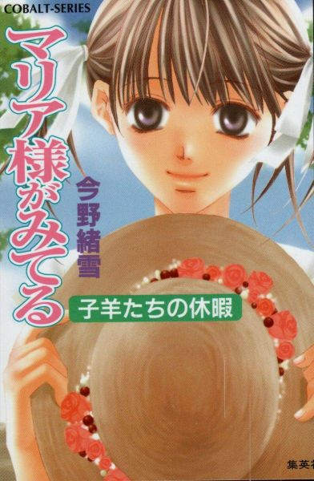
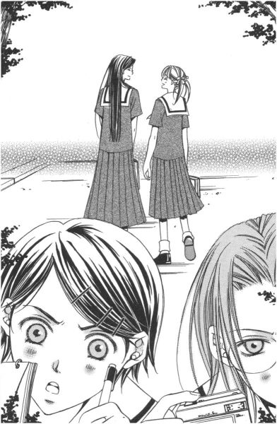
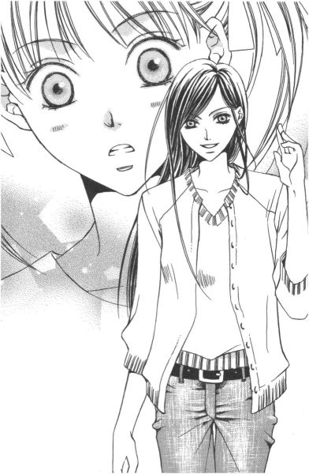
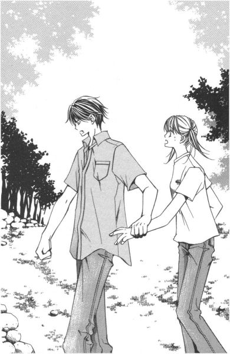
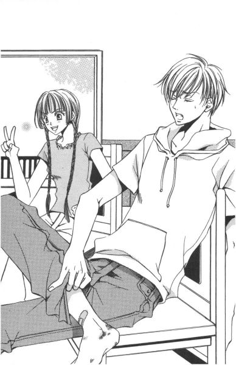
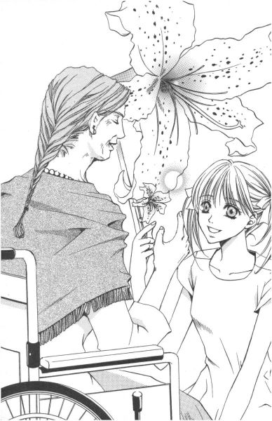

| [今野緒雪] マリア様がみてる12 | |
| 今野緒雪 | |
| (2015) | |
|
マリア様がみてる
子羊たちの休暇
今野緒雪
|

もくじ
夏休みの予定
紋白蝶のみる夢は
押し葉の暑中見舞い
お坊ちゃま、お嬢さま
霧中模索
天使の歌
あとがき


マリア様がみてる 子羊たちの休暇
「ごきげんよう」
「ごきげんよう」
さわやかな朝の挨拶が、澄みきった青空にこだまする。
マリア様のお庭に集う乙女たちが、今日も天使のような無垢な笑顔で、背の高い門をくぐり抜けていく。
汚れを知らない心身を包むのは、深い色の制服。
スカートのプリーツは乱さないように、白いセーラーカラーは翻らせないように、ゆっくりと歩くのがここでのたしなみ。もちろん、遅刻ギリギリで走り去るなどといった、はしたない生徒など存在していようはずもない。
私立リリアン女学園。
明治三十四年創立のこの学園は、もとは華族の令嬢のためにつくられたという、伝統あるカトリック系お嬢さま学校である。
東京都下。武蔵野の面影を未だに残している緑の多いこの地区で、神に見守られ、幼稚舎から大学までの一貫教育が受けられる乙女の園。
時代は移り変わり、元号が明治から三回も改まった平成の今日でさえ、十八年通い続ければ温室育ちの純粋培養お嬢さまが箱入りで出荷される、という仕組みが未だ残っている貴重な学園である。
ジメジメした梅雨が明け、すっきりさわやかな季節が訪れ気分は爽快。
でも、浮かれてばかりもいられない。お楽しみの夏休みの前に待ちかまえているのは、避けては通れぬ学期末テスト。
とにかく、これさえ終わればって、教科書、ノート、参考書、辞書、便覧、年表なんかを机の上に積み上げて、好きなバラエティー番組も観ず、頭の中に各教科を詰め込むだけ詰め込んだ。
もちろんそれが全部身につくのならば文句はないけれど、無理ならテストの最中だけでも脳味噌から転げ落ちないように、できるだけ頭を動かさないように注意深く登校したりして。
とにかく、これさえ終われば、って。
その先に待っているのは、お楽しみの夏休みだ。
夏休みの予定
１
クリップでまとめられたプリントの束に視線を落としたままで、紅薔薇さまこと、小笠原祥子さまは冷ややかにこう言われた。
「行かないわよ」
「へっ？」
「だから、行かないって言ったの。それより、あなたのその、間の抜けた受け答え、どうにかならないものなの？」
どうにか、って言われても。口から出てしまったものは、今更引っ込めることなんてできないし──。 紅薔薇のつぼみ歴三ヶ月ちょっと、少し重い称号にもようやく慣れてきた福沢祐巳は、そう思った。
冷房機器などという気の利いた物のない薔薇の館は、窓という窓が全開されているため、まるでステレオ放送のように、蝉の乾いた鳴き声があちらこちらから侵入してきている。
梅雨が明けて、めっきり暑くなった。
季節はもう、すっかり夏。
祥子さまのお美しい額にも、淡水パールのような汗がうっすらとにじんでいる。
そんなことはさておき。
祐巳が今しなければならないことは、ついさっき耳にしたばかりの、お姉さまの信じられないお言葉を問いただすことなのだった。行かない、とは聞き捨てならない。
「でも、お姉さま」
身を乗り出して「約束は」って詰め寄ると、祥子さまはプリントから顔を上げてため息をついた。
「何も、約束を反故にするつもりはないわよ。でも祐巳、あなたったらすぐにでも駆け出しそうな勢いなんですもの」
「......いけませんか」
祐巳は、唇を少しとがらせてつぶやいた。本当に、スタート前の競走馬のごとく、早く早くって気ばっかり急いているのは自分でもわかっている。
ゲート、それは即ち期末テスト。それさえ終わったら、って必死になって勉強して、今日の最終日を無事に迎えて、そうしたら気持ちもハイになるでしょう。その先に待っているはずのものに、勢いで猪突猛進したいものでしょう。──いつの間にか、喩える動物が馬から猪に変わっちゃったけど。
「だって、ずっと待っていたんですもの、......遊園地」
そうなのだ。
今、紅薔薇姉妹が議論しているのは、懸案だった遊園地デートについてであって、それは、それが原因で梅雨の時期に大げんかしたといういわく付きの話題であったのだが、晴れて仲直りしたわけだし、改めて仕切り直しするのは当然だと祐巳は思っていたのである。だが、祥子さまの方はそうではなかったらしい。
「いけない、なんて言っていないでしょう？ ただ、今すぐというのはどうかしら、って相談しているだけよ」
「嘘。お姉さまは今、はっきり『行かないわよ』っておっしゃいました」
「あげ足を取るのおやめなさい。本当に、最近反抗的なんだから。すぐには行かないわよ、って言おうとして、『すぐに』を省略してしまっただけなのに大げさな」
「大げさですって？ だったら、もっと注意深くお言葉を選んでくださらないと。お姉さまの一言一言が、小心者の私の心には、グッサグッサ堪えるんです」
「まあ、それだけ口答えして、小心者が呆れるわ」
祥子さまは、プリントの束をテーブルの上に叩きつけた。その勢いに驚いて、白薔薇さまこと藤堂志摩子さんが「きゃっ」と可愛い悲鳴をあげた。
紅薔薇姉妹の会話があまりにエキサイトしていったので、存在がすっかり薄れてしまってはいたが、実はここ、リリアン女学園高等部生徒会本部であるところの薔薇の館の二階にある、会議室兼サロン内には、山百合会幹部全員総勢六名が勢揃いしていたのである。
期末テスト最終日の午後。明日から試験休みということもあって、夏休みのこととか、もろもろの確認をするために招集されていたのだ。
「あの、お二人をこのまま放って置いていいのかしら？」
紅薔薇姉妹の口論を黙殺している黄薔薇姉妹に、志摩子さんは小声で尋ねた。
「仲よく姉妹げんかしているんだから、野暮なことしない」
黄薔薇さまこと支倉令さまが、シャーペンの芯をカチカチと出して、読んでいたプリントにチェックマークを書き込んだ。
「止めなくても──」
白薔薇のつぼみこと、二条乃梨子ちゃんも真剣にお伺いをたてる。
「いいの、いいの。じゃれ合っているだけ」
黄薔薇のつぼみ歴は祐巳と同じだが貫禄は十分の島津由乃さん、組んだ指に顎をのせてのんびり答えた。
「じゃれ合う......？」
白薔薇姉妹は顔を見合わせて首を傾げた。この二人にとって、姉妹が「仲よくけんか」だの「じゃれ合う」だのという行為は、実感として理解できないことなのかもしれない。まだロザリオの授受から一ヶ月も経たない、ホカホカ姉妹だ。
それにしても、みんな丸聞こえなんですけれど。
でも、実際じゃれ合っているわけだから、祐巳は何も抗議できないのだった。
気持ちがすれ違っていた時にはできなかったことも、強い絆を確信した後は、何でもできる。むしろ何でもしたい。由乃さんと令さまが、ポンポン言い合っているのを以前は不思議な気持ちで見ていたけれど、今はストレートに気持ちを伝える方が気持ちいいってわかったから、ため込むのは身体に毒だってわかったから、祐巳はそうすることにしたのだった。
お姉さまの小言だって、いっそ楽しく聞こえてくるってものだ。
「とにかくね」
言いながら、祥子さまがティーカップに指をかけて、すぐに離した。
「あ、お代わりですね。今、入れます」
祐巳は立ち上がって、電気ポットに急いだ。お姉さまは食の好き嫌いが数限りなくあるけれど、ぬるくなったお茶もまたお気に召さないのだった。
「よくわかったわね」
「そりゃあ」
妹ですから。気持ちが通じたのがうれしくって、祥子さまの笑顔にほほえみ返すと、「ほらね」と由乃さんが志摩子さんたちに言った。
「姉妹げんかは、犬どころかバクテリアだって食わないのよ」
「なるほど」
勉強になったわ、って。だから、全部聞こえているんだ、ってば。もう、他の姉妹で遊ばないで欲しいんですけど。
「遊園地というのは、夏休みは混むものなんでしょう？」
入れ直された紅茶を満足そうに一口飲むと、祥子さまが言った。
「はあ」
祐巳は他の人たちにも温かいお茶を振る舞いながら、煮え切らない返事をする。一般的に行楽地とは、そういうものだと思うけど。
「学園祭の時期も近いしね」
「うっ」
ここで学園祭を持ち出されるとは、予想外のことで、祐巳は思わず絶句した。
何だ何だ。祥子さまったら、遊園地への道のりに小さな障害物を並べ始めたぞ。
「何より、私は暑いのが苦手なの」
出ました、お嬢さまの我がまま攻撃。
それを言われちゃ、おしまいだ。それじゃ、遊園地だけじゃなくて、夏休み中の姉妹のお出かけ全否定されたと同じことである。
「それで毎年夏は、避暑地の別荘へ行くのよ」
「一月半、ずっとですか」
「ずっとじゃないけれど。今年は、七月の終わりから八月の頭にかけて予定しているわ」
「じゃ、八月の後半とか」
祐巳はしつっこく食らいついた。先頃亡くなった祥子さまのお祖母さまのことも考えて、一応、お盆は避けてみた。──お祖母さまの信仰していた宗教が、何であるかは知らないけれど。
「夏休みの後半は、学校に出て学園祭の準備よ」
「えーっ」
「言ってなかったっけ？ 山百合会幹部の恒例行事だよ。夏休みの自主登校は」
令さまが冷蔵庫の扉を開けて、言う。
「だから、実質休暇は前半だけね」
製氷器から取り出されたキューブ状の氷がカップに当たる高い音を聞きながら、祐巳はうなだれた。
そんなに、ハードスケジュールだなんて。それじゃ、たとえ夏が苦手でなくても、夏休みで混雑していなくても、遊園地に行く時間なんて捻出できそうもない。
「では、遊園地は」
「だから、冬にしましょう」
「......はい」
まあ、最初から勝負はついていたようなものなんだけれど。それでも、お姉さま相手によく健闘した方だと思う。祐巳が席に戻った時、由乃さんも、「よくがんばった」って顔で迎えてくれた。
「まあ、焦らなくても遊園地は逃げないって」
「でも」
夏休みに、一緒にお出かけしたい。小声でつぶやくと、由乃さんは「まあ聞きなさい」とやはり声のボリュームを下げて囁いた。
「夏にしか行けない場所を提案すれば、祥子さまだって冬まで待てとは言えないわよ。私はそうした」
由乃さんのアドバイスって、どこかちょっと悪魔のささやきのイメージである。実際、それで令さまを振り回しているわけだから、決して間違った喩えではないのかもしれないけれど。
「私はそうした、って。由乃さんは、この夏どこかへ行くの？」
「ふっふっふ」
「ふっふっふ？」
「富士登山」
「わっ、本当に!?」
一応、邪魔にならないようにコソコソ話していたのだが、祐巳は思わず大声を出してしまった。祥子さまが一度目線を上げ、二人をチラリと見てから、再びプリントを読み始める。
けれど、誰だって驚くって。富士登山っていったら、富士山に登るわけでしょう。富士山は言わずと知れた日本一高い山。去年の今頃は、体育なんてほとんど見学していた人間が、よくもチャレンジしようと思ったものだ、って。
「ずーっと夢だったんだよね。手術してからもうじき十ヶ月だし、主治医の了解とったし、お目付役が一緒だし」
お目付役の令さまを見ると、会話には参加しないものの、渋い表情をこちらに送ってきた。想像するに由乃さん、たぶん脅迫まがいの説得をして、主治医の先生から強引にＯＫをもぎ取ってきたのではなかろうか。
友達だからあえて言う。由乃さんとは、そういう人だ。
それならば、対照的なもう一人の友人は──、と祐巳は一応は会議が終わって自由時間と化した室内をチョロチョロ進んで、ふわふわ巻き毛の美少女の座っている椅子の傍らにしゃがみ込んだ。
「志摩子さん」
「えっ？」
ぴったり椅子にくっついて顔を見上げる友に気がつくと、志摩子さんは「いつの間に」って顔をして目を丸くして驚いていた。それに構わず、祐巳は志摩子さんの袖を摘んで「ねえねえ」と引っ張った。
「あのさ、夏休みどこか行く予定ある？」
「乃梨子と一緒に、教会と仏像展の梯子をしようかと」
その乃梨子ちゃんと、目と目を合わせてほほえむ。
「すごい、らしい組み合わせだわ」
思わず「納得」ってうなずいてしまう。この二人は、リリアン女学園の生徒にしては珍しく、仏教が縁結びをした姉妹なのであった。
「そういう祐巳さんは？」
「うーん。例年だと、山梨のお祖母ちゃんのところかなぁ。でも、お祖母ちゃん、今年はこっちに出てくるみたいなことをいっていたからどうかな」
何か、一人だけちゃんとした予定がなくてつまらない。つまらないというより、他の人たちがうらやましい。だって、みんな姉妹で一緒のスケジュールなんだから。
──と、祥子さまが不意に名前を呼んだ。
「祐巳」
「は、はいっ」
不満が顔に出ていただろうか。あわてて立ち上がり、振り返って返事をする。「文句があるならおっしゃい」なんてこと言われたら、返す言葉が見つからない。言ってどうにかなることなら言うのもいいけれど、何をしても動かせないことならば、言ったところで空しくなるだけだから。
けれど祥子さまからは、想像していた言葉は発せられなかった。その代わり、主語のない述語のみが祐巳の耳に届いた。
「来る？」
「え？」
来る、とは。動詞のカ行変格活用における「来る」の終止形または連体形で──。
いや、そんなことはテストの終了とともに忘れてしまっていいこと。
今問題なのは、「誰」が「どこ」に来るのかという話であって。
省略されている主語が、仮に一人称である「私」、つまり祥子さま本人のことを指しているとしたらどうだろう。その場合、目的語は「ここ」とか「学校」とかが適当だと考えられる。だって「私はパリへ来る」とは普通言わない。「ここ」とは今いる場所を示すのが普通だ。ここがパリでない以上、パリへは「行く」ものだ。
しかし、「私は学校（ここ）に来る」なんて、わざわざ言うことだろうか。
祥子さまの言葉は疑問形だった。ならば、主語はむしろ「あなた」とか「祐巳」とか。そうなると、いったいどこに「来るか」というのが問題なのだが。「来る」という動詞を使っている以上、やはり祥子さまがいる所ということになってしまうし──。
クェスチョンマークをたくさん飛ばしながら考えていると、祥子さまが呆れたようにもう一度、今度は言い回しを変えて言ってくれた。
「えっ、えっ、えっ、えーっ!?」
それを聞いた祐巳は、本当にぶったまげた。
その驚きの持って行き場に困って、思わず両手の平を開いて並べて、車のワイパーのように肩の前で半円を描いてしまった。
だってお姉さまのお言葉は、祐巳がまったく思いも寄らないものだったから。
そりゃそうだ。
よかったら、うちの別荘にいらっしゃい、──だなんて。
２
驚いたのは家族も同じだ。
「別荘!? 小笠原家の!?」
お父さんは水ようかんの缶の蓋をパカッと開けた姿勢で目を丸く見開き、お母さんは急須を持ったまましばし固まった。夕食後、ソファーで雑談してた時のことである。
「どうしましょう。祐巳ちゃんのパスポート、まだ申請していないのよ。七月の最終週っていったら、もうすぐよ。今から間に合うものなのっ？」
「......」
うろたえるお母さんの様子を見て、この人は間違いなく私を産んだ人だなぁ、と祐巳は思った。わざわざ言わないけれど、それは祐巳が祥子さまからお誘いを受けた直後に言ったのと、ほぼ同じ言葉なのだった。
「確か、二週間くらいかかったよな、なっ」
しかし、食事中に言わなくてよかった。この驚きようから予想するに、両親のどちらか夕飯の肉団子をのどに詰まらせて救急車を呼ぶはめになっていたかもしれない。
「国内だってば」
祥子さまが毎年夏に訪れるという別荘は、東京から新幹線で一時間半で行ける高原の避暑地にあるのだ。
「国内......。そうよね、普通日本よね。嫌だわ、別荘という言葉のもつゴージャス感と、小笠原家がダブルで押し寄せてきたから、思考が麻痺してしまって」
お母さんが、頬を引きつらせながら笑った。
しかし、海外と思い込んでも仕方ないこと。祐巳のお姉さまである小笠原祥子さまは、天下の小笠原グループのお嬢さまで、世界中の至る所にお城を所有していてもおかしくないほどのお金持ちなのであった。
例えば、スウェーデンとかギリシャとかローマとか。いずれも行ったことがないので、イメージで想像しているにすぎないのだけど。
「しかし、あちらのご家族も行かれるのだろう？水入らずのところを、お邪魔じゃないのかね」
「お父さまもお祖父さまも会社があるから、お盆休みにいらっしゃる予定らしいの。お母さまもそれに合わせられるんだって」
夏休みの後半、学校に出なければならない祥子さまだけ、早い時期に滞在することになって、だったら祐巳も気兼ねなく過ごせるでしょう、と誘ってくれたわけだ。
「ねえ。お邪魔してもいいでしょ？」
祐巳は、お父さんの腕をとって言った。甘えておねだりなんて、すごく久しぶり。
「どうしたものかな。反対する理由はないが──」
お父さんはちょっぴり鼻の下を伸ばして、お母さんを見た。
「そうね......。でもあちらのご両親に、ちゃんとご挨拶をしてからでないと」
「あちらのご両親に？」
まあ、グループ研究をまとめるために誰かのお宅に集まるのとはちょっと違うから、そんな風に大げさになってしまうのは仕方ないことかもしれないけれど。いや、うちのお母さんはその程度のことでもお世話になるお宅にお礼の電話をかけてしまうほどの律儀人間なのだけれど、と祐巳は思った。
「じゃあ、お母さんが祥子さまのお母さまに電話して、ちゃんと話して納得できたらいいってわけ？」
「そういうことね。......ああ、でもドキドキするわね。何だか、娘の嫁ぎ先にご挨拶するみたいで」
「......おかーさんたら」
そこらへんの反応、リリアンＯＧならでは。同じ家に暮らす家族でも、男どもには理解不可能だろう。
「ねえ、お土産なんかどうしたらいいのかしら。銀座とかで高級菓子の詰め合わせなんか買って持たせたらいいもの？でも、そんな物あちらはきっと食べ慣れているわよね。逆に、もっと庶民ぽい物の方が喜ばれるかも。ああ、それより滞在費みたいにいくらか包んでいくべきなのかしら？でも、現金なんて持っていったら、あちらがご不快になることだってありえるわよね。だからといって、商品券にすればいいってものでもないでしょう？だいたい、世話になったお礼の相場って一日いくらで計算すればいいのかわからないもの」
パニック寸前のお母さんは『暮らしの中のおつき合い便利帳Ｑ＆Ａ』なる本を取りだして索引をくり出したけれど、だいたい「子供が、いつも指導してくださる（お金持ちの）お姉さまの別荘に遊びにいく場合の親の心得」なんて項目、載っているとは思えないのだった。
しかし、お母さんはお母さんなりに思うところがあるのだろう。索引を凝視する目が、ギラギラと血走っている。
それはたぶん今年の正月、小笠原家に祐巳がお泊まりしたことから始まっているのだ。その時祐巳は聖さまにだまし討ちのように連れて行かれたから、祥子さまのお家だなんて知らなくて、当然お母さんにもただの合宿というニュアンスででかけてしまった。
菓子折一つ持っていったからいいんじゃないかな、と祐巳は思ったけれど、お母さんにしてみれば、娘がお姉さまのお宅に一泊お世話になるのに事前にちゃんとしたご挨拶もしなかったというのがどうにも心残りであるらしい。おまけに、無関係の息子までお邪魔していたと聞いてショック倍増。
いつの日か取り返そうと機会をうかがっていた矢先に、祥子さまのお祖母さまが亡くなって、祐巳は学校から直接伺ったから、当然何も持参しなくて、帰り道で一緒に行った蓉子さまに相談したら「密葬だったし、あの家は堅苦しいことが嫌いだから、改めて御霊前なんて持っていかない方がいい」って言われて、結局そのままになってしまったのだ。
だから、「今度こそ」って張り切っている。蓉子さまも言っている通り、祥子さまも祥子さまのお母さまである清子小母さまも、全然そういうの気にしない人みたいだけれど。
「祐巳ちゃん。どうして小笠原家なんていう、すごいお家のお嬢さまに目をつけられちゃったのかしらね。こうなると、玉の輿も考えものね。親戚づきあいのことを考えると、親もきついわ。お願いだから、今度お嫁にいく時はぜひとも庶民を選んでちょうだいね」
お母さん、思考がこんがらがって、とうとう訳のわからないことを口走り始めた。
「もう、今夜はこれくらいにして休みなさい」
結局、見かねたお父さんに連れられて、お母さんは少し早いけれど寝室へと引き上げていった。ドクターストップならぬ、ハズバンドストップだ。
「大騒ぎだ」
弟の祐麒がソファーの上であぐらをかいた。静かだから存在を忘れていたが、彼はずっとリビングにいた。いながら、家族の右往左往を一人冷静沈着に眺めていたわけである。
「うん」
祐巳はうなずいて、湯飲み茶碗に日本茶を注いだ。お母さんが急須にお湯を注いだまま放置したから、思った通りずいぶんと濃い色にでている。鶯色、いやモスグリーンだな、これはもう。
「あんなんだけどさ、うれしいんだよ、お母さん」
「そうだね」
姉弟二人、仲よくお湯で薄めたお茶をすする。季節的には麦茶って感じだけれど、緑色の温かいお茶も悪くない。味覚が大人になったってことかな。
「別荘か......。俺もその頃、そっち方面に合宿に行くから」
向こうで会ったりして、と祐麒はクッションを抱えて笑った。彼は、リリアン女学園のお隣にある花寺学院高校の二年生である。
「合宿？ 祐麒、部活動なんかやってたっけ？」
「生徒会」
「あんたも、生徒会に関わっているの」
「まあね」
中学までは、そういうものとは一切無関係で生きてきた平々凡々姉弟であるが、高校に入ってからはお互い生活が一転、めまぐるしくもドラマティックな学園ライフを送っているようである。
しかし、生徒会といったら。
「まさか、柏木さんも一緒とか──」
まずい、まずい。あの人だけは、危険だ。
「あの人は卒業したけど？」
「あ、そうか」
祥子さまの従兄にあたる柏木優さんは、祐巳たちより二つ年上だった。この春、花寺学院高校を無事卒業し、現在は花寺大学に在籍している。
「でも、柏木さんのことだから、後輩指導とか称して合宿所に忍び込むんじゃないの。祐麒、気をつけなさいよ」
「あの、祐巳。俺は弟として、今姉の口から出た問題発言に、どう反応していいかわからないんだけど」
「気をつけてね。柏木さんは、嫌がっている祐麒のことを好きだって言ってたから」
「どう気をつけろというんだよ。嫌がればあいつを喜ばせることになるし、かといって無抵抗になんてなってられないじゃないか」
「よくわからないけれど。とにかく、ノーマルを守るのよ。アブノーマルに引き入れられたらだめよ」
冬山で遭難した人が仲間に眠らないよう励ますみたいに、祐巳は祐麒の肩をつかんで激しく揺すった。しかし、年子で同学年の弟は、冷めたものだ。唇の端を小さく上げて、フッと軽く笑った。
「言葉の意味、わかって使ってる？」
「......大まかには」
結局、姉がギャーギャー騒いだところで、何もならない。祐麒は、自分の身を自分で守らないといけないわけだ。男の子も大変だ。
「しかし、生徒会の合宿って何するの？」
「学園祭の打ち合わせとかがメインだけど、まあ、親睦会を兼ねたがんばりましょう会といったところじゃないの？」
「ああ、学園祭ね」
リリアンでも準備しなくちゃ、っていう空気が日に日に濃くなってきている。高等部生徒会長であるところの薔薇さまたちは、学園祭の実行委員とともにリーダーシップをとる立場だから、妹たちもお手伝いに忙しい。それに加えて、山百合会の幹部たちは山百合会の看板背負っての出し物をしなければならないのだ。ちなみに、去年は舞台劇『シンデレラ』。
でも、学園祭って聞くたびに、一年って早いなぁ、なんて思う。思い返せば、祥子さまと姉妹になったのは、去年の学園祭のことだった。
「で、今年は何やるの？」
祐麒が尋ねた。
「そっちは？」
「まだ決まってない」
「こっちも同じ」
とはいえ、薔薇さま三人の中では、すでに構想はできあがっているようなのだ。でもちょっと恐ろしくて、祐巳たちつぼみはお姉さまたちに聞くに聞けないでいるのだ。
なぜって。去年だって、前薔薇さまたちが、嫌がる祥子さまをはめるような形で『シンデレラ』が上演されたわけだし。それを踏まえれば、今年はつぼみである祐巳や由乃さんが、すごいことを請け負う巡り合わせにあるのは明らかだった。たぶん、去年に輪をかけて。
「......男子校の学園祭はどんな感じだろう。今年は見に行ってみようかな、花寺」
参考に、というよりも、気晴らしに、が気分的には近いかもしれない。毎年花寺の学園祭は、リリアンより一足早く行われていた。
そんな、所詮他人事、という気の抜けきった祐巳の発言を、祐麒が訂正した。
「行こうかな、じゃなくて、行かなきゃな、だろう？」
「へ？」
「リリアンと花寺は、学園祭にはお互い生徒会が手伝いにいくのが恒例じゃないか」
「あ」
「あ、じゃないよ」
まったくもう、って。弟よ。そんな情けない顔をしなくてもいいと思う。
「じゃあ、今年は祐麒もうちに来るのかな。でも、去年リリアンの学園祭には柏木さん一人しか来なかったから、全員参加ってわけでもないのか」
「相手方からの要請に応じて手伝いを出すんだよ」
「そっか。じゃ、やっぱり祐麒が来るって可能性もあるわけね。でもさ、身内に見られるのって嫌だよね。去年、お父さんとお母さんが来るっていうの、必死に止めたし」
ね、と同意を求めると、弟は少し黙り込んだ。その沈黙は何なのだと詰め寄ると、しぶしぶながら口を割った。
「......俺、行ったんだよ。去年、リリアンに」
「嘘っ!?」
「柏木先輩が出ていたから。他の先輩に、無理矢理連れて行かれたんだ」
「ひえ......っ」
無理矢理でも何でも、あの『シンデレラ』を観たという事実は変わらない。
「どーして、それを一年も経ってから言うかな。やだ、信じられない」
祐巳は、弟からクッションを奪ってポカポカ叩いた。
あの、下手くそな姉Ｂを、よもや弟に見られていたとは。それを今まで知らず、のんきに暮らしていたとは。自分は何てお目出度い人間なんだ、って本気で落ち込んだ。
「改めて聞かれなかったし、そういう反応がかえってくると想像ついたから、黙ってたんだけど。ふーん。一年経っても、まだ恥ずかしいんだ、祐巳は」
クールに分析してくれるのは、約一年という短い歳の差ではあるが、れっきとした実の弟。ああ、なんか憎たらしい。いや、うらやましいのだ、たぶん。精神的には、かなり追い抜かされているようだから。
「よかったよ。すごく」
祐麒は拗ねて後ろを向いた祐巳の肩に手をかけて、そう言った。
「本当？」
振り返りながら祐巳は、いつからこんなに自然にやさしくできる男になったのか、って弟の顔を不思議に見つめた。そりゃ祐麒は、昔からやさしい子ではあったけれど、表現するのは下手だった。
「うん。意地悪な姉役にしちゃ、可愛くて憎めなかった」
「それって演技力に問題あり、って意味じゃ......」
「いいんじゃない？ 本職じゃないんだし。俺たちの仲間内でも、結構評判よかったよ」
何で、そういう気の利いたこと言えるのかな、って時々感心する。せめて祐麒の半分でもいい、的確な言葉をスラリと言えるようになれたら、って祐巳は思う。そうすれば、もっともっとお姉さまを支えられるたくましい妹になれるのに。
「今年も来る？」
「たぶん、行かなきゃいけないだろうな。そっちが、どんな企画をもってこようとも」
そして祐麒は、またまた力がわいてくるような言葉を祐巳にくれた。
「今年は、俺も一緒に恥をかくからさ」
──って。
３
祥子さまから電話がかかってきたのは、試験休み二日目のことだった。
最初に電話をとったのはお母さんだったけれど、二日前のあのパニックからはもうすっかり立ち直っていたので、よそゆきモードでしっかり「いつも娘がお世話になっております」とご挨拶できたし、祥子さまも頼りになる上級生らしく「こちらこそ祐巳さんのお陰で助かっています」なんて答えていた。
祐巳は、電話が祥子さまからだってわかったので、受話器にひっついて会話を聞いていたのだ。懸案のご両親へのご挨拶はどうなったかというと、祥子さまのお父さまとお母さまはお留守だそうで、「くれぐれもよろしくお伝えください」という言葉で済んでしまった。お母さんは一人であんなに盛り上がっていたのに、現実はあっけないもの。不意打ちであちらから電話がかかってきてしまったから、悩んだりしてる暇はなかったし、丁度よかったと思う。
『別荘に、誰か誘いたい人はいて？』
祐巳が電話を代わると、祥子さまは前置きもなくそう言った。
「はい？」
『もしよければ、二、三人に声をかけてもいいのよ』
「はあ」
言っている意味が理解できなくて、祐巳はあやふやに相づちを打った。だって、本当にわからなかったのだ。どうして祥子さまの別荘に招待されたお客さまであるところの自分が、他に声を掛けて参加者を募らなきゃならないのか、って。
もしかして、毎年大勢集めてワイワイやるのが恒例になっていて、祐巳はその中の一人にすぎなかったのだろうか。それで今年はご家族がご一緒じゃないから、その分人数を増やそうとの考えから祥子さまはそんな発言をした。──なんて、思いを巡らした。
「お姉さまは、私の他にも誰か誘われているのですか」
試しに聞いてみると、答えは。
『いいえ、誘っていないけれど』
ますますもってわからない。
『私はいいの』
じゃあ、私もいいですって言いかけて、やめた。わざわざ電話をかけてきたということは、祥子さまはもしや賑やかになるのを望んでいるのではないか、と考えたからだ。
「えっと」
真意を探るのは難しい。祥子さまは天の邪鬼だから、うまく聞き出さないと、へそを曲げてしまいかねない。
「あの、じゃあ蓉子さまをお呼びするっていうのはどうですか」
水野蓉子さまは、前紅薔薇さまで、祥子さまのお姉さまである。祥子さまの意向はわからないけれど、わからないながらもそこにどうしても誰かを組み込まなければならないのならば、蓉子さまを措いて他に考えられない。
『いつでも忙しそうよ、あの方は』
絶対間違いない、と踏んで言ったんだけれど、祥子さまが「忙しそう」と言うからには、その線は使えない、と。かといって、蓉子さまぬきで前の薔薇さま二人を呼ぶというのはどうだろう。よくわからないけれど、何か違う気がする。
次に、由乃さんとか志摩子さんとかの顔が浮かんだけれど、それじゃいつものメンバーになってしまうし、祥子さまがもしそれを望んでいるのならば、回りくどい言い方などせずに『山百合会の幹部の合宿にしましょう』と提案するはずだった。
「それでは、お姉さまのクラスメイトのどなたかでは」
『あなた、ちゃんと話を聞いていた？ 私はあなたに、あなたが誘いたい人を呼びなさいと言ったのよ』
聞いていました。ちゃんと聞いていましたとも。だからこそ、悩んでるんですって。祐巳は、心の中で悲鳴をあげた。
だってこの問題、学期末に行われたどの教科のテストよりも難しいんだ。あまりにハードで、もういいですから正解を教えてください、って降参してしまいたくなった。
『とにかく、試験休み中に声をかけておきなさい。終業式に聞きますからね』
結局、その問題は問題のまま宿題になってしまった。
これは夏休みの宿題の中に混ぜてみても、一番頭を使う課題であろう、──たぶん。
＊ ＊ ＊
『行かないわよ』
「へっ？」
『だから、行かないって言ったの。それより、祐巳さん。その、間の抜けた受け答えどうにかしないと、祥子さまに嫌われるわよ』
何か、数日前に、違う誰かと同じような会話を交わしたような──。祐巳は自室で電話の子機を握りしめたまま、「ふーむ」と唸った。
「それはともかく、由乃さん。今、行かない、って言われましたか」
『言いましたとも。だって、祐巳さんが小笠原家の別荘に滞在するっていう日程と、私たちの富士登山の日がぴったんこで一致するんだもん』
結局祐巳は、「別荘へ行きませんか」というお誘いの電話を、迷った末に由乃さんにかけてしまったのである。いつもの代わり映えのないメンバーになってしまうけれど、その分大失敗はないだろうし、別に、祐麒の話に触発されたわけではないが、山百合会の合宿みたいになれば、それはそれでいいかもしれないと思ったのだ。
『志摩子さんたちだって、同じだと思うよ』
まあ、後半から学校での活動がびっちり詰まっているのだから、そうでない時期に同じように予定が入っていても、それは偶然でもなんでもないわけで。
『その上さ、私たちなんて部活の合宿もあるんだよね。やっぱり、山百合会との掛け持ちはきついな』
「そうだね」
祐巳はベッドにごろんと転がり、手近にあった乳液の容器を握って振り回した。由乃さんはこの春から、令さまと同じ剣道部にも籍を置いているのである。
『それに、誘われたのは祐巳さんだけでしょ。お邪魔はしないわよ』
由乃さんは、電話の向こうでカラカラと笑った。
「邪魔、って」
祐巳は苦笑した。
「祥子さまがさ、他にも誘っていいわよ、って言うのよね。いや、誘ったらどう、みたいな口調だったかな」
『何、それ』
「よくわかんないんだよね。何かさ、二人じゃ物足りないのかな。それとも、賑やかにしたいのかな。でも、だったらさ、ご自分のクラスメイトとか誘えばいいじゃない？私は、祥子さまのお友達なら、全然構わないし。むしろ仲よくしたいとさえ思っているし。でも、そうじゃないんだよね。祥子さまの口調だと、祐巳が連れていきたいなら連れていらっしゃい、って感じで」
別に、夏休みでどこにも行く予定がないなら小笠原家が別荘を提供しましょう、って口振りで。でも祐巳は、別荘に行きたくてしょうがないわけじゃないのだ。ただ、お姉さまとの思い出を作りたいと願っているだけ。だから会社の保養所があるから、仲間を連れていらっしゃい、みたいな誘われ方をされると、ちょっと違うんじゃないかなと思ってしまうのだ。
『よくわからないわね』
「でしょ？」
『違う。祥子さまのことを理解してしまおうなんて、私ははなから考えていないわよ。私が言っているのは、祐巳さんの気持ちよ』
「へ？」
『どうして、全然構わないのよ。二人がいいって、どうして言わないのよ』
由乃さんは「どうして」を重ねて返答を迫ってくる。
「......別に。考えてみたら、何も二人きりじゃなくてもいいかなぁ、って」
『うそっ、どうして』
「どうして、って」
祐巳は思い返してみたのだ。お正月に小笠原邸を訪れた時だって、聖さまたちが一緒で楽しかったし。この間、祥子さまのお祖母さまのお宅へ行った時だって、蓉子さまたちがいてくれたから助かったし。みんなが揃ってワイワイやっているの、意外に祥子さまは好きなのかな、なんて近頃考えてみたりして。
『信じられない』
由乃さんのつぶやきが、受話器から聞こえてきた。
由乃さんにとってお姉さまである令さまは、いつでも一緒が当たり前で、優先順位はいつもトップ、その他大勢とは比べようもない存在であるから、自分たちとは異なる姉妹の関係に触れようものなら「信じられない」と、もう口癖のように言うのだった。祐巳から見れば、黄薔薇姉妹のべったりこそ「信じられない」ことで、あそこまでくっついていられるのはもう奇跡といっていい、と常々思っているのだけれど。
「しかし、由乃さんや志摩子さんがだめとなると......」
さて、どうしよう。
蔦子さんや真美さんあたりに声をかければ、飛び跳ねながらついてくるだろうけれど。でも、一応はプライベートなわけだし、写真部や新聞部の目が光っているところでは何だか安心してくつろげないような気がするし。カメラの持ち込み不可とか取材拒否とかという条件を出して招待するのは、逆に彼女たちには酷だと思われた。
「いっそ、瞳子ちゃんを誘うか」
深く考えないでつぶやくと、受話器の向こうで由乃さんがまたもやうるさく騒ぎ出した。
『ばかばかばかばか。ばっかじゃないの、祐巳さんったら』
「そこまで『ばか』を重ねなくても」
指折り数えたら計五回だ。
『だって、ばかなんだもん』
あ、六回目。
『ライバル呼んでどうするのよ。小笠原家の別荘という場所はね、ただでさえお初の祐巳さんはアウェーなのよ。その不利な状況下で、あなたはあの生意気な縦ロールと同等に戦えるわけ？』
「アウェー......」
さすが、趣味がスポーツ観戦の由乃さん。喩え方が、一風変わっている。
「じゃ、瞳子ちゃんはホームなわけ？」
『ホームもホーム。血はつながってないけれど、あの子は祥子さまの親戚なんだから』
「あ、そうか」
そんな話もあったっけ。祐巳はすっかり忘れていた。
『劣勢の人間が、優勢の敵に塩を贈ってどうする』
「は、はい」
ごもっとも。
『いいこと。絶対に誘っちゃだめよ。祥子さまに水を向けてもだめよ』
「由乃さん、怖い」
『祐巳さんが人が良すぎるから、心配してあげているんでしょ。ううん、お人好しっていうんだわ、そういうの』
「うー」
言い返せないところがつらい。由乃さんは祐巳が黙り込むと、ますます調子づいてまくし立てるのだった。
『祥子さまには、二人で行きましょう、って言うのよ。いい？わかった？』
その迫力に押されて、祐巳は取りあえずその場はうなずいておいたのだが──。
４
「そう。じゃ、聖さまにでも声をかける？」
一学期の終業式が終わって、ホームルームの後待ち合わせた中庭で、祐巳の話を聞いた祥子さまはそう言った。
「聖さまですか」
元薔薇さまというのなら、別に江利子さまでもいいのに、どうして聖さまの名前を出すのだろう。もしや、一ヶ月ほど前のあの出来事を、祥子さまはまだ気にしているのだろうか、──と祐巳は思った。
連日の空のように、姉妹の上に重苦しい雲のたれ込めた梅雨のあの日、祐巳は瞳子ちゃんに嫉妬して、祥子さまから逃げるように聖さまの胸に飛び込んでしまったのだ。
夏の午後。
空は高く青い。太陽はジリジリと照りつけ、短い袖から出た腕を容赦なく焼く。
祐巳の心と身体を冷たく濡らしたあの日の大雨が、まるで嘘のよう。あれから、まだ一月しか経っていないなんて。
「聖さまが一緒なら、祐巳も楽しいでしょう？」
「......」
不思議なことに聖さまという人は、祐巳が危機に陥った時にその場に居合わせることが多くて、気がつけばいつも救いの手を差し伸べてくれる。だから、つい頼ってしまうのだ。祥子さまがそれを面白く思っていないことを、祐巳も薄々感じている。
それって、もしかして嫉妬？ ──なんて、ずうずうしくも分析してみたりする。
でも、祐巳はずっと祥子さま命だったし、浮気なんてしていない。あ、ほっぺたにチュッてのはあったけど、聖さまにとってあんなの挨拶みたいなものだし──。と、そこまで考えて、祐巳は素直に反省した。そんな風に、感覚が麻痺していること自体に問題があるのだ。
「でも、大学生って、ゼミとかあるんじゃないですか」
よく知らないけれど、たぶん。
「ああ、それはあるかもしれないわね」
祥子さまは、水分を蓄えたみずみずしい低木の葉をそっと撫でながら、日陰を選んで中庭の小道をゆっくり歩いた。ざっと見渡すかぎり、二人の他に人影はなかった。晴れて夏休みを迎えた生徒たちの、帰宅の足は早いのだ。
もしかしたら、祥子さまは全然気にしていないかもしれない、と後ろを歩きなら祐巳は思った。だとしても、やっぱり聖さまを誘うのはどうだろう、って気はする。だから、聖さまに代わる別の名前を頭の中で必死になって検索して、最初に出てきたものを取りあえず再生してみた。
「瞳子ちゃんなんかは」
頭の中で、由乃さんが七回目の「ばか」を叫んでいる。でも、口から出てしまったものは仕方ない。
「瞳子ちゃん？」
祥子さまは、少し怪訝そうに聞き返した。その時、祐巳ははたと気づいて、己の心に通算八回目の「ばか」を自らがつぶやいた。祥子さまがしたと同じことを、自分が返してどうする。これでは、瞳子ちゃんのことを過剰に意識しているみたいに取られてしまいそうだ。
「あの子はだめよ」
程なく、祥子さまが答えた。
「だめって、言われますと......？」
祐巳は探るように尋ねた。大丈夫、祥子山は取りあえず今のところ噴火する気配はない。
「七月は、ご両親とカナダ旅行ですって」
「......カナダ」
それは、何というか豪勢なことで。
「それじゃあ、誘わない方がいいですね」
国内で避暑と海外のバカンス。いくら祥子さまを慕っている瞳子ちゃんでも、天秤に掛けたら、やっぱり海外を選ぶだろう。
とにかく、少なくとも由乃さんに叱られる事態だけは回避できたということか。祐巳がホッとして祥子さまを見ると、喜怒哀楽のどれにも属さない静かな横顔がそこにあった。
何かを思案している風で、祐巳がじっと見つめていても気づかない。
何を考えているのか尋ねるのは容易いけれど、声をかけてお姉さまの時間を邪魔していいものだろうかと、こちらもまた思案してしまうのだ。
やがて、祥子さまが視線を感じてこちらを向いた。祐巳は勇気を出して尋ねた。
「お姉さま、私一人じゃ心許ないですか」
「そんなわけないでしょう。あなたったら、どうしてこう見当はずれなことを言うのかしら」
言葉はきついが、祥子さまはほほえんでいた。
「私は祐巳が来てくれるだけで十分だけど」
「え」
何ていう殺し文句。
──祐巳ガ来テクレルダケデ十分。
もう、生徒手帳に書き込んで、肌身離さず持っていたいお言葉じゃないか。
「私だって、お姉さまさえいてくだされば......！」
飛び上がりたくなるのをグッと抑えて、祐巳も告げた。何だ、二人とも同じ気持ちだったんじゃない、って。すごくすごくうれしかった。
でも、だったら祥子さまはどうして他の人も誘おうなんて思ったんだろう。
けれどそんなささやかな疑問など、「祐巳が来てくれるだけで」という強烈な言葉の前では、たちまち輪郭がぼやけて、もはや霞のように消え去ってしまうものなのだ。
「二人でいいの？」
まだ、祥子さまはそんなことを言っている。
「はいっ」
祐巳は元気よく返事をした。
二人なら、場所はどこでも楽しいはず。
この時点では、そう信じて疑わなかった。
＊ ＊ ＊
「聞きました？」
「聞きました」
紅薔薇姉妹が仲よく中庭から肩を並べて帰っていったその後で、生い茂った低木の裏から二つの影が現れた。

「小笠原家の別荘。是非ともご招待いただきたいわ。無理なら紅薔薇姉妹の休暇を、チラリと覗くだけでもいい」
七三分けの前髪をピンで留めた短髪の少女が、開いていた手帳を閉じてつぶやいた。
「でも、私有地ですからね」
答えたのは銀縁眼鏡の少女。手には、小型のカメラが握られている。
「勝手には入り込めませんね」
「それにしても、紅薔薇姉妹を追いかけてこの茂みに身を隠した時には、まさか先客がいたとは思いませんでした」
「いやはや。私もあなたが現れた時には、ギョッとしたものです」
「興味の向く方向が、同じというわけですね」
二人は笑いながら、腰を伸ばし、肩を回した。ずっと同じ体勢でそこに潜んでいた証拠である。
「ここは諦めて、黄薔薇姉妹または白薔薇姉妹をターゲットにした方がいいでしょうかね」
ご意見は、と七三が眼鏡に尋ねる。
「そうですね。ちなみに白薔薇はどちらに」
「確か、教会と仏像展めぐりとか」
「黄薔薇は」
「富士登山」
七三の取材メモには、主に山百合会幹部に関する情報がびっしりと書き込まれていた。
「まあ、どれも一筋縄ではいかなそうな場所ばかり」
「ええ、本当に。でも、別荘の敷地外で、いつ出てくるかもわからない二人を張るよりは勝算があるような」
「でも、教会や仏像展ではねぇ。尾行は容易ですけれど、写真が撮れない場合が多いですから、ちょっと......」
「だからといって、富士登山なんて選んだ日には。完璧な記事には完璧な取材がモットーの私としては、尾行しながら登頂しなければならないわけで」
「いっそのこと、尾行じゃなくて同行に切り替えては？そこまでやれば、黄薔薇姉妹も取材協力してくれますよ、きっと」
眼鏡が七三に、カメラを向ける。
「でも、自慢じゃないけれど、私、体力に自信はないんです」
「あらら。新聞記者には致命的」
蝉の鳴き声を切り取るように、シャッターの小気味いい音が一度響いた。校舎に入ってしばらく経つから、紅薔薇姉妹にはもう聞こえないだろう。
「いつもは気力が身体を動かして取材するんですが、富士登山では気持ちは最初から負けています」
「相手が日本一では、誰でもビビリますって」
眼鏡はカメラを下ろして笑った。
「では、やはり本命は紅薔薇姉妹が有力でしょうか。一緒に連れていってって、祐巳さんに頼んでみます？案外、ＯＫがでるかもしれませんよ」
「でも。二人の世界って感じのあの様子盗み見てしまうと、ちょっと頼みにくいですね」
「お邪魔虫ですものね」
「お邪魔虫です」
福沢祐巳のクラスメイトである二人は、彼女がどれだけお姉さまを好きかを知っている。それだけに、その先にどんなにいい記事やいい写真が待っていようとも、ささやかな幸せに割り込むなんてこと友情が邪魔してできないのである。
「それに、姉妹の休暇は見せてもらうんじゃなくて、見たいんですよ」
「わかります、わかります。欲しいのは報道向けのスマイルじゃなくて、プライベートの何気ない表情」
「その通り」
意気投合とはこういうことをいうのだろう。写真と新聞というジャンルは違えども、二人の嗜好はかなり重なる。
「忍び込みますか」
仲間ができると、人は加速をつけて強気になる。七三が、夏休みを前に短く切りそろえた髪を耳にかけてニヤリと笑った。
「それは無謀でしょう。小笠原家所有の別荘。十分な警備がなされているはず」
行き過ぎたら制止してくれる人間が側にいればこそ、安心して大きな事が言えるのだ。その点、眼鏡は、期待通りのフォローを決められるので適任といえよう。
「特に、お嬢さまがお泊まりの期間であれば。もちろん、万全のセキュリティーシステムで臨むはず」
「不法侵入者があれば、すぐさまセキュリティー会社が察知して駆けつける。いいえ、それくらいじゃ生ぬるい」
「塀の上には、高圧電流の流れる鉄条網？」
「そうそう。小笠原家お抱えのガードマンが、さながら衛兵のように門を守り、また高い塀の周囲を巡回し──」
「お付きのボディーガードは、もちろんパリコレのメンズモデルばりの美男子揃い」
「けれどお二人は自分たちの世界にひたっているから、そんな男たちには目もくれないの......！」
守備範囲を越えた想像力は、妄想という名になってどんどん膨らむ。
「ぜひとも、見たい」
「ええ、私も」
二人が夢みるのは、小笠原家の別荘でくつろぐ紅薔薇姉妹の美しくも穏やかな休暇。
ちなみに、七三の名は山口真美、眼鏡の名は武嶋蔦子という。
自分たちの知らないところでそんな会話が繰り広げられていたとはつゆ知らず、その日の夜祐巳はせっせと荷造りにいそしんだ。
七月の最終週の月曜日から一週間の予定で、お姉さまと高原の別荘へとでかけるのだから。
紋白蝶のみる夢は
１
たとえば遠足の前の日とか、試験勉強のために夜更かしした後だとか、明日のために速やかに眠りについて少しでも多くの睡眠をとらなければならないって時に限って、寝付けないのはなぜなのだろう。
眠らなきゃ、眠らなきゃ。そんな強迫観念が、目をさえさせてしまうんだってことくらいはわかっている。でも、だからといって、「眠らなきゃ」って思っちゃだめ、なんて暗示をかけようものなら、その先に待っているのは出るに出られぬ不眠の底なし沼。ズブズブズブズブ。そうなると、もうどうやったって逃れようがない。
それは、授業中とかの絶対に眠っちゃいけない場合には、まったく逆の作用が起こる。「眠っちゃいけない」「眠っちゃいけない」、そう命じると脳はなぜだか眠ろう眠ろうと努力するのであった。
だから、今回は試しに逆を命じてみた。早く眠らなきゃいけないから、「眠っちゃだめ」って。
しかし、頭の片隅では「明日にそなえて眠らないと」って思っているわけだから、案の定そんなことで眠れるはずはないのだ。
そういうわけで、祐巳がその日夢の中に片足をつっこめたのは、ベッドに入ってから約二時間後。目覚ましが鳴るまで、あと三時間を切っていたのであった。
「おはよーございます」
祐巳は、しかめっ面で階段を下りた。
思いっ切り、早い朝。瞼が、思うように開かない。だってまだ朝の五時だ。
「おはよう、祐巳ちゃん。晴れていてよかったわね」
お母さんは、キッチンでおにぎりを握りながらニコニコと振り返った。
「ご飯は？ 食べられる？」
「うーん」
どうしようかな、と自分の胃袋に聞いてみる。いつもは朝からしっかり食べられるのだけれど、さすがにまだ内臓の方も寝ぼけているようだ。
「ご飯がいやでも、ヨーグルトくらいは食べていきなさいね。空腹だと、乗り物に酔いやすいわよ」
「そうする」
祐巳は冷蔵庫を開けて、シリアルとヨーグルトとイチゴジャムを取り出した。ザッザッザ、ペチャペチャ、タラリ。カフェオレボウルの中で混ぜ混ぜしているうちに、ようやく瞼の開閉も軽くなってきた。
ダイニングテーブルの上には、すでに梅干しの入ったおにぎりができあがって、ラップにくるまれてお行儀よく並んでいた。
「お弁当作ったから、車内で食べてね。駅弁も悪くないけれど、何だか味気ないし。遠足には、お母さんのおにぎりが決まりだもの」
お母さんは、プラスチック製のバスケットの蓋を外して「どうだ」とばかりに見せる。中には、ハーブをまぶして揚げた白身魚フライ、それからアスパラガスとチーズをベーコンで巻いて焼いたものと焼きプチトマト。
「すごいね」
祐巳はシリアル入りヨーグルトを食べながら唸った。どれも、お母さんが作る遠足お弁当の定番メニューだ。張り切って早起きして、作ってくれたらしい。
「二人分詰めておくからね。祥子さまと食べてね」
「ありがとう。おいしそう」
誉められたお母さんは、気をよくしたようで、プチトマトのへたに関するうんちくなどを語り始めた。調子づいておにぎりの海苔を巻くタイミングに話が及んだ時に、寝ぼけ眼のお父さんが頭をかきながらダイニングに入ってきた。
「お、遠足か」
お父さんは、余ったお弁当のおかずたちが集められたお皿から、プチトマトを摘んで口に運んだ。
「そーだよ」
「ああ、今日だったか。祐巳ちゃんが小笠原家の別荘にお邪魔するっていうのは。それで、何時にどこで待ち合わせ？」
「五時五十分にＭ駅の改札口。お父さん、駅まで送ってくれるって言ってたよね？」
「おー、そうだった」
む。お父さん、一発手を叩くと、キーケースに手を伸ばして車のキーを外し、その手をグーって突きだした。
むむっ。このまま出かけちゃいそうな勢いだぞ。せめてそのパジャマと髭と髪の寝癖と目やにを、何とかしてくれないと。祐巳は背中を押して、まずは洗面所へと連れていった。
すると。
「お父さん、祐巳には甘いなぁ。俺にだったら、歩いて行けって言うに決まってる」
一階が騒がしくて目が覚めてしまったのか、いつの間に二階から下りてきたのか、祐麒が洗面所の前の廊下に立っていた。
「おはよう」
「おはよう」
寝崩れたパジャマを着てると、祐麒は本当にお父さんそっくりだ。寝癖まで同じだと、何だかもう、って呆れちゃう。
「祐巳ちゃんは女の子だからな」
お父さんは、歯ブラシにチューブ歯磨きを付けながら言った。
「おまけにこんなに可愛いんだぞ。人気のない道を独り歩きさせて、悪い男にさらわれたら大変じゃないか」
「男親とはありがたいものだな」
祐麒が笑った。
確かに。自分似の娘を指して、臆面もなく「可愛い」と言っちゃうんだからすごい。お礼に抱きついてあげてもよかったんだけれど、お父さんが歯磨きの真っ最中だったので自粛した。洗面所が歯磨きの泡だらけになってしまうのは、ちょっと。
「ホノヘン、ユーヒファホロロダファラ、ヒンパイヒテナヒ」
突然、お父さんは意味不明の言語を発した。
「え？」
ホノヘン、何だって？ 聞き返そうとすると、祐麒が素早く通訳してくれた。
「その点、祐麒は男だから心配してない、だとさ」
「はっ」
その言葉に反応して、祐巳は思わず人間翻訳機を見てしまった。
「......おい」
祐巳の考えていたことを察知した祐麒の方も、渋い顔をして姉を牽制しまくっている。余計なこと言うんじゃないぞ、と。
もちろん。
おとーさん。あなたの息子は男の子だけれど、可愛いので悪い男に狙われているんです。──なんてこと、口が裂けても言えっこない。
福沢姉弟は合わせた目と目をそらして、何事もなかったようにそれぞれの朝の身支度に取りかかった。
とにかく、今聞いた言葉は、お父さんのシェーバーを洗った水と一緒に洗面台の排水溝に流してしまった方がいい、って結論に達したのだ。
２
「おー。何か力入ってるね」
サンダルを履いて玄関を出ると、新聞を取りに外に出ていた祐麒が、姉の格好を上から下まで眺めて笑った。
「悪い？」
祐巳は、ちょっと唇をとがらせて弟をにらみつけた。そうよ、って軽くほほえんで交わせないところが、十七歳乙女の幼い部分なのである。
「いーや。似合っているよ、一張羅」
「一張羅って言うなぁ」
似合っているなんて、誉められたら誉められたで、また面白くないのだ。祐巳は右手でグーをつくって、新聞片手に戻ってきた弟の頭に向けた。
「でもさ、普段あまり着ないじゃん。ワンピースなんて」
祐麒は笑いながら腕を上げ、取りあえず頭をガードして逃げる。
「制服はワンピースだよ」
「こういう場合、制服は同じ土俵にのせないでしょ」
「まあ、そうだけど」
祐巳はおとなしくグーをしまった。
実際、自分でもわかっているのだ。買ったばかりの、白いフレンチスリーブのワンピに照れているんだってことは。
着慣れていない、っていうのかな。いつもと違う自分に、戸惑っている。
それは、髪の毛を切った次の日の感じにちょっと似ている。鏡に映った、自分でも見慣れない顔を、他の人はどんな風に見るだろうかって不安に思う。「似合っているわよ」って言ってもらえたとしても、本心から言っているのかってつい疑心暗鬼になったりして。
だからちょっとした言葉にも、ついつい過激に反応してしまうのだ。たまたまそこにいて、デリケートな服の話題をふってしまった祐麒には、お気の毒だったけれど、八つ当たりに似た姉のプチヒステリーをアンラッキーと諦めて受け止めてもらうしかない。
「そのワンピースさ」
祐麒は腕を組んでつぶやいた。懲りずにまだ言うか、って思ったけれど、気が向いたので耳を傾けることにした。
「紋白蝶みたいだね」
誉めても貶してもない、ただの感想だけど。祐巳は、それがすごく気に入った。
紋白蝶。
白いチョウチョみたいなワンピース。
それはレースも模様もついていない、後ろについているリボン一つがポイントのシンプルなデザインで。何の飾りもない分、すごく上品に見えるのだ。
もちろん、一緒にいるお姉さまが恥ずかしくないようにって意識して選んだものだけど、着ている人間が負けてしまっていないだろうか、私なんかが着てしまっていいの、って。なんて気になっていた。でも、チョウチョのワンピースだって思ったら、気持ちはずいぶん軽くなった。
ふわふわ、ひらひら。
キャベツ畑で見られる紋白蝶なら、豪華なアゲハに比べればずっと自分らしいって思えたから。
でも、偉そうな祐麒に、素直にお礼なんか言ってやらない。だって、そんな一言ですぐに機嫌を直したなんて思われるのは悔しいから。
「紋なんかついてないもん」
「それ、洒落？」
「あれ」
祐巳はつい笑ってしまった。祐麒も笑う。大して面白くない駄洒落なのに、一度笑い出したら何だか止まらなくなってしばらく二人で笑っていた。
「ほら、祐巳ちゃん。お弁当」
玄関から出てきたお母さんが、呆れ顔で保冷ケースを差し出した。お父さんがガレージから車を出して、門の前にちょうど横付けしたところだった。
五時三十分。
朝早いから、道路はすいている。十五分あれば余裕でＭ駅に着くだろう。待ち合わせは、改札口。ＯＫ。十分間に合います。
電車の冷房で肩が冷えないように、薄緑色のカーディガンをひっかけた。おっと、帽子。それから、貯金箱を空にしてこの夏買ったばかりの、白い日傘も忘れちゃいけない。
「忘れものないわね？」
「うん」
祐巳は旅行鞄を持ち上げた。お母さんが若い頃に使っていた、籐製の四角いバスケットだ。
「ハンカチ、ティッシュ、それからお財布は持った？」
「持った持った。心配性だなぁ」
祐巳は腰を突きだして、ポシェットみたいな小さなショルダーバッグを「ほら」ってお母さんに見せた。この中に、細々とした物は全部入っている。
「本当に、荷物の詰め忘れないかしら。何かあったら電話するのよ。すぐに、宅配便で送るから」
「はあい」
注意事項を言い並べながら、祐巳の後をついてくる。いくつになっても、お母さんは子供の世話を細々とやいてしまうものらしい。
「電車の券は、祥子さまが用意してくれているのね？忘れずに、電車代は精算するのよ。できるだけ早くね」
「はいはい」
諸々の荷物を持って、後部座席に乗り込んだ。
「お客さん、どちらまで」
運転席のお父さんが、振り返って笑う。
「Ｍ駅まで、お願いします」
「かしこまりました」
ドアを閉めると、祐麒が車に寄ってきて窓を叩いた。
「何？」
祐巳がウイーンってウインドウを下ろすと、祐麒は自分のほっぺたに人差し指を当てて言った。
「リラックス、リラックス。たかが別荘だろ？」
そんなにかたく見えたのだろうか。祐巳が弟を真似てほっぺたを突っついてみると、なるほどいつの間にか顔の筋肉がこわばっていた。
「何も戦場に行くんじゃないんだからさ。短いバカンスを楽しめよ」
「......ありがとう」
祐麒が車から離れたので、お父さんが静かに発車させた。
「なかなか頼もしい弟君じゃないですか」
「本当。負けちゃいそう」
もう、とっくの昔に負けているようなんだけれど。
振り返ると家の前にはお母さんと祐麒がまだいて、もうずいぶん小さくなっているのにまだこちらに向かって手を振っていた。
（リラックス、リラックス）
祐巳はちょっとだけ、弟を真似て心の中でつぶやいてみた。
そうだ。緊張することはない。
たかが、別荘じゃないの、って。
そこには、お姉さまと楽しい時間を過ごすために行くんでしょ、って。
３
Ｍ駅の改札口には五分前に着いた。
祥子さまどころか若い女性の姿もそこには一人もいなかったのだが、二分ほど待った頃に北口の方角からやって来る人影があった。
クリーム色のサマーセーターと揃いのカーディガン、それにジーパンをすらりと穿いた美人が、颯爽と歩いて来て祐巳を見つけると軽く手をあげた。
あまりにいつもと印象が違っているので、始めはそうとは気づかなかった。しかし。
「祐巳」
かけてきた声が同じ。徐々に近づく顔が同じ。
「え、ええーっ」
それは間違いなく、小笠原祥子さまであったわけだ。
「どどど」
混乱した祐巳は、いつものごとく工事現場で道路に穴を開けてしまうのだった。だって、小笠原家のお嬢さまが避暑にでかけるのだから、ワンピースもしくはフレアスカート着てくるものだと、勝手に想像を膨らませていたのだ。だから、合わせるつもりでワンピースを選んだのに。それがどうしてジーパンなの、って。これだったら、普段の祐巳のスタイルの方がイメージ的にはまだ近い。
だから、「どどど」の「ど」は、どうしての「ど」なのだ。
「おはよう」
祥子さまはいつものように手を祐巳の胸もと付近に伸ばしたが、そこにタイがないことに気づいて、襟なしで乱れようもない襟刳りをそっと撫でてほほえんだ。
「おはようございます」
挨拶がいつもの「ごきげんよう」じゃないのは、学校でないせいだろうか。それとも、今が本当に早い時間だからだろうか。でも、そのちょっとした違和感は嫌いじゃない。
「可愛いワンピースね。よく似合うわ」
お世辞でも何でも、お姉さまに誉められればうれしいもの。祐巳はふにゃふにゃになっちゃいそうなのをグッと堪えて、ほほえみ返した。
「お姉さまこそ、新たなジーパンがよくお似合いで」
さりげなく着ていらっしゃるけれど、これまた高そうなジーンズである。何か、テレビで見たビンテージ物特集で並んでいた物にすごく似ていた。あれは確か、目が飛び出るほど高価な、そう、大きな冷蔵庫が買えるくらいの値札がついていたっけ。
「ええ。バレンタインデートの時に祐巳に見立ててもらったのを、時々家で穿いていたのね。そうしたら、お祖父さまが買ってきてくれたの」

小笠原グループの会長が自らお買い求めの品。──ならば、間違いなく本物だろう。
それを、惜しげもなく自分サイズに裾を切って穿いちゃうわけだ。何か、だんだん金銭感覚がおかしくなってしまいそうだ。
「それじゃ、行きましょうか」
そう言ったかと思うと、祥子さまはクルリと踵を返した。
「え？」
祐巳は首を傾げた。
行きましょう、って。改札はここですけれど。
けれど、祥子さまは、どんどん北に向かって歩いていく。このまま行けば、駅の北口に出てしまう。しかし電車に乗るためには、改札から入ってホームで電車の到着を待っていないといけないわけで。
取りあえず追いかけながら、祐巳はハッと気づいた。
そういえば、お姉さまは手ぶらだ。
まさかと思った時には、もう階段を下りきってしまっていて、北口のロータリーから少し外れた場所に駐車されている一台の黒塗りの車が、祐巳の目に飛び込んできた。
それは、間違いなく小笠原家の自家用車だった。ただし、自家用とはいえ運転するのは小笠原家の人間ではなく、運転手さんであるのだが。
「何、驚いているの。車で行くって言ったでしょう？」
思いがけない現実に、頭の回転がついていけなくなっている祐巳を振り返って、祥子さまが言った。
「いいえ。聞いていません......けど」
初耳。
でも、祥子さまがあまりに自信満々なもので、祐巳はちょっぴり不安に感じはじめた。
「確かに私は言ったわ」
「でも」
聞いていないものは聞いていない。お姉さまの顔を立てて「聞きました」なんて、言えるものではない。
「言いました」
「聞いてません」
両者譲らず。
ならば、どちらかが嘘を言っているのだろうか。
否。そう決めつけるのは早計であろう。どちらも自分の主張が正しい、って信じて疑わないことはある。
そういえば、以前も一度そういうことがあった。宝探しのイベントで、カードを埋めるために掘った穴の高さを巡って二人で口論をしたのだ。あの時は、確か蔦子さんが間に入ってくれて、謎を残しながらも、どうにかこうにか丸く収まったわけだが。
今ここには、残念ながら仲裁をかって出てくれるような友達はいないようだし。
（ようだし──）
辺りを見回すと、黒塗りの車の運転席にスタンバっていた運転手さんと目があってしまったので、祐巳はあわてて会釈をした。
あの運転手さんに、誤解の糸をほぐしてもらうわけにもいかない。ここは、自力でどうにかしないと。
「前売りの乗車券を買ってきましょうか、って私がお姉さまに伺ったのを覚えていらっしゃいますか」
「ええ、もちろん」
祥子さまはうなずいた。
「その件はうちの者に行かせるから任せて、って私は答えたわ」
「はい」
とうとう、二人はおさらいを始めた。
「そうしたら、祐巳は何て言ったかしら？」
「それじゃあ、よろしくお願いしますって」
「だったら、あなたも了解していたということじゃない？」
「えっ？」
どうして、って祐巳は目を白黒させた。
「お願いしたのは、乗車券を買ってきてもらうことじゃなかったんですか？」
「え？」
そこで二人ははたと気がついた。まさか──。
「その券」と「その件」？
「嘘っ」
「そんな馬鹿な」
信じられない。そんなべたな勘違いに、自分たちがはまってしまったなんてこと。
「で、でもっ。それって、イコール『車で行く』ことになるでしょうか」
たとえ「その券」が「その件」だったにしても、交通手段の算段を任せて、って言われたなら、自動車だかバスだか鈍行列車だか新幹線だか飛行機（はさすがにないか）だか、判断できなくて当然だと思う。
「でも、私は確かに車って言った気がするわ」
何だか面白くなってきたのか、祥子さまはちょっと笑いながら言った。
「車ですか」
「ええ、車」
「......車、くるま」
もう、こうなるとパズルか何かみたいなもので、どうしたらこのような誤解が生じてしまえるものなのか、って解明すべく、二人は一致団結してしまうのであった。
「くるま、くるま」
祐巳は「その券（件）」近辺の記憶を呼び覚まして、「くるま」という単語をひたすら検索してみた。すると。
「あ」
「何なの？」
祥子さまが目を輝かせて尋ねた。
「あの、確かあの時、お姉さまは何時に家を出たらいいか思案されていて......」
思い出しながら、祐巳はゆっくりと言葉にしていった。
「ええ。早朝の移動時間は読めないから」
「結局、待ち合わせの時間には少し早めに着くかもしれない、っておっしゃった後」
「後？」
「『早く着いたら、来るまで時間つぶしているからいいわ』とかなんとか」
「言ったわ」
だから何、って、祥子さまはきょとんとしてる。
「改札口であなたを待たせるより、私が少し早めに着いた方がいい、って。私は冷房のきいた車の中で待っていればいいもの。......あっ！」
祥子さまもやっと思い当たったようだ。
今度は「来るまで」と、「車で」だって。
嘘みたいな本当の勘違い。それがダブルで押し寄せちゃ、それぞれ別の思い込みをしてしまったとしても、仕方ない。しかし、それにしても何という偶然。
「ふ」
「ふふふ」
湧き水が湧き出るみたいに、こぽこぽとおかしさがこみ上げてくる。二人は顔を見合わせて笑った。
「お嬢さま方、よろしいですか」
運転手さんが車から出てきて言った。どうやら、話が済むまで気を利かせて声をかけずにいてくれたらしい。歩いてくる時、二人は軽い口論をしていたから、出るに出られなかったのだろう。けれど笑いが漏れてきたから、一段落したんだって推察したようだ。
「おはようございます。福沢さま、お荷物をお預かりいたします」
「は」
「というわけよ。祐巳、別荘へはこの車で行きますからね」
「えっと」
「私は毎年そうしているのよ」
祥子さまの避暑に金魚の糞する身の祐巳は、否やが言える立場にはない。それに、滞在中はお姉さまの行動パターンに添うというのが密かな目標だったりもする。
「......はい」
うなずいて、祐巳は運転手さんに荷物をお願いした。お母さんからもらった交通費をどうしよう、なんて思っているうちに、はたと気がついたことがある。
傘がない。
ショルダーバッグとカーディガンと帽子は身につけている。お弁当の入った保冷ケースも、ちゃんと手に持っている。バスケットはたった今預けて、車のトランクの中に。だけど、白い日傘だけが、どこにも見あたらないのだ。
「どうしたの。早く乗りなさい」
先に後部座席に収まった祥子さまが、ドアを細く開けて言った。
「は、はいっ」
祐巳はあわてて、車に乗り込んだ。お姉さまの命令は、妹のゼンマイを巻く働きがある。祐巳限定かもしれないけれど。
「何？」
祥子さまが、尋ねた。
「いえ。何でもありません」
祐巳は笑って首を振った。
だって、ここで「傘が見つからない」なんて言ったら、祥子さまは出発を遅らせて探しに行ってくれるかもしれないから。
ありがたいけれど、それは困る。
お姉さまに迷惑をかけたくないし、せっかくのお出かけなのに最初から自分のせいでもたつくのは嫌だった。
「運転手さん、レッツゴー」
はしゃぎ過ぎかな、って思ったけれど、景気をつけるために思い切り拳を上げた。
ここに着いた時より少しだけ、駅周辺の人の姿が増えた気がする。
朝の六時。
祐巳がいつも学校に行く時に乗る路線のバスが、三十人ほどの人を駅に向かって吐き出すと、ほとんど空っぽ状態で発車していった。
その後に続くように、黒塗りの車がＭ駅北口のロータリーを出ていく。
傘は、大丈夫。
たぶん、うちの車の中に置き忘れてきただけだから。
心配しなくていい。コンビニエンスストアの傘立てに比べたら、何百倍も何千倍も安全な場所だ。
でも。
お姉さまと白い日傘をさして避暑地を歩くという、祐巳の夢は露と消えたのだった。
４
「祐巳」
車が大通りに出て間もなく、祥子さまが言った。
「あなた、車には強い方？」
「車に強い、と言われますと......？ それは、あの、車酔いしやすいかどうかというご質問でしょうか」
祐巳は聞き返した。さっきの今だから、聞き間違えのないようにしなくちゃって、慎重にもなる。
「他に何があるっていうの」
「いえ。もしや、たくさんの車種を知っているかどうかを、尋ねられているのかな、なんて」
「ばかね」
祥子さまは小さく笑った。
「あの、それで？」
「よかったら、これ飲みなさい」
差し出されたのは薄っぺらい小箱。開けてみると、ピンクの錠剤が並んでいる。
「これは......、酔い止めのお薬ですか」
話の流れ上、それが自然だ。
「そう。私は家で飲んできたから」
「なるほど」
きれいに整列した錠剤のパックだが、使用済みの穴が二錠分空いていた。そういえば祥子さま、先日柏木さんの車で出かけて、ひどく車酔いされたという話があったっけ。
普段乗り慣れている車でない上に、悪路、心労、そして柏木さんの（たぶん）下手くそな運転、と悪条件が重なった結果だったのだろうけれど、今回やはり遠出なので、たとえ自家用車のお出かけでも心配になったらしい。
「私は、大丈夫です」
祐巳が酔い止め薬をお断りすると、祥子さまは「そう？」と一瞬だけど残念そうな表情を浮かべた。もしかしてお揃いにしたかったのかな、なんて思ったけれどもう遅い。薬の小箱は、ポーチに戻された後だった。
今からでも「やっぱり、いただきます」って言って薬をもらうと喜ぶのかな、なんて思案しながら、祐巳が無意識に膝の上の保冷ケースのジッパーをいじくっていると、祥子さまが指をさして尋ねてきた。
「それは何？」
それ、ってこれのこと？ 祥子さまの白くて長いお指が差し示しているのは、間違いなく祐巳の膝の上である。
「これはお弁当です」
何か、英文を和訳したみたいな答え方になってしまった。
「お弁当？ 誰が作ったの？」
「母が。あ、召し上がりますか」
「いいの？」
「もちろん。母が、お姉さまにも食べていただくように、って」
ケースから包みを取り出して手渡すと、祥子さまはそれを自分の膝の上に置いて、さっそく結び目をほどきにかかった。
「祐巳はいいわね。私は、母の作ったお弁当なんて、遠足や運動会に持っていったことがないわ」
「あれ？ 清子小母さま、お料理なさらないんですか」
ちょっと意外。割烹着きて煮物とか作っていそうな気がするけれど。やっぱりお金持ちの奥さまは、家事にはタッチしないものなのだろうか。
「お料理は上手よ。でも、すごく時間がかかるの。いつだったかしら、私が遠足から帰ってきてもまだ出来上がっていなかったことがあったわね。だから、大抵お手伝いさんがこっそり作ってくれたお弁当とか、保険をかけるつもりで仕出し屋さんに注文しておいたお弁当とかを持っていってたのよ」
うわっ。何かすごい。
「あの、それで......小母さまのお作りになっていた分は」
「もちろん、おいしくいただいたわよ。でも、家で食べれば、それはもう『お弁当』じゃないのよ。『お夕飯』に名前が変わってしまっているの」
まあ、それはそう言えなくもないけど。
「あ、でも。コンビニの鍋焼きうどんだけは、さすがに手早く作るわね」
「......」
そりゃ、蓋を外してコンロの上に置くだけだもの。あ、火加減の調節っていう過程もあったか。──にしても、清子小母さまってば極端な人だ。
それはさておき、祥子さまは「お母さんの作るお弁当」に興味があるらしい。風呂敷とバンダナの中間みたいな布の包みを開くと、嬉しそうにプラスチック容器の蓋を取った。
「きれいな色合いね」
おかずは容器の中で少し偏っていたけれど、祥子さまはうっとりと目を細めた。しばらくそうして眺めていたので、満足してそのまま蓋を閉じるのかと思いきや、おもむろにアスパラとチーズのベーコン巻きの楊枝をつまんでぱくりとやった。
「ど、どうですか」
「おいしいわよ」
で、気をよくした祐巳は、プラスチックのフォークに白身魚フライやらプチトマトやらを刺して、かいがいしく世話をやいてみた。
「お姉さま、おにぎりの海苔はどちらがお好みですか」
「海苔？」
「パリパリと、しっとり。うちの母は、おにぎりの海苔をどうしようか悩みまして──」
祐巳はおにぎりばかり詰めた容器を掲げて言った。
「何と、二種類作ったんです」
すでに海苔の巻かれた黒々としたおにぎりと、握りっぱなしの白いおにぎりがどちらも二つで計四つ。白おにぎりには別添えで、ジッパーのついたビニール袋入りの海苔がセットされている。
「具は何なの？」
「梅干しです。暑い時期には、我が家では防腐効果のある梅干しが決まりなんです。そうそう、酔い止めにもいいそうですよ。......で、パリパリとしっとり、どちらにします？」
「どちらでもいいわ。そういえば、コンビニエンス・ストアでも最近は両方のタイプが置いてあるようね」
祥子さまは、ビニール袋から海苔を出してそれで白いおにぎりを摘み上げた。清子小母さまのコンビニ通い、やはりまだ続いているのだろうか。
祥子さまはおにぎり一つ、おかずはそれぞれ一種類ずつ口にして車内の朝ご飯を終えた。活動しているうちに腹がすいてきた祐巳も、しっとりのおにぎりを一つとそれなりにおかずを食べてフィニッシュ。二人で食べてばかりいては悪いので、運転手さんも誘ったけれど、さすがに両手がふさがっているので辞退されてしまった。
「でも、おいしそうですね。高速道路で一度休憩を予定しておりますから、その時にでもいただきますよ」
「もしくは、渋滞で車が動かなくなった時ね」
祥子さまが膝掛けを広げながらほほえんだ。
「そう考えると、嫌な渋滞が待ち遠しいような気もしますなぁ」
言葉とは裏腹に、運転手さんのハンドルさばきは軽快だ。
「祐巳も楽な姿勢をとりなさい。まだ、先は長いわ」
祐巳がお弁当を保冷ケースに戻している間に、祥子さまは膝掛けを膝だけじゃなくて首の下全体にかけていた。運転手さんは慣れているのか、だからといって慌てて冷房の温度を上げたはしない。
「悪いけれど、ちょっと眠るわ」
「え」
「おやすみ」
そう言って目をつぶったかと思うと、すぐに寝息が聞こえてきた。
（えーっ!?）
そりゃ、遠足の行き帰りに眠る人はいるけれど、「もう？」ってくらい早いお休みタイムだった。だって、まだＭ駅を出発してから二十分と経っていない。
確か遠足って、目的地に着くまでのバスの中でのリクリエーションも楽しみの一つだった気がする。それなのに、二人で行くのに、片一方が寝ちゃっては何もできない。
「お姉さま」
未だ都内で、見慣れた景色を一人で見ていても面白くない。車内にはもう一人いるけれど、運転手さんとしりとりするわけにもいかないし。
「お姉さま」
一寸くらい突っついたところで、びくともしなかった。まるで、眠り薬か何かを飲まされたみたいだ。
祐巳は、そこではたと気がついた。
お姉さまは家を出がけに酔い止め薬を飲んできたと言っていた。
〈眠気をもよおす場合もあります〉
そんな使用上の注意が、頭の中に浮かんでは消えた。
５
半ばふて寝みたいに目を閉じて、車の揺れに身を任せていると、次第に本当に眠気がやってきた。
そういえば、昨夜はあまり睡眠をとっていない。
紋のない紋白蝶がどこからともなく飛んできて、祐巳をキャベツ畑に誘う。
間違っているよ。──祐巳は、自分の夢につっこみを入れた。
これから行くのは高原だから、キャベツじゃなくて白樺並木とかじゃないの、って。
ばかね、祐巳さん。富士山の頂上に白樺なんて生えているわけないじゃないの。──由乃さんが笑う。
どうしてここで富士山が出てくるんだ、って振り返ると、そこには間違いなく絵に描いたような富士山が目の前にそびえていた。
富士山からは後光が射していて、イエズス様の顔をしたお釈迦様が頭の上でバッテンポーズをとっている。それを困惑顔で拝んでいるのは志摩子さんで、祐巳が側によるとおみくじを引いて差し出した。折り畳まれた紙を開くと、そこに書かれていたのはこんな一言。
──前途多難。
その四文字が、ＣＧみたいにどどーんと画面から飛び出してきた時、肩を揺すられ目が覚めた。
「祐巳」
「んあ？」
「ドライブインよ」
いつの間に高速道路に入ったのだろう。全然気づかなかった。そして、いつから祥子さまは起きていたのか。
「お手洗いに行きましょう」
急に起こされて、口も身体も上手に動かせない祐巳は、寝起きの幼児みたいに、目をこすってコクンとうなずいた。よだれを流していなかったのが御の字だ。
「道はまだそんなには混んではいないけれど、一応行っておいた方がいいわ」
平日だし、お盆の帰省ラッシュの時期ではないし、朝早く出てきたし。スーイスーイとはいかないけれど、車は滞りなく流れている。けれど油断は禁物。いつ何時大渋滞になるかわかりはしない。そうなると、トイレのない小型車にいる人間はなすすべがなくなるのだ。
「目、覚めている？ 下りるのよ」
誘われるままドアを開けると、ムッとした空気が肌を撫でる。
「あっつ......」
ドライブインは一面駐車場で、日陰がないから当然暑い。まだ午前中だというのに、地面からはゆらゆらと熱気が立ち上って見える。
「ほら、祐巳。ちゃんと歩きなさい」
まだ脳味噌が半分眠っているみたいで、祐巳はちょっとふらついた。すると、祥子さまが手をとって歩いてくれた。
暑いけれど、ちょっとうれしい。
手をつないでいることはもちろんだけど、それ以上に一緒にお手洗いに行くことが。
お手洗いに行くのがうれしい、なんて。人聞き悪いし、変かもしれないけれど、うれしいものはうれしいんだからしょうがない。
だって、学年が違うお姉さまとは、当たり前だけど一緒の教室での授業なんかあるわけなくて、だから学校では休み時間に「一緒にお手洗い行きましょう」なんてことには、なりようもなくて。だから、これは貴重な経験なのだ。
最初は冷房で冷えていた祥子さまの手は、外気と祐巳の手に温められて、次第に汗ばんでいくのがわかった。
女子トイレはほどほどに混んでいた。夏休みだから、お祖母ちゃんも、お母さんも、お姉さんも、小さな女の子も並んでいる。おむつを取り替えてもらって、機嫌良く足を動かしているベビーベッドの赤ちゃんの姿もあった。
「済んだら、手を洗ってここで待っているのよ」
「はい」
うなずいて、列の最後尾に並ぶ。
「ほら、次は祐巳の番よ。一番奥が空いたわ」
いつもはそんなに仕切り屋ではないのに、てきぱきと指示するお姉さまは頼もしい。何だか小さい頃に戻って、お母さんとお出かけしているみたいな気分になった。
お手洗いを済ませて冷たい水で手を洗ったころには、祐巳もやっとしゃっきりしてきた。
「何か、ジュースでも買っていく？」
隣の手洗い台に立った祥子さまが、鏡の中の祐巳に話しかけてきた。
「お弁当のお礼に、飲み物を買ってあげるわ」
「えっと」
こういう時には、素直にごちそうになった方がいい。お姉さまは、時折姉らしいことをしたくなるのだ。
「それより、アイスクリームが食べたいです」
手を拭いたハンカチをバッグにしまって、祐巳はクルリと四十五度右に回転して、左右逆ではない、本物のお姉さまに向き合った。
「仕方ないわね」
言葉ではそうぼやきながらも、祥子さまはちょっと嬉しそうだ。
ドライブインの売店で少し並んで、ソフトクリームを買ってもらった。
（ちょっと甘えてしまいました──まる）
もう足はおぼつかなくなかったけれど、祐巳は歩きながらお姉さまの手を取った。右手にはおいしいソフトクリーム、左手には大好きなお姉さま。
「暑いわよ」
でも、そう言いながらも自分からは振りほどかないから、いいのかな、ってそのまま歩く。
黒塗りの車はとっても目立って、たくさんの車の中でもすぐに探し出すことができた。一緒に休憩をとった運転手さんはすでに戻っていて、二人に手を振って場所を示してくれている。
祥子さまは、手を引いて少し早足になった。十五分休憩の予定が、五分ほどオーバーしている。
「すぐ出るわよ。早く食べちゃいなさい」
「はあい」
ソフトクリームとかけて、小笠原祥子さまととく。
その心は。
クールなだけでなく、味わってみれば結構やわらかくて甘いでしょう。
（うまい！）
──って、すでにソフトクリーム並に溶け始めている祐巳の脳味噌であった。
押し葉の暑中見舞い
１
もうすぐ着くわよ、と祥子さまの声がして祐巳が辺りを見回すと、いつの間にか窓の外の風景が一変していた。それで、また寝ちゃったんだって、わかった。
時計を見ると十時近い。順調にいけば二時間かからないという話であるが、夏のシーズン、休憩込みで四時間弱ならばまあまあだという。
何の木かわからないけれど、すらりと背の高い木々が道の左右に生い茂り、真夏の日差しを遮っている。鬱蒼とした、とまではいかない。枝や葉の影が自然の天井を作り、レースのような影を道の上に落としていた。
木々に囲まれた石畳や苔むした古い石の塀は、まさしくガイドブックに載っている風景写真そのものだった。
観光客だろうか、緑の中で交互に写真を撮り合っている若い女性のグループや、手をつないで散歩するカップルの姿などもちらほら見られる。
「この辺りは、昔ながらの別荘地よ」
祥子さまは自慢げに目を細めた。その表情から、かなりこの辺りを気に入っているご様子。まあ、好き嫌いの激しい祥子さまが、毎年訪れるというのだから、相当好きなのだろう。そんな場所に招待された自分は何て果報者なんだろう、と祐巳は嬉しく思った。
ここは、お姉さまの好きな世界。
一週間の滞在で、一つでも多く、お姉さまのお気に入りに触れたい。それは、お姉さまを知るということにもつながるのだから。
祐巳が先に寝てしまったため気兼ねなくお休みになれたのだろう、祥子さまは小さくあくびをしてから膝掛けを畳んだ。
「あなたは、酔い止め薬を飲まなくても、ぐっすり眠ってしまうのね。別に心配することはなかったわ」
「はぁ」
薬を断った時、祥子さまがちょっと変な顔をしたのは、どうやら、自分だけが寝てしまって、祐巳を放ったらかしにしてしまっては気の毒と思ってくれたものらしい。祥子さまの思惑通りにはいかなかったが、結果オーライということだろうか。寝不足の祐巳は、薬に頼らず健康的に眠りを手に入れてしまったのだから。
小道に入って緩やかな坂をほんの少し登ると、やがて突き当たりに建物が現れた。
車がなめらかに止まる。
「ここよ」
「......わあ！」
それは、まるでおとぎの国に紛れ込んだような風景だった。
林の中、白い壁に茶色い三角屋根のついた家がある。小笠原家所有の別荘というから、ちょっと身構えてしまったけれど、これならＯＫって祐巳は思った。そんなには大きくないし、まるでペンションみたいな風情がある。
「古くて小さくてびっくりした？」
「いいえ、そんな」
確かにデザインは古いかもしれないけれど、ボロいわけではない。壁には亀裂も入っていないし、玄関の扉には壊れた箇所を修復した跡が見えた。ちゃんとメンテナンスして、大切に使っている証拠だ。壁の一部にはツタも這っているし。玄関脇の石は、苔がビロードのように覆っていた。ここまでくると、いっそ骨董品みたいな味わいがでてくる。
それに小さいっていっても、小笠原家の本宅に比べればであって、建物だけとれば福沢家の家とどっこいどっこい、いや、それより少し大きいくらいだ。
車を降りると、さわやかな風が吹いていた。
緑が多いせいか、標高が高いせいなのかはわからないが、気温は東京に比べて確実に低い。むしろ涼しいくらいだ。さすが避暑地とうたわれている土地。イメージだけでなく、本当に暑い夏を逃れるための場所らしい。
「門とか、ないんですね」
祐巳は辺りを見回した。
「そうね。申し訳程度に石を積んであるのが、私有地という印かしら。祖父や父ができるだけ自然の中で過ごしたいという希望だから、高い塀を張り巡らすというのはしていないの。ここがうちの別荘だってあまり知られていないし、知っている人はこの辺りの人で、昔からのつき合いだから安心だし。たとえ泥棒が入っても、貴重品やお金は置いてないから何も取る物はないわよ」
祥子さまは楽しそうに笑った。ゆるい警備でも安心して過ごせる、そんな生活に憧れているのかもしれない。
運転手さんがクラクションを鳴らすと、中から初老の男女が一組出てきた。
「お帰りなさいませ、お嬢さま」
「お疲れさまでございます」
祥子さまを取り囲んで口々に挨拶を交わす。大切なお嬢さまとの一年ぶりのご対面。当然、祐巳なんか見えていない。
「キヨも源助も元気そうね。よかったわ」
「ありがとうございます。ささ、お疲れになったでしょう。中にお入りになって、お楽になさってくださいませ」
ええ、とうなずいてから祥子さまは祐巳を振り返って前に出した。
「妹の祐巳よ。一週間、よろしくね」
突然紹介されて、祐巳はあわてて頭を下げた。
「福沢祐巳です。お世話になります」
続けて祥子さまは、初老の男女の前に上に向けた手の平を出して言った。
「ここの管理をしてもらっている、沢村さんご夫妻よ」
「いらっしゃいませ、祐巳さま。キヨでございます。我が家だと思って、おくつろぎくださいね」
「源助とお呼びください。ここの暮らしは、慣れないとご不便なこともございましょう。何なりとお申し付けください」
「あ、ありがとうございます」
何だか、親しみやすい人たちで安心した。キヨさんに源助さん。キヨさんに源助さん。お世話になる人なんだから、ちゃんとインプットしておかないと。それにしても二人とも、建物に匹敵するほどレトロなお名前。
「それでは、私はここで」
トランクの中に入っていた荷物を玄関まで運び終えた運転手さんが、かしこまってそう言った。
「あら、いいじゃない松井さん。今、お茶を入れるから飲んでいかれたら」
キヨさんが誘う。
「いや。夕方、旦那さまをお乗せする用がありますので戻ります。お嬢さま、それでは失礼します。福沢さま、お弁当ごちそうさまでした。おいしかったです」
運転手の松井さんは、ドライブインでの休憩中に本当に祐巳の持ってきたお弁当を食べてくれたようだ。松井さんが差し出した保冷ケースは、キヨさんが受け取って「あとで洗っておきましょうね」と言った。
「一週間後にお迎えに上がります」
そんな言葉を残して、黒塗りの車は元来た道を戻って林の中に消えていった。何となくだけど、祐巳は運転手さんもずっと一緒にいるのかと思っていた。
車の消えた後の敷地内は、何だか丸太橋の流された小川のように急に心細く感じられた。
まずは一階の広間から外に出た広いテラスで、紅茶をごちそうになった。キヨさんが焼いたスコーンには、お知り合いから分けてもらったという手作りのイチゴジャムが添えられている。祥子さまが来るというので、準備していたものらしい。
「旦那さまやぼっちゃまはお変わりありませんか」
キヨさんがお茶のお代わりを注ぎながら、話しかけた。
「ありがとう。お祖父さまもお父さまも、元気にしているわ」
源助さんはいない。外で仕事をしているようだ。
「清子お嬢さまには、ご実家のお母さまがお気の毒なことで。さぞかし、お気を落とされていらっしゃいましょうね」
「もう大丈夫よ。長く闘病していたから、覚悟はしていたみたい」
たぶんキヨさんは昔から小笠原家に勤めているのだろう。ここでは、祥子さまのお祖父さまは「旦那さま」、お父さまが「ぼっちゃま」。で、清子小母さまは祥子さまと同じで「お嬢さま」なわけだ。......複雑。
「そうそう。祐巳さまのお宅から、祥子お嬢さま宛に宅配便が届いていましたよ」
「あら、何かしら？」
「お待ちくださいね」
キヨさんは一旦部屋の中に引っ込むと、ミカン箱より少し小さめの箱を「よっこらしょ」と持って戻ってきた。何だ、何だ。この重そうな荷物は。
「お米だそうですよ」
宅配便の用紙の品名欄を見ながら、キヨさんが言った。
「えっ？」
祥子さまが聞き返す。そんなことお母さんから一言も聞いていなかった祐巳も、ビックリして確認した。
「お、お米ですか？」
「ええ、お米。開けてみましょうか」
キヨさんは祥子さまの了解を得てから、箱の封をしていたクラフトテープをシュワッとはがした。そして目に飛び込んだのは。
『魚沼産コシヒカリ』
五キロ入りのビニールパックに書かれた大きな文字は。その中身が、紛れもなく白米であることを物語っていた。
タラリ。涼しいのに、祐巳の背中を汗が伝った。お母さん、訳がわからなくなって、勢いで日本人の主食を送りつけてきたらしい。
「くっ」
く？
「くくくくくっ」
くくくくく？ 何だかよくわからない音の出所を探ると、それは何と祥子さまが絞り出した声だった。祥子さまは、文字通り身体をくの次に折り畳み、お腹を抱えて笑っていた。
「祐巳のお宅、いいわね。そういう家庭に生まれ育ったから、祐巳や祐麒さんみたいな子供に育つのね」
「あ、あの」
誉められているのか、笑いものにされているのかわからない。でも、お姉さまはかなり楽しそうだ。
「キヨ。滞在中ご飯炊く時は、是非ともこれにしてちょうだい。祐巳のお母さまの作ったおにぎりは、とてもおいしかったわ」
「かしこまりました」
キヨさんは、さっそくお米の入ったその箱を、キッチンへと運んでいった。
お茶の後、祥子さまは広間でピアノを弾いてくれた。
二十畳近い広間にはソファはなく、大きなダイニングテーブルに椅子が六脚、壁には暖炉と、アップライトのピアノがあった。
「何か聞きたい曲はあって？」
指ならしと音の調子を確かめるために、まず鍵盤の上でハノンを一曲上り下りしてから、祥子さまはピアノピースの束をパラパラと親指でさばいた。
「グノーのアヴェ・マリア」
祐巳は、考えるより先にそう言っていた。
「アヴェ・マリアね」
祥子さまは目を細めてうなずくと、ピアノピースをしまって椅子に座った。暗譜で弾けるほどよく弾く曲なのだろう。
その曲は、祐巳にとっても特別な曲だった。
去年の春、当時 紅薔薇のつぼみだった祥子さまが、お聖堂で祐巳たち新一年生のためにオルガンを弾いてくれた、それがグノーのアヴェ・マリア。
あの瞬間、祐巳は魅せられてしまったのだ。小笠原祥子さまという、一つ年上のお姉さまに。
思い出ならまだある。
祥子さまは覚えていないかもしれないけれど、姉妹になる少し前に、音楽室で短いフレーズではあったけれど、一緒にピアノを弾いたのもこの曲だった。連弾というにはおこがましい。ただ、祐巳がいたずらに弾いたメロディに、祥子さまが左手を合わせてくれただけのことだ。けれど、祐巳にとってはそれは大切な記憶。だから、数あるアヴェ・マリアの中でもグノーの曲が一番好きだ。
祥子さまの指はよどみなく動き、まるで鍵盤の上を優雅にダンスしているみたいだった。マリアさまを讃える曲は、美しいお姉さまにぴったりだった。
曲が終わった時には、いつからか誘われてそこにいたのか、キヨさんも源助さんも広間にいて、三人で大きな拍手をお姉さまに贈った。
２
二階には部屋は三つ。うち二つが、祥子さまと祐巳とに振り分けられた。
「別に二人一緒でもよかったのに」
むしろその方がいいのに、って祐巳は思ったけれど、お姉さまは「せっかく部屋が余っているのだから」とさっぱりしたものだ。
「私は夜中に本を読むかも知れないし、そうしたら祐巳は灯りがうるさくて眠れないわよ」
「......わかりました」
つまり、逆のことも言えるわけで、祥子さまは自分の時間を邪魔されたくはないという解釈も成り立つ。
お姉さまの休暇を邪魔しない、という目標を密かに掲げている祐巳としては、ここはおとなしく退くのが正しい選択である。
「荷物の整理をなさい」
そう言い置いて、祥子さまは自分の部屋に入ってしまった。もう少し一緒にいたかったけれど、追いかける勇気もない。一人廊下に残っていてもすることがないので、祐巳もおとなしく自分の部屋に帰ることにした。
部屋は八畳ほどの広さがあって、トイレとお風呂と電話とテレビがないという点を除けば、古いホテルのような雰囲気だった。ベッドはセミダブルが一つ。アンティーク家具のクローゼットとチェストが一つずつ。あとは、机と椅子が一組。
部屋の壁は白壁で。柱や梁は焦げ茶色。窓が開け放たれていて、心地いい風がさわさわとレースのカーテンを揺らしていた。
「ふう」
祐巳はバスケットを床に置くと、ベッドにごろんと転がった。
ともあれ、着いたのだ。祥子さまの別荘に。
これからの一週間、いったいどんなことが起こるだろう。実際に別荘に来てしまうと、ドキドキよりワクワク度がアップしたみたいな気がする。
管理人のキヨさんと源助さんの他には、祥子さまと二人きり。学校ではみんなの紅薔薇さまだけれど、この一週間はお姉さまを独り占めだ。
わーい、って寝ながら万歳した時、ノックの音が聞こえた。一瞬、叩かれたのがこの部屋の扉なのか隣のお姉さまの扉なのかわからなかったけれど、すぐに「祐巳さま、よろしいですか」というキヨさんの声が聞こえたので、慌ててベッドから飛び起きた。
「は、はい。どうぞっ」
「失礼いたします。こちら、いかがいたしましょう」
キヨさんは、祐巳が持ってきた保冷ケースを前に差し出した。ありがたいことに、中のプラスティック容器はすでにきれいに洗ってある。
「今お返ししても邪魔になるだけですね。お使いになる予定がございませんようでしたら、お帰りまで台所でお預かりしておきましょう」
「あ。すみません」
いえいえ、とキヨさんは笑いながら保冷ケースを引っ込め、一拍おいてからケースの中の容器に視線を落としながら「それで」と言った。
「つかぬことをお聞きいたしますが、祐巳さま」
「はい？」
つかぬことって何、って祐巳は首を傾げた。
「お弁当の中身は、いったい何だったのでございましょう」
「お弁当の中身ですか。えっと、おにぎりと、焼いたプチトマトと、白身魚フライと何ていうんでしょう、アスパラとチーズをベーコンで巻いて焼いたやつです......が」
「おにぎりは四つ。具はすべて梅干しですか」
「どうしてそれを」
すわ、祐巳は身構えた。キヨさんは超能力者か。すべて食べ尽くしたはずのおにぎりの具を的中させたばかりか、数まで言い当ててしまうとは。
「種が四つ残っておりましたので」
「あ、そうですか。そうですよね」
超能力じゃなくて推理力の問題だった。しかし、梅干しの種か。少し考えればわかりそうなものなのに、舞い上がっていた祐巳の頭は回転がかなり悪くなっている。
「それで、お嬢さまは何をどれくらい召し上がられましたか」
「えっと。全部一つずつですけれど」
「ということは、おにぎりとプチトマトと白身魚とアスパラとチーズとベーコンということですね」
ふーむ、とキヨさんはため息じゃないけれど、大きな息を吐いた。
「あの......」
まるで看護婦さんか栄養士さんみたいにきっちり尋ねるものだから、祐巳は段々不安になってきた。もしかして、祥子さまに食べさせちゃいけない物とかあったんだろうか、なんて。すると祐巳お馴染みの「表情が顔に出る」が気づかないうちに発生していたのか、キヨさんはあわてて首を横に振った。
「申し訳ありません。お昼やお夕飯のメニューと重ならないように、お聞きしただけなんですよ」
「あ、そうなんですか」
そうか、そんなことまで考えなくちゃいけないんだ。管理人さんも大変だ。
「私、何かお手伝いしましょうか」
祐巳は申し出た。お母さんにも、言われてきた。できることを見つけて働きなさい、ただのお客さんにならないように、って。
「とんでもございません。祥子お嬢さまの妹さんでしたら、祐巳さまだって小笠原家のお嬢さまも同然ですよ。そんなことをさせたら、私が叱られてしまいます。それに、私どもは、もちろんシーズンオフの管理もしておりますけれど、それら含めて、すべては小笠原さまご家族に夏のひとときこちらで快適にお過ごしいただくために働いていると言っても過言ではございません。どうか仕事を取らないでくださいましね」
「はい。ごめんなさい」
真剣な懇願に負けて、祐巳はうなずいた。お金持ちのお嬢さまというのは、意外に自由が利かないものらしい。
「おわかりいただけてうれしいです。十二時半にお昼ご飯にいたしますから。その頃、階下にいらしてください」
キヨさんは丁寧に頭を下げてから部屋を去り、軽い足取りで階段を下りていった。
「十二時半......」
時計を見る。十一時だ。キヨさんのスコーンがおいしくて二つ食べてしまったから、正直まだお腹は空いていない。
祐巳はワンピースを脱いでクローゼットに掛け、Ｔシャツとデニムのスカートを着てちょっと腹筋してみた。しかしやり慣れないことは続かない。「起きあがっては寝て」を十回も繰り返すと、すぐにばててしまって、十一回目の「起きあがる」ができたのは、それから一時間も後のことだった。
３
十二時半に階下におりると、まだ祥子さまの姿はなかった。
「少し横になりたいとおっしゃって、上で休んでいらっしゃいますよ。お昼はいらないそうです」
キヨさんが、ワゴンを押しながら広間に入ってきた。
「祐巳さま、どちらで召し上がられますか？ 広間で？それともテラス？」
「あ、どちらでも......」
「では、テラスにいたしましょうか。いい気候です」
勧められるまま、祐巳はテラスに出て椅子に座った。そうか、祥子さまは一緒にお食事しないんだ。
「毎年のことですよ。お着きになった日は、大抵夕方近くまでお休みになっておられますねぇ」
「そうですか」
酔い止め薬の眠気って結構後を引くから、薬が抜けきるまではなかなかしゃっきりしないのかもしれない。祐巳は、用意されたお手拭きで手をぬぐった。
「私、先ほどお嬢さまの食事のことばかり伺って、祐巳さまのお好みを聞き忘れてしまったのですけれど。何か、召し上がられない物はございました？」
キヨさんが尋ねてきた。
「いえ。ほとんどのものは食べられます」
「そう、それは助かります。玉子とチキンのサンドウィッチをご用意しました。お飲物は、カフェオレでよろしいですか」
「あ、恐れいります」
「私どもに敬語はいりません。お楽になさってくださいまし」
「そう言われても......」
年上の人に何かしてもらって、ため口っていうのは、ちょっとどころかかなり抵抗がある。だって、生まれながらのお嬢さまじゃないんだもん。
「お代わりございますから。お声を掛けてください」
キヨさんがテーブルセッティングを完了して下がりそうになったので、祐巳はあわてて呼び止めた。
「あの、キヨさんや源助さんはご一緒ではないのですか」
「私どもは、別室でいただきます」
ニッコリ笑って去っていく。どうやらここでは、主人と使用人はエリアがきっちり分かれているらしい。
「いただきます」
というわけで、祐巳は一人テラスでお昼ご飯をとるはめになってしまった。祥子さまが欠食で祐巳まで食欲がないなんて、作ってくれたキヨさんに申し訳ないので、そんなにお腹は空いていないけれどがんばって食べようと思った。
とはいえ、大きなお皿にきれいに盛りつけられたサンドウィッチの量は半端でなかった。たぶんパンだけとってもゆうに一斤分はありそうだ。これは、女子高生一人で食べきれる量ではない。
取り皿にチキンと玉子、二種のサンドウィッチを一つずつ取った。
「あ」
かぶりつこうとして、祐巳は皿の左右に並んだある物に気がついた。
ナイフとフォーク。
「あは......」
そんな物から、ここは間違いなく祥子さまのお宅なんだなぁ、なんて思う。お姉さまと一緒に笑い合えないのが残念だった。
ものは試しに、ナイフとフォークで食べてみた。だが、玉子サンドは中身がクチャッと両端から出てしまい、チキンの方はちょっと力を入れすぎてパンがつぶれてしまった。
祐巳が苦戦したサンドウィッチ。祥子さまならこんな大変な物でも、慣れた手つきで切り分け、優雅に口に運べるのだろうか。
「降参」
諦めて、祐巳は手でつかんで食べることにした。手始めに、皿の上に落ちたレタスを摘んで口に放り込んだ。
「チキンと玉子。......親子サンドか」
一人で言って、一人で笑う。
サンドウィッチはパンがしっとりしていて、中身も素材が新鮮でおいしかったけれど。
ちょっとだけ、寂しいお昼ご飯だった。
４
祥子さまは、夕方近くまで部屋に籠もっていた。
祐巳は退屈で退屈で、それでもお休みのお姉さまを起こしてまでしなきゃいけない用事も探せないので、仕方なく部屋に戻って、あっちの荷物をこっちに移動したり、ベッドの上で無意味に飛び跳ねたりしてみた。
お昼ご飯の片づけくらいさせてもらえれば暇つぶしにもなっただろうけれど、案の定キヨさんに断られてしまった。
部屋の中の探検にも飽きると、祐巳は窓の外を眺めた。家を取り囲むように立つ木の中には、窓ガラスを割りそうなくらいの勢いで枝を伸ばしているものもある。
「こんなことなら、クロスワードパズルでも持ってくればよかったかなぁ」
一応、小さなガイドブックは一冊持ってきているけれど。ここに来るのがあまりに嬉しくて、出かける前に読み飽きるほど読んでしまったのだった。それに部屋で一人、この周辺の見所スポットなんてページを眺めているのは何だか空しい。かといって土地勘のない祐巳がガイドブックを頼りに一人で出かけるなんて無謀すぎるし、第一この林の中からスタートして、どこをどう歩いたら賑やかな観光地に出られるのか、まったく見当もつかなかった。せいぜいが迷子になるのがオチだろう。
自分のため息が大きく聞こえるほど静かだ。
視線を感じて首を回すと、何か小動物と目があった。最初はしっぽの長いウサギかと思ったが、にしては耳が短い。
「リス......？」
リスをリスらしく描く場合に必ずつける、縦縞の模様がまったくないけれど、それは紛れもなくリスだった。シマリスより大きい、ただ茶色っぽいだけのリス。それが窓近くの枝の上で、こちらをじっと眺めているではないか。
「おいで、おいで」
手を伸ばしてみたが、もちろん、そんなことで近寄ってくるようじゃ野生のリスはやっていけない。祐巳を無視するようにツンとすまして、幹の太い方に向かってテンテケ走り去ってしまった。
「嫌われちゃったか」
つまらない。
早くお姉さまが目覚めればいい、そう思った。
祥子さまはお夕飯の直前に階下におりてきて、とろんとした目で食卓についた。低血圧で、朝の目覚めが悪いという祥子さま。やっぱり本格的に眠った後は、時間帯に関係なく、しばらくぼんやりとしてしまうのかもしれない。
お夕飯は山の幸満点のメニューだった。
メインは鮎の塩焼き。各種キノコの天ぷら。地場野菜の和え物。それから、手作りの寄せ豆腐。どれもおいしそう。でも、スコーン、サンドウィッチと結構な量を食べてきたので、食べきれるかなという不安の方がまず先に立つ。
「お代わりしてくださいね」
キヨさんが、ほかほか湯気をたててるお茶碗をテーブルに置いた。
そうそう、忘れちゃいけない。ご飯は福沢家から送られてきた魚沼産のコシヒカリで、お焦げがついていた。祥子さまのお祖父さまが、昔ながらの竃で炊いたご飯が好きで、台所を改築した時も竃だけは残したのだそうだ。
六人掛けのテーブルに差し向かいに座って二人の食事が始まると、祥子さまが尋ねた。
「私が寝ている間、祐巳は何をしていたの？」
「えっと。荷物整理とか、少し横になったりとか......、あ、それから窓からリスも見ました」
「そう。ここは、自然が多く残っているから。静かでいいでしょう」
「あ、はい」
うなずいてから、祐巳は付け足した。
「でも、お姉さまがいらっしゃらなくて、ちょっと寂しかったです」
言いたいことがあったら言いなさい、ってうのが、以前聞いた祥子さまの言葉だ。
「あら」
祥子さまは少し笑った。
「じゃあ、夜は何かゲームでもして遊びましょうか」
「いいんですか」
探るように尋ねると。
「もちろん」
と、快い返事。
「うれしい！」
喜びが全身駆けめぐって、思わず椅子から立ち上がってしまった。
「祐巳。食事中は立たないの」
「......はい」
注意されても、喜びは半減したりしない。だって、何十倍何百倍もうれしいのだから。
別に、それほどまでにゲームがしたかった訳ではないのだ。ただ、お姉さまと一緒にいられる。そして、お姉さまが自分のために時間を使ってくれる。そのことが祐巳を、幸せにしてしまうのだった。
復活した祐巳は、おかずを全部平らげてしまった。やはり、高原のおいしい空気よりも、お姉さまの一言が食欲増進剤となるようだ。
食後は約束通り、ゲームをした。
あいにくこの別荘にはトランプとチェスと囲碁しかなかったけれど、チェス盤で挟み将棋をしたり、碁盤でオセロゲームをしたりして結構盛り上がった。
食事の後かたづけを終えたキヨさんや、嫌がる源助さんを引き入れて「ババぬき」をしたり、「七並べ」もした。沢村夫妻は「大貧民」や「ページワン」のルールを知らなかったので、二つのトランプゲームを繰り返ししたのだが、それでも全然飽きなかった。
クラシックのレコードに、時折ジジジというノイズが混じっているのがどこか懐かしい夜。
このままいつまでも夜更かししたい、祐巳はそう思った。
５
火曜日。
今日はどんな楽しいことが待っているのかしらって、祐巳は期待に胸膨らませて（実際サイズは変わらないけれど）ベッドから下り、二階の踊り場にある洗面台で顔を洗って階下におりた。
昨夜は結局、十二時半までゲーム三昧で、順番にお風呂に入って床についたのは深夜の二時近かった。解散前に、朝食は八時にって決めたから逆算して七時四十分に目覚ましをセットしたけれど、ピピピという電子音が流れる前に目が覚めた。世のお父さん方がゴルフがあるとやたら早起きになるのと同じ理屈だ。
「おはようございます」
テーブルにお皿を並べるキヨさんに、まずは挨拶。
「おはようございます。祐巳さま、よくお休みになれました？」
フワン。バターと玉子が焼けた匂いがする。
「はい。ぐっすり」
寝苦しい東京の夜に比べれば涼しくて、とてもよく眠れた。そのせいもあるのだろうか、八時になったのに祥子さまがまだ広間に現れていないのは。
「あ、祐巳さま。おはようございます」
焼きたてのパンの、こうばしい香りとともに源助さんが広間に入ってきた。
「おはようございます。いい匂い」
「焼きたてを買ってきましたからね。あつあつを召し上がっていただきますよ」
源助さんはヘルメットを被っていた。どうやら、バイクでパンの買い出しに行ってくれたらしい。あつあつって言った通り、袋からは湯気が立っている。
「じゃ祐巳さまに、一つお仕事を頼みましょうか」
エプロンに引っかけたタオルで手を拭きながら、キヨさんが片目を閉じた。
「はいっ！」
何であれ、仕事を言いつけられるのはうれしい。ここではお客さま扱いだから、身体も精神も鈍ってしまいそうだったのだ。
「パンとオムレツが冷めないうちに、祥子お嬢さまをお起こししてきてくださいませ。これは重大な任務ですよ」
「任せてください」
祐巳は胸を叩いて、元気よく階段を駆け上った。
お姉さまと会える。
弾む心を抑えて扉の前に立ち、深呼吸してからノックをする。
トントン。
数時間前まで一緒にいたのに、もう会いたいなんて変かもしれないけれど。一緒にいることに飽きるなんてことはないし、できればいつでも側にいたいから、少しでも早く顔を見ることができるのはうれしかった。
トントン。
返事がないので、再びノックをする。それでも中からはなしのつぶてだ。
「お姉さま......？」
鍵はかかっていなかったので、細く扉を開けて声をかける。それでも何も応答はない。
軽々しく引き受けてしまったが、これは確かに重大な任務かもしれない。
祐巳は意を決して部屋の中に入った。一応「失礼します」と声は掛けたけれど、たぶん祥子さまの耳には届いていないだろう。
寝台には、綿毛布にくるまって、眠れる森の美女が熟睡していた。乱れた黒髪が顔やむき出しの腕を這うように覆って、色白の肌をより一層白く引き立たせている。
あまりにきれいだったので、祐巳は揺り起こそうとして伸ばした手を、途中で止めてしまった。これはもう、一枚の絵そのものだ。
「────」
これって、ちょっとニュアンスが違うかもしれないけれど、『お姉さまの寝込みを襲う妹の図』って感じではないだろうか。
蔦子さんが側にいなくてよかった、と祐巳は胸を撫で下ろした。いたら絶対絶対シャッターを切るに決まっている。そしてあの手この手でうまいこと言いくるめて、学園祭に特大パネルにして飾ってしまうんだ、あの人は。
「う......ん」
祥子さまが寝返りをうった。いけない。きれいだからってずっと見ていたら、変態さんの仲間入りをしてしまう。
「お姉さま、お姉さま」
どこを触ればいいかわからなくて、取りあえず肩を揺すって声をかけた。
「んー」
「起きてください。朝です」
寝ぼけているのか、祥子さまは綿毛布をズルズルと引き上げ頭から被った。
「源助さんが買ってきてくれたパンが、冷めてしまいますよ。それから、キヨさんのオムレツも」
「ご飯いらないわ。その分寝かせて」
「だめです。私、お姉さまと朝ご飯食べたいんですから」
ちょっと乱暴だったけれど、祐巳は綿毛布をはいだ。祥子さまは、タンクトップの裾がふくらはぎまで伸びたような寝間着をきてくの字になっていた。ちなみに、寝間着の色はベビーピンク。
「起きてください」
「......」
「お姉さま」
「わかったわよ。起きればいいんでしょう」
祥子さまは、降参して髪の毛をかき上げ身を起こした。ちょっとしかめっ面だが、ちゃんと部屋履きをはいてベッドから下りた。
「祐巳」
「はい」
「五分で行くから」
「はあ」
祥子さまが寝間着の肩の辺りをつまんだのを見てやっと、着替えをするから出ていってと言っているのだと気がついた。
「それじゃ、階下で待っています」
あわてて部屋をでる。
ばかばかばかばか。何てばか。
ぼけーっと突っ立ったまま見てるんじゃないよ、って。祐巳は自分に突っ込みを入れつつ、赤面しながら階段を下りていった。
６
朝の八時すぎに始めた食事も、九時にはしっかり片づいていた。
さあ、今日は何をするのかな。祐巳はワクワクしながら祥子さまのお声がかかるのを待っていたのだが、どこかに行こうとか何かをしようとかいう言葉は一切聞こえてこなかった。
食後の腹ごなしのつもりであろうか、祥子さまはずっとテラスで読書をしている。かれこれ、もう一時間になる。
「そのご本は」
「夏休みの宿題よ。読書感想文」
祥子さまの手には、太宰治全集が。
「紀行文て、あまり好きじゃないわ」
課題は『津軽』らしい。まだ読んだことはないが、祐巳は「主人公が津軽を旅する話」なのだろうと推理した。祥子さまが言うには「まあ、そんなところ」らしい。
「最後の方は、少し盛り上がるけれど」
「何でわかるんですか」
こっそり覗き見ると、祥子さまの開いているページの上の方には「津軽」という文字が。ということは、まだ『津軽』を現在進行形で読んでいるわけで、ラストには至っていないはずだった。
「だって、読んだことあるもの」
「──」
中学一年生の時、やはりこの別荘でこの本を、って。それも、家から持参した本をすべて読み終えて読む本がなくなって、お父さまの書棚を探って読んだというからビックリだ。祐巳なんか、宿題でもなければ文学と言われるような小説を読むことはない。
「祐巳も、早いうちに宿題をやってしまいなさい」
祥子さまは、再びページに視線を落として言った。
「後から予定が詰まっているんですから」
「え」
午後から何かお楽しみスケジュールがあるんですか、って飛び跳ねたくなった。
「言ったでしょう？ 夏休みの後半は、学校に出て学園祭の準備をするって」
「あ、......はい。覚えています」
早いうちって夏休みの早いうちという意味だったらしい。なのに祐巳は浮かれて、朝の早いうちのことだと早合点してしまったわけだ。危ない危ない。もう少しで、フライングするところだった。
「祐巳、あなた宿題は？」
「すいません。持ってきませんでした」
「どうして」
どうして、って。普通、バカンスに宿題持ってこないでしょう。
いや、待てよ、と祐巳は思い出した。この間テレビで、旅先では普通と同じ生活をするのがおしゃれだ、みたいな話をしていた。海外行って観光とお土産のことばかり考えている日本人は田舎者丸出し、なんてずいぶんこき下ろしていたっけ。
たぶん祥子さまは、普段通りに過ごす派なのだ。で、祐巳は後者。こんなに認識がずれている二人が、一週間足並み揃えて暮らせるのだろうか。ちょっと不安になる。
いやいや、大丈夫って祐巳は心の中で首を横にブンブンと振った。
要は、祥子さまに合わせればいいわけでしょう？予定のない日曜のように、ゆったりと過ごしさえすれば、お姉さまと同じ時を共有できるのだ。
「読書感想文を書く本も、持ってこなかったの？」
祥子さまは呆れたようにつぶやいた。
「すみません」
一応文庫は買ってあるのだけれど、残念ながら自室の机の上に、書店の袋に入ったまま放置されているのだ。
「あの、お姉さまのお父さまのお持ちになっている本の中にそれがあったら、お貸しいただけますか」
「いいわよ。何？」
「夏目漱石の『こころ』です」
「漱石なら、全集があったわ。確か、ここに──」
祥子さまは立ち上がり、広間の物入れの細長い扉を開けた。外からはわからないが、そこは上から下まで本がびっしり詰め込まれていた。
「すごいですね」
思わず感嘆。聞けば、廊下の突き当たりだとか階段の踊り場とかの物入れも、同じように本棚になっているらしい。
「父も祖父も忙しい人だから、ゆっくり小説を読む時間がとれないの。だから夏の休暇はここで読書三昧ね。家ではビジネス書ばかり開いているけれど。......はい、あったわ」
祥子さまは結構ボリュームのある本を取りだして、祐巳に渡した。
「お借りします」
「友情がテーマの本ね」
つぶやく祥子さまは、やはりこの本も読破されているらしい。
友情。
それから、テラスで祥子さまと一緒に読書をした。
祐巳は、静かに最初の一ページを開いた。
『私はその人を常に先生と呼んでいた。』
本の重量に匹敵するほど、ずっしり重い物語の始まりだった。
７
夜は、祥子さまが広間のテーブルで英文和訳の宿題を始めたので、祐巳は並んで葉書を書くことにした。
由乃さんと志摩子さん宛だ。
『暑中お見舞い申し上げます
私は今、祥子さまの別荘におじゃましてます
こちらは涼しく、とても静かです
このおいしい空気を、一緒にお届けできないのが残念です
──祐巳』
葉書の余白に、昼間テラスの脇で摘んだ、名も知らない雑草の押し葉を貼った。
今晩中に書き上げれば、明日の朝、源助さんがパンを買いにいくついでにポストに投函してくれるという。
「半日プレスしたくらいじゃ、押し葉にはならないんじゃないの？」
糊を差し出しながら、祥子さまは言った。時間が経てば、ただのしおれた草になってしまうわよ、って。
「でも、二人に届くまで保てばいいので」
祐巳は切手を貼った。宿題は持ってこなかったけれど、葉書と切手はちゃんと持参してきたのだった。滞在先で葉書を出す。それこそ旅の定番だ。
「そう」
祥子さまは、葉書を取り上げると、差出人欄にここの住所を書き込んでくれた。よくある、「○○にて」といった形でいいと祐巳は思っていたけれど、住所が入っている方が二人によりここのイメージが伝わりやすいから、って祥子さまは言った。
これはどこどこ産の雑草です、ってわざわざ知らせる必要があるのかな、なんて。単純な祐巳は、その時考えたんだけれど。
あとあと思い返してみれば、それは祥子さまなりの配慮だったのかもしれない。
祐巳の葉書に記したここのハウスナンバーは、受け取る側が見過ごしてしまえばそれまでの、本当に小さな小さなサインだったんだ。──たぶん。
お坊ちゃま、お嬢さま
１
水曜日。
相変わらず、祥子さまは朝から読書で。それに合わせる形で祐巳も漱石全集を膝に置いて、黙々とページを繰っていったのだが、途中どうにも我慢ができなくなって大きなため息をついた。
「どうしたの」
祥子さまが尋ねる。
「いえ、内容がちょっと」
祐巳は答えた。
実際、漱石の『こころ』は、主人公が親友を裏切る話で、読んでいるうちに気が滅入ってくるのだ。プラス、ずっと椅子に腰掛けて活字を追っていく作業を繰り返しているのも、鬱々とした気持ちに拍車をかけているような気がした。
そんな時だった。思わぬ客が別荘を訪ねてきたのは。
「や、祐巳」
見覚えのあるダンガリーのシャツを着たタヌキ顔が、別荘の玄関でニカッと笑って左手を挙げた。
「祐麒。どうして......っ」
玄関に立っている少年は、どこからどう見ても間違いなく祐巳の弟。
「言ったろ？ 向こうで会ったりして、って」
「そりゃ、言っていたけど──」
まさか訪ねてくるとは思わないじゃない、と祐巳は思った。街でバッタリ、なんていうシチュエーションなら、いくらでも想像はつくけれど。
「まあ、祐麒さん。お久しぶり。どうぞ、上がって」
キヨさんから祐麒が来ていることを聞いたのであろう、祥子さまが奥から出てきて中に招いた。
「いえ。ここで失礼します。ただ、姉の忘れ物を届けに来ただけですので」
祐麒が後ろに隠していた右手を上げると、なんとそこには白い日傘が現れたのだった。
「親父の車の後部座席にポツンと置き去りにされてたよ。ほれ、これがなきゃ、楽しい休暇が始まらないんだろ？」
「ばっ、余計なこと言わないでよ。祐麒」
乱暴に受け取ると、祥子さまがぴしゃりと言った。
「祐巳。届けてもらって、その態度はいけないわ。いくら姉弟の仲とはいえ」
「......はい」
叱られるのは慣れっこだけど、お姉さまに実の弟をかばわれるのは、正直言って面白くなかった。
「本当に、祐麒さん上がってちょうだい。もうすぐお昼だから、一緒に食べていらっしゃいな」
「そうしたいのは山々なんですが、仲間と待ち合わせしているんですよ」
祐麒は腕時計を見た。祥子さまが「どこで」と聞くと、観光地としても有名な昔からある商店街だという。
「さっき着いたばかりなんで、さっそくみんなで街に繰りだしたんですよ。そこをちょっと抜けてきたので、長く姿が見えないときっと心配しますから」
「え、メインストリートに行くの？」
あまりに祐麒がうらやましくて、ついつい顔の筋肉を油断させてしまった。だからたぶん、祐巳の「いいなー」って気持ちは、もろ顔に出ていたんだと思う。
「何、まだ行ってないの？ じゃ、一緒に来る？」
「えっ」
思わぬ展開に、祐巳はドギマギした。でも、まさかここで「うん」とは言えないでしょう。祥子さまの目もあるし。
けれど。
「いいわね」
祥子さまが言った。
「祐麒さんと一緒なら安心だもの。祐巳、行ってきたらいいわ」
「えっ......」
「祥子さんも行きましょうよ」
祐麒が誘った。しかし。
「私は、行ったことがあるし。それに賑やかなのは苦手なのよ」
ほら、やっぱり。祥子さまは、行く気がないのだ。
賑やかなのは苦手って。バレンタインデートをしたＫ駅だって、日曜日だったから相当混雑していたじゃない。
もしかして拗ねているのかな、って心配になったけれど、祥子さまの場合祐巳と違って気持ちを表情に出さない場合が多い。
「私に気兼ねすることないわ」
そう言われたって、気兼ねします、って。祥子さまに誘ってもらってこの別荘に滞在しているのに、祥子さまを置いて出かけられるわけがない。
でも、行きたい。
だって、祥子さまがそこに連れていってくれる可能性は、もはやゼロとなってしまったのだ。
片や祥子さま、もう片方は祐麒。どちらをとるかって迷っていると、祐麒が祐巳の腕を取って祥子さまに言った。
「じゃ、ちょっと姉を借ります。帰りはちゃんと送り届けますんで」
「あ、祐麒」
ぺこりと挨拶すると、祐巳を引っ張ってどんどん歩いていく。
「どうしちゃったのよ」
「祐巳がぐずぐずしてるからだよ」
ぐるり敷地を取り囲む低い石塀を出て、祐麒は振り返った。
「行きたいのに祥子さんを気にして行かないなんて態度、祥子さんにも悪いだろ？」
「だって」
「だってじゃないよ。『行かない』って一旦決めたのなら、『本当は行きたい』って顔は絶対にするな」

祐麒は祐巳の腕を離すと、珍しく厳しい口調で言った。
「顔......、やっぱり出てた？」
祐巳は弟の後ろにある、杭のように無造作に地面に挿された白いネームプレートの文字をぼんやりと目でたどった。そこにはハウスナンバー、そして名字らしき物が書かれている。かすれていて、かろうじて「ＳＡＷＡ」とだけ読めたが、それが「ＯＧＡＳＡＷＡＲＡ」の「ＳＡＷＡ」なのか「ＳＡＷＡＭＵＲＡ」の「ＳＡＷＡ」なのかはわからなかった。
「うん、しっかり出てた。それから、何だかわからないけれど、鬱屈したものを感じたね。だから、祐巳を連れだして発散させるべきだって判断して、強引に連れだしたんだよ。その方が、祥子さんのためにもいいと思う」
祐麒がゆっくりと歩き出す。
「祥子さまのためにも？」
もう手をつないでなかったけれど、祐巳は弟の後につづいた。
「そうだよ。祐巳が憂鬱そうにしているのは、周囲の迷惑だからね」
「ひどい」
「祐巳は元気な方がいいってことだよ」
そうか、元気な方がいいか。
だけど、いつも元気でいることは難しい。
しばらく歩くと、道はいつしか林に別れを告げる。
まぶしい日差しに、祐巳は手をかざした。
２
「おー、ユキチが女連れて歩いている」
アロハシャツにサングラス、でも髪の毛は黒々とした坊ちゃん刈りという不思議なスタイルの少年が、賑やかな街中で祐巳と祐麒を見つけて口笛を吹いた。
「いいのかなー、柏木先輩がどこかで見ているかもしれないよ」
近寄ってきてサングラスを上げる。どこかで見たことがある顔だと思ったら、祐麒の同級生の小林君だ。
彼は祐巳の顔を裸眼で確認すると、態度をコロッと変えて頭を下げた。
「なんだ、福沢君のお姉さんでしたか。どうも、ご無沙汰しております」
名門花寺学院の生徒らしくきちんとしたご挨拶。しかし、ふーん、普段は結構柄が悪い言葉を遣っているわけだ。もしかして、祐麒も外では悪ぶってたりして。
「しかし、お前んところ、仲いいな」
「何だよ。来たいっていったから連れてきただけだよ」
冷やかされて、祐麒は少し赤くなった。やっぱり友達の手前、お姉さんと仲よくしてるのは恥ずかしいのだろうか。祐巳は、ちょっとだけ弟に悪いことをしたような気になった。
「で、お姉さん。めぼしい場所はもう回りましたか」
「いえ。ガイドブックに載っているようなお店は、どこも混んでいるみたいで」
「シーズン真っ盛りっすからね」
小林君はうんうんとうなずいた。祐巳たちより早くからここで遊んでいる彼も、それは肌で感じているのだろう。
「すごく並んでいたから、コーヒー屋のソフトクリームもパスさ」
祐麒がため息をつくと、小林君はちょっと考え込むようにつぶやいた。
「ソフトクリーム、ソフトクリームね......。よし、今から行こう」
手を一つ叩いて、駆け出す小林君。残された福沢姉弟は。
「どういうこと？」
「俺にわかるわけないだろ」
小林君が小猿のようにシャカシャカと人波をかき分けて行くので、とにかく行ってみようと追いかけた。人混みの中見え隠れする派手なアロハは、ちょうどいい目印になった。
──ソフトクリーム。今から行こう。
そのキーワード通り、有名なコーヒー専門店の前では小林君が手を振って祐巳たちを待っていた。
「今から、名物モカソフトをごちそうするから」
「え？」
目を丸くして「どうして」って尋ねると、小林君は「まさに頃合い」と不適に笑った。でも、店の前にはさっきより長いくらいの行列ができている。この順番を無視して先に手に入れるなんてこと、魔法でも使わない限り無理だと思う。
が、その時。魔法はおこった。
「お待ちどおさまでした。モカソフト二つ」
店から出てきた少年が、祐巳と祐麒にソフトクリームを手渡した。
「ごくろうさん」
小林君が少年に千円札を一枚払うと、「毎度あり」と言って去っていった。連れとおぼしき少年の手には、あと二つのモカソフトが握られている。
「えっえっえっ」
この手品の種がわからない。けれど、小林君は「とけないうちにどうぞ」なんてすましている。
「大丈夫。食べていいよ、祐巳。あいつら後輩だから」
「そうそう。倍近くの高値で売れて、喜んでいたよ。必要なら、奴らはもう一度並べばいいんだし」
「でも、あと二つ持っていたけれど」
「あれは、先輩の買い物。俺、見てたんだよね。奴らがパシリに使われるところ」
で、当たりをつけて言ってみれば、まさに一番前に並んでいる彼らを発見。注文は済んでしまったけれど、一個五百円で買うと交渉したら、一も二もなく自分たちの分を差し出したという。
「時は金なり」
小林君は満足そうに笑った。そのことわざ、意味がちょっと違う気もするけれど。だけどソフトクリームがとけてしまいそうだったので、ひとまず祐巳は食べることに集中した。
一足先にモカソフトを食べ終えた祐麒が、ズボンのポケットから千円札を出したけど、小林君はそれを受けとらなかった。
「貸しにしておく」
「お前に借りを作ると、千円より高くつくからな」
「いいから、いいから」
「いいわけないだろ、このっ」
「お、やるかっ」
二人は互いに右の拳を相手に向け、また自分に向かってきた相手の右拳を左手で受けた。
ちょっと楽しそう。
男の子同士のつき合いって、少しがさつで乱暴だけど、何かいいな、って祐巳は思った。自分と祥子さまの間では、絶対にこういうスキンシップは成立しないだろう。
ほほえましく眺めていると。
「本当だ。ユキチが二人」
「双子じゃないのに、似ているね」
突然、目の前に大きな男の人が二人現れた。手には仲よく一つずつ、食べかけのモカソフトを持っている。
「日光先輩、月光先輩」
その二人を見て、祐麒がつぶやいた。
ニッコウにガッコウ？
何だそれは、って祐巳は頭の中がぐるぐる回った。名字なのか、名前なのか、はたまたあだ名なのかわからないぞ。まあ、たぶんあだななんだろうな。祐麒だってユキチって呼ばれていることだし。
「そう言えば昔、柏木さんが『ユキチが女だったら可愛いだろうな』って言ってたよな」
どっちがどっちだか知らないが、日光さんと月光さんはモカソフトを舐めながら、まるでテレビを見ながらしゃべるみたいに会話した。もちろん、今画面に映っているのは、福沢姉弟である。
「だったら柏木さん、ユキチの姉ちゃんとつき合えばいいじゃん。もし結婚したら、ユキチの兄貴になれる」
ゾワ......ッ。全身がブルブル震えたのは、冷たいモカソフトを食べたせいではない。例え話とはいえ、柏木さんとペアにされて悪寒が走ったのだ。
「でも、あの人婚約者がいるんでしょ」
「ああ、何かそんな話があったな」
その時すかさず、小林君が嬉しそうに二人の会話に割り込んだ。
「それって、お姉さんのお姉さんのことですよね」
「ばかっ。この、おしゃべり」
祐麒が小林君を抑え込むが今更遅い。しっかり聞かれた後だった。
「ユキチのお姉さんのお姉さんが、柏木さんの嫁さん......？ってことは、ユキチと柏木さんの関係は──」
別に何でもないんだけれど。日光月光の両先輩は頭を抱えながら、よろよろと雑踏の中に消えていった。
「今の人たちは一体......」
花寺学院。量り知れない生徒たちが集まっているようである。
「祐麒、私──」
祐巳は、コーンカバーをポケットにねじ込みながらつぶやいた。
「帰るか？」
「うん」
祐麒の学校の仲間たちを見ていたら、急にお姉さまが恋しくなった。今から帰れば、お昼は過ぎてしまったけれど、午後のお茶にならまだ間に合いそうだった。
すると、祐麒が何か思いついたように言った。
「小林」
「ん？」
「お前、柏木先輩、って言ってたな」
「言ったのは日光月光だろ」
小林君は、両先輩が去っていった方角を振り返って答えた。
「そうじゃなくて。柏木が見てるとか何とかさ」
言われてみれば確かに、祐巳も小林君の口から「柏木先輩」って聞いた気がした。
「ああ、そうだ。さっき街の外れで見かけたんだよ。あの人の車」
パチン。小林君の手が叩かれる。
「どこ」
「ユキチたちと会った辺り。喫茶店だかレストランだかの前に停めてた」
「案内しろよ」
「え、何で？」
「いいから、早く。行くぞ」
そして。今度は祐麒が先頭に立ち、人波をかき分けかき分け、メインストリートを進んでいくのであった。
３
「ありがとうございました」
赤いスポーツカーの後部座席から下りて、祐巳は運転席に頭を下げた。ハウスナンバーの書かれた白いナンバープレートの前。車で送ってもらったから、小笠原家の別荘には超特急で着いた。
「祐巳ちゃんのご用ならいつでも承るよ」
柏木さんが笑った。馴染みの喫茶店でコーヒーを飲んでいるところを後輩に襲撃され、その姉を別荘まで送るよう要求されたギンナン王子。確かに、もう笑うしかないかもしれない。
「お代は祐麒につけておくからね」
「えっ!?」
祐巳は慌てて、後部座席に残っている弟を見た。すると、大丈夫だよ、そう言うように、祐麒は手を振った。車内には小林君もいることだし、まあこのまま襲われちゃうことはないだろうけれど。
「祐巳ちゃん。がんばれよ」
ウインドウから顔を出して、柏木さんが言った。
「はい？」
「いや。何か予感がするんだよね」
「何の、ですか」
柏木さんには送ってもらって感謝しているけれど、以前よりも嫌いじゃないかもしれないけれど、こんな風にいたずらに不安をかき立てられるのはあまり気持ちがいいことじゃなかった。
「わかんないけど、一波乱あるんじゃないの。祐巳ちゃんはこの土地ではアウェーだから大変だ。じゃ」
アウェー。
柏木さんは由乃さんと同じことを言った。言いっぱなしで、元来た道を帰っていった。
ブウン。
車のうなり声が聞こえなくなるまでそこにいて、それから祐巳は敷地の中に入っていった。
柏木さんが、どこまで予見していたのかはわからない。けれど彼の言葉を思い出させるような出来事は、すでに先回りして祐巳の帰りを待ちわびていたのだ。
「ただいま」
別荘の玄関に入ると、笑い声が聞こえてきた。賑やかなのは、広間の先にあるテラスで、ここまで響くのだから相当盛り上がっているようだった。
「あ、お帰りなさい。祐巳さま」
まさにお茶の時間のようで、キヨさんが紅茶ポットとカップをのせたワゴンをがらがら押していくところだった。
「ずいぶん賑やかですね」
「ええ。祥子お嬢さまがお着きになられたと耳にされて、綾小路さま、西園寺さま、京極さま、松平さまのお嬢さま方が遊びにみえたんですよ。皆さま、お小さい頃から夏の間はこちらでご一緒に過ごされてましたからね」
「そうですか」
「祐巳さまも、ご一緒にお話しなされたらいかがです。ちょうどお茶が入りましたので」
「え、いえ」
楽しそうなところをお邪魔しては悪い。祐巳は玄関に起きっぱなしにしていた日傘を手にして、こっそり部屋に帰ろうと思った。
だが。
「祐巳、帰ったの？」
お姉さまに見つかっては、もう逃げるわけにもいかない。仕方なく傘を下に置いて、キヨさんの後についてテラスまで歩いていった。
「ただ今帰りました」
歩み寄ると、小鳥たちのさえずりのような笑い声がピタリと止まった。祥子さまが手招いて、祐巳の肩を抱き、前に押し出した。
「皆さん、学校で私の妹になった福沢祐巳です。月曜日まで、ここに滞在していますから、仲よくしてやってくださいね」
「よ、よろしくお願いします」
お姉さまに恥をかかせてはいけない。ここはきちんとご挨拶しないと。──そう思いながら、祐巳は頭を下げた。そして頭を上げた時、初めてその人たちの姿をはっきりと目に焼き付けるに至り、怒涛のような後悔が押し寄せてきた。
お客さまたちは、皆、アゲハ蝶だった。
いい仕立ての色とりどりの服を着て、それに負けない華やかな顔立ちをし、表情には自信がみなぎっている。
なのに今の自分は、紋白蝶でさえなかった。Ｔシャツとジーパンが何に喩えられるかわからないが、とにかく蝶ではない別の虫であることは間違いない。
「よろしく、祐巳さま」
「祥子さまの妹になられたなんて、うらやましいわ」
「素敵な方。ぜひ仲よくいたしましょうね」
蝶たちがほほえみ、口々に美辞を並べる。その中に一人、口を結んで不機嫌そうにこちらを見ている蝶がいる。
「瞳子ちゃん......」
「ごきげんよう、祐巳さま」
瞳子ちゃんは、少しだけ笑った。
今の今まで、瞳子ちゃんがそこにいるなんてまったく気づかなかった。だが、確かにキヨさんは「松平さま」とも言っていた気はする。
「カナダは？」
そのことに触れられたくないのか、松平さまのお嬢さまはプイッと横を向いて言った。
「気が変わりましたの」
「そ、そう」
相変わらず、祐巳に対してはすげない態度である。だがそんな瞳子ちゃんでも、いてくれて嬉しい。
アウェーの祐巳にとって、知った顔があるのは救いだった。たとえ、瞳子ちゃんがホーム側の人間であろうとも、そのことは変わらない。それが情というものだろうか。
一通り自己紹介を終えると、お茶とお菓子が振る舞われた。ご挨拶だけで引き下がろうとした祐巳であるが、アゲハ蝶たちが退席を許してくれない。結局、茶話会というのだろうか、お茶を飲みお菓子を食べながら歓談するというイベントに参加するはめになってしまった。
しかし、お金持ちのお嬢さまたちの話には、祐巳はなかなかついていけるものではなかった。
どこそこのお店がお気に入りで毎月行っているというので、場所を尋ねたらフランスのパリだったり。
誕生日プレゼントは、親にねだって馬を買ってもらった、とか。
八月は、豪華客船で一ヶ月間船旅をする予定、だなんて。いったい、いつの時代の何処の人、って感じだ。
祐巳はぼんやりと、昔聞いた歌を思い出していた。
確か、誰々は船を何隻持っている、という出だしで、大きな話をずらずらと並べた挙げ句に、あいつは大うそつきだから気をつけろ、みたいな歌詞だった。
けれど、目の前にいる少女たちの話はたぶん全部本当のことなんだろう。そういう世界が現実にあって、それが日常である人たちと話をしていると、まるで外国にでも迷い込んだ気分になる。
もしかして、時折、宇宙人ではないかしらと思う祥子さまの方が地球人で、自分こそがエイリアンなのではないか、って。多数決とは、恐ろしいものだ。
「そういえば鎌倉の、東山さまの未亡人の話、もうお聞きになりまして？」
「ええ、あの方の大胆さには、驚きですわ」
話が、噂話になった時、瞳子ちゃんが突然席を立って言った。
「私、そろそろ」
「瞳子さま？」
綾小路、西園寺、京極の三令嬢が目を丸くした。
「人のことを面白おかしく話題にするのは、あまりいい趣味とは思えませんし。それに私は、自分がいないところで事情を知りもしないのに私の悪口を言われたくはありませんから、自分自身も控えます」
「悪口、って」
「ねえ......」
三人は顔を見合わせたが、正論なので何も言い返せない。
「ちょうどいいわ。今日はこれでお開きにしましょうか」
祥子さまが言った。本当のところ祥子さまもその話題はちょっと、と思っていたようで、でも相手はお客さまであるから、強く注意ができなかったらしい。
「祐巳さま。こちらにいらしている間に、一度私の別荘にも遊びにいらしてね」
西園寺ゆかりさまが、帰り際、祐巳の手を握って言った。同じ高二のせいだろうか、ずいぶん熱心に誘ってくれる。
「ええ、ありがとうございます」
社交辞令だろうから、こちらもまた社交辞令でお礼を言った。そうして、三人の令嬢はそれぞれの別荘へと帰っていった。
「ごきげんよう、祥子お姉さま。祐巳さま」
瞳子ちゃんだけ、少し遅れて歩き出す。気になったので、祐巳は追いかけて「どうしたの」って尋ねた。
「噂話を途中でやめさせてしまったかわいそうな人たちに、せめて私の悪口を言えるだけの間合いをとってあげようと思ったまでです」
「ふうん。大人なんだ」
「感心してる場合じゃないですよ。あの子たち、帰宅したらさっそく祐巳さまの噂をばらまきますからね」
瞳子ちゃんは、わざわざ立ち止まって忠告してくれた。いや、むしろ口調は脅しに近いかもしれない。
「みんな、ずっと祥子お姉さまに憧れてきたんですもの。後からでてきて妹に収まった祐巳さまなんかに、いい噂を流すはずないですよ」
「そうか。瞳子ちゃんがあと三人なわけね」
祥子さまが紹介する前に、三人が祐巳に向けた一瞬の視線。確かにそれは、「あなた何者？」という、よそ者をシャットアウトするような目つきではあった。
「どうです、ちょっと恐ろしいでしょ？」
瞳子ちゃんはそう言い残すと、笑いながら林の中を駆けていった。
「......ということは、今のを入れて瞳子ちゃんは四人」
それは、ちょっとどころかかなり手強そうな話だった。
玄関に戻ると、祥子さまが祐巳を待っていてくれた。
「街は楽しかった？」
「はい。でも」
祐巳は、祥子さまの肩に頭を乗せて言った。
「やっぱり、お姉さまと一緒の方がいいです」
今、自分はお姉さまの前で元気な祐巳に戻れただろうか。
祐巳は、髪の上を滑る祥子さまの手のぬくもりを感じながら、そんなことを思っていた。
霧中模索
１
「アカマツ、カラマツ」
林の中、祥子さまが指をさして言う。
「カツラ」
ゆっくり歩きながら、一つ一つ名前を教えてくれる。
「カエデ。......秋になると紅葉するわ」
祥子さまはこの辺りの樹木に、滅法詳しかった。詳しいのは植物だけではなく、微かに聞こえる鳥のさえずりにも一々足を止めて、「あれはキビタキ」だの「オオルリの鳴き声よ」だのと祐巳に教えてくれた。
木曜日。
祥子さまは珍しく早起きをして、祐巳を朝食前の散歩に誘ってくれたのだった。
「気をつけて。そこに折れた枝があるわ」
いつしか霧がでて、二人は白い世界に埋もれていた。
真っ直ぐに歩いている限りは迷うはずはないのだが、ミルク色の濃い霧は、自分の周り以外をすっかりと覆い隠してしまうので、本当に道の上を歩いているのかさえ、だんだん自信がなくなってくる。
かといって、少し疑って方向転換しようものなら、朝露に塗れたシダ類などに、足を撫でられヒヤリとなる。
「霧も好きよ」
目を細めたのは、遠くを見通すためではない。近くにあって掴みどころのない細かな水の飛沫を、五感を研ぎすませて感じようとしてるのだ。
「あなたに、これを見せたかった」
その時祐巳は、祥子さまは、この地域全体が好きなわけではないんだ、ってわかった。
愛しているのは、自分の別荘がある林周辺の自然。
だから、ガイドブックに載っているお店とか散策コースとか美術館とか、そんなものはここでないどこか遠くの街にあるに等しいのだろう。つまり、祥子さまにとってそれらは、あってもなくてもかわらないものなのだ。
源助さんが毎朝バイクで買いにいくパンは、おいしく食べる。
キヨさんが料理する野菜や肉は、この周辺でとれたものだ。
ご近所の奥さまが作った手作りジャム。
仕事をリタイヤして趣味で養蜂をしているお爺さんから、分けてもらう味の濃い蜂蜜。
少し離れた沢で栽培している、新鮮なワサビ。
どれも祥子さまは気に入っている。けれど、それだけ。自分で買い出しにはいかないし、作られる場所を見にいこうとはしない。
それで、一日中別荘の中にいても苦にならない。
この場所は、祥子さまにとって安らげる子供部屋なのだろう。ずっと一人遊びをしていられる場所に、祐巳を招き入れてくれたのだ。
「お姉さま」
祐巳は目の前にある腕をとった。
何だか切なくなって、胸が熱くなって、もう二度とお姉さまを置いて出かけたりしない、って心に決めた。
「どうしたの？ 霧が怖い？」
祥子さまの言葉に、祐巳は首を横に振った。
「こうしていれば大丈夫よ。悪戯好きの妖精は、一人でいる人ばかりを狙うから」
しっかり手をつないで歩き出す。
霧の向こう側からは源助さんが、バイクのライトを照らしながら帰ってきた。
２
十時過ぎに、綾小路菊代さまが祥子さまを訪ねてきた。
菊代さまは瞳子ちゃんと同じ歳で、小笠原家の別荘から五百メートルほど離れた場所にある祖父母の別荘に滞在しているのだという。
「宿題教えてくださいな」
菊代さまは英語版『源氏物語』と英和辞書を数冊、そしてＢ５判のノートをテラスのテーブルの上にドスンと置いた。
「宿題は『若紫』の和訳です。英訳された際の、微妙な解釈の違いを理解して現代語に置き換えなければならないので難しくて」
日本の古典を英語に訳したものを、また日本語に直すなんて。学校変われば、宿題も変わる。さぞかし、紫式部も驚いているであろう。
「......菊代ちゃん。あのね、宿題は自分でやるものなのよ」
祥子さまは、読んでいた本にしおりを挟んで閉じた。太宰の『津軽』はすでに読了し、今手もとにあるのはシェイクスピアだ。
「これまでだって、ずっと教えてくださっていたじゃないですか。私、毎年、祥子お姉さまにお勉強を見ていただくのが楽しみで、別荘に来るようなものなんですよ。何も全部なんて頼んでいません。ただ、お姉さまの側で宿題をして、わからないところだけを教えていただければいいんです。それとも」
菊代さまは、一瞬祐巳に厳しい視線を向けた。
「今年は祐巳さまがいらっしゃるから、菊代のことなんかどうでもよくなってしまわれたのですか」
まさか自分が引き合いに出されるとは思っていなかったので、祐巳は正直あわてた。だって勉強を見る見ないは祥子さまと菊代さまの問題で、祐巳はその場にたまたま居合わせただけの存在のはず。
「祐巳は関係ないでしょう？」
もちろん、祥子さまもそう言った。でも、菊代さまは「そうでしょうか」といきり立った。
「祐巳さまはずるいわ」
「えっ!?」
「朝も晩も祥子お姉さまを独り占めして。なのに、ほんの少しの時間も私にわけてくださらない。なんて強欲なの」
「菊代ちゃん」
「だってそうだもの。祥子お姉さまは、今まで菊代が我がままを言ってもそんな怖い顔をなさったことはなかった。お姉さまは、やっぱり変わっておしまいになった。それはきっと、祐巳さまのせいなんだわ」
菊代さまは、わーっとテーブルに突っ伏して泣き崩れた。さすがの祥子さまも、こんな風に泣かれては手の施しようがないらしく、菊代さまの背中に手を添えて「泣かないで」とやさしい言葉をかける。すると菊代さまは、涙で頬を濡らしながら、祥子さまの胸に飛び込んできた。そして、「お姉さま」「お姉さま」と泣きながら何度も呼んだ。木にとまって鳴き続ける蝉にも負けない激しさである。
「私、二階で本を読んできますね」
いたたまれなくなって、祐巳は本を抱えて椅子から立ち上がった。
「祐巳......、ごめんなさい」
「いいえ」
ほほえみを返すのがやっとで、そのまま逃げるように広間を抜けて階段を上った。
自分は悪くない。と思う。
けれど、たぶん菊代さまを泣かした犯人は、彼女の言う通り「祐巳さま」だということもわかっている。
後から出てきて、妹に収まった。
確かにその通りで、以前から祥子さまを知っていた人たちにとっては面白くないことだろう、と想像はつく。
ノーマークで祥子さまの妹になった祐巳は、一時期シンデレラに喩えられたことがある。
けれど。
今になって思う。物語のシンデレラは、あの後本当に幸せになれたのだろうか、と。
王子さまの住む宮殿に単身飛び込んだ彼女は、居心地が悪くなかっただろうか。元の、灰かぶりの生活を懐かしく思い出すことはなかったろうか。
部屋に戻って、ベッドに横たわった。『こころ』はあと十数ページで終わるけれど、本を開く気がしない。
祥子さまのことが好きだ。
けれど、お互いが好きなだけでは幸せになれない。
自分が好きな人の側にいるだけで、他の誰かが悲しい思いをすることもある。
一個の人間の周りには、たくさんの人間がいて、それが社会を作り出している。だからといって、無人島に二人で漂着すればいいかといえば、そうでもないし。
祐巳は天井を見ながら、静かに瞼を閉じた。
でも、人を好きになることは大切なことだよ、って。
アウェーの祐巳は、自分自身がサポーターになって、「がんばれ」って励ました。
３
午後になると、京極貴恵子さまがやって来た。
綾小路菊代さまは、あの後祥子さまが泣きやませ、小一時間ほど勉強を見てあげると、機嫌良くお帰りになったそうだ。
学校では女王さまのように振る舞っている祥子さまが、誰かをなだめすかす様なんて祐巳にはまったく想像できなかった。内と外、公と私。人にはそれぞれ、立場に応じたつき合い方があるのだ。
さて。貴恵子さまであるが。彼女は、祥子さまを自分の別荘へ、お茶の誘いにきたのだという。貴恵子さまのお母さまが体調を崩されたとかで、お見舞いがてら遊びに来て欲しいと言っていた。
「そうね。京極の小母さまには、ずいぶんご無沙汰していることだし──」
祥子さまは、「どうしようかしら」と決めかねていた。行った方がいいのだろうけれど、あまり気が進まないといった態度で、うぬぼれかもしれないけれど、祐巳には自分に気兼ねして迷っているように感じられた。たぶん、菊代さまの一件が尾を引いているのだ。
だから祐巳は、背中を押してあげることにした。
「行ってらしたらいかがです」
「祐巳、あなたは？」
「読書感想文の本を読まなければならないので、ここでお留守番しています」
本当は、『こころ』は読み終わってしまった。けど、嘘も方便というし、それでお姉さまが気持ちよく出かけられるのならば、それも悪いことではないと思った。
「あら、祐巳さまも来たっていいのよ」
「見知らぬ者がお邪魔して、貴恵子さまのお母さまのお身体に障るといけませんし」
「そう？ 残念ね」
貴恵子さまはそう言ったけれど、その表情は明らかに「遠慮してね」と言っていた。それに関しては、気のせいではないと思う。
三時のお茶請けにキヨさんが作ったパウンドケーキを手みやげに、祥子さまは貴恵子さまに連れられて京極家の別荘へと出かけていった。
お見送りして玄関に戻ると、キヨさんが不安げな表情でつぶやいた。
「祐巳さま、ちょっと」
「はい」
誘われるまま台所に入ると、キヨさんは周囲を警戒するようにキョロキョロと見回した。けれど、こぢんまりとした台所は、どこをどう探してみても、人ひとり隠れるスペースなどはないのだった。
「京極のお嬢さまのことなんですが」
キヨさんは告げた。
「え？」
京極のお嬢さまといったら、たった今祥子さまと出ていった貴恵子さまのことだ。
「お見えになってすぐ、テラスにお通ししようといたしましたら、台所に入ってみえて、私にいろいろと聞いて来たんですよ」
「聞くって、いったい何を？」
「祐巳さまのことです」
「私のこと──」
自分のことを陰でいろいろ調べられて、うれしいと感じる人間は、いったいこの世にどれくらいいるだろうか。もちろん祐巳は、そのことを聞いていい気持ちはしなかった。特に、相手は自分に対してあまりいい感情をもっていない人である。はっきりいって、不快。というより、むしろ薄気味悪い。
「はじめは祐巳さまとお近づきになりたくて、お聞きになるのかしら、って思ったんですよ。でも、そのうち、お家のこととか学校での成績などに話が及びますと、私もだんだん恐ろしくなってまいりまして」
「家とか、成績......」
「もちろん、そのようなことは存じませんから、お答えしようもございませんが。でも」
中にはうっかり答えてしまったこともある、とキヨさんは告白して頭を下げた。
「本当に申し訳ございません。もっと用心深く接するべきでした」
聞いてみればそれは、祐巳と祥子さまが月曜日にここに着いた時の様子であるとか、三日間の暮らしぶりであるとか、たわいのない話ばかり。大した情報ではないようだった。
「教えてくださって、ありがとうございました。でも、大丈夫ですよ。知られて困ることはないですから」
「ええ、ええ。その通りです。ただ」
「ただ？」
「こう言っては何ですけれど、昨日お見えになったお嬢さま方は、血筋とか家柄とか、そういうものをかなり気になさるものですから」
少し心配です。キヨさんは頬に手を当て、重い溜息をついた。
「あの方たちにはお気をつけなさいませ」
そう言われても。
いったい、何をどう気をつけたらいいものだろう。祐巳には、まったくわからなかった。
４
京極家から帰ってきた祥子さまは、あまりご機嫌がよろしくなかった。玄関を入ってくるなり、広間やテラスには顔も出さず、無言で階段を上っていく。広間のテーブルで読書感想文の下書きをしていた祐巳であったが、チラリとだけ見えた不機嫌な横顔に、すわ何事かと後を追いかけた。
「どうかされました？」
「どうもこうもないわ」
祥子さまは、自分の部屋に入るなり、被っていた帽子をベッドに叩きつけた。
「行ってみたら、どうだったと思う？ 貴恵子さんのご兄弟やご親戚が勢揃いで、ガーデンパーティーやっているのよ」
「あの、では貴恵子さまのお母さまは──」
「小母さま？ ぴんぴんしてたわよ。病人が昼間からシャンパンあおって、バーベキューの肉を山ほど頬張っているって、いったいどういうこと!?」
「どういうことって。私に聞かれましても」
久しぶりのヒステリーのせいか、かなり激しかった。事情がわからないだけに受け止める手だてもないし、ここは嵐が過ぎ去るのを待つのが上策か。祐巳が覚悟を決めた時、波が退くように祥子さまの勢いがみるみる収まっていった。
「......悪かったわ。祐巳にあたることはないのに」
「いえ」
もう慣れっこだし。たぶん、気を許してくれているからだ、って思っている。
だって、祥子さまは内弁慶だから。それをわかって、フォローしてこその妹なんだ。
「もう帰りましょうか。東京に」
不意に、祥子さまがつぶやいた。
「どうなさったんです」
「別に。ただ、うんざりしただけよ。一部の人たちの、茶番のようなつき合いに」
祥子さまはベッドの柵に左手をついて、右手の腹で右目を覆った。
「ただ私は、祐巳と二人でのんびり過ごしたかっただけなのに」
声が、震えていた。
「どうして、放っておいてくれないのかしら」
もしかしたら、泣いているのかも知れない。
「時折、小笠原の名字が重くなる」
祐巳は、敢えて顔を覗き込んだりせず、祥子さまの言葉を黙って聞いた。
「両親も、祖父も大好きよ。人並み以上に手もお金もかけて、ここまで育ててもらったことは感謝している。でも、私はたまに夢をみるのよ。この別荘くらいの広さの家で家族四人が暮らしていたら、どんなにいいだろう、って。だから小さい頃は、会社のお盆休みに合わせて家族でここに滞在するのがうれしくてね。......何をしているかはわからないけれど、誰が何処にいるとわかるくらいの大きさが心地いいのよ。お父さまやお祖父さまは、家の中の一番涼しい場所を見つけてそこで本を読んでいる。ここにいる間だけは、余所の女の人のもとへはいかないの」
「それで、ここが好きなんですね」
こくん。祥子さまの首が、小さく上下した。
「だったら、少しでも長くいたらいいのに」
祐巳がそう言うと、祥子さまからは消え入りそうなくらい小さな声が絞り出された。
「ここでは、私はあなたを守れない......！」
「え？」
「京極の家で、あなたの話が出たわ」
キヨさんから貴恵子さまのことを聞かされていたので、祐巳はさほど驚かなかった。具体的に何かはわからないが、何かあるなとは思っていた。
「どんなことを言っていました？」
「ばかばかしい」
思い出すことでまた怒りがこみ上げてきたようで、祥子さまは再びエキサイトした。
「リリアンかわら版にだって、あんなくだらない記事は載っていないわ」
出ました、リリアンかわら版。
しかし。こんな時に、引き合いに出される学校新聞って、どんなものだろう。
「じゃあ、どんなにくだらなかったか、それを教えてください」
自分でも判断してみますから。内心不安だったけれど、極力明るく尋ねてみた。キヨさんにも言ったが、知られて困るようなことはない。
「お米のこと。もう、いいでしょう。あなたに聞かせるだけの価値もない話よ」
お米。
お米か。うーん、なるほど。
そのエピソードならば、膨らませば膨らませるだけ面白おかしい話になるだろう。笑わば笑え、といった感じだ。でも──。
「ごめんなさい。お姉さまに恥をかかせてしまいました」
「そうじゃないわ。あなたを恥ずかしいなんて、私は思ったことは一度もないわ。わからないの？私は、あなたを傷つけたくはないの。私の妹になったばかりに、つらい目に遭わせてしまう。それが一番嫌なの」
うまく気持ちを伝えられなくて癇癪をおこす子供のように、祥子さまは開いた手の平を大きく振り上げ、足で床を踏みしめた。振り上げられたものの行き場のない両手は、やがてかたい拳へと形を変えてゆっくりと下におろされた。
「私といて楽しいと、いつも思ってもらいたいのに」
「楽しいですよ」
祥子さまが声を張り上げ、怒っている。それなのになぜ、自分はこんなに静かな気持ちでお姉さまを見ていられるのだろう。祐巳はそんな風に、冷静な自分を不思議に思った。
「嘘」
「本当です。辛いことも悲しいことも、楽しんでいるんですよ」
祥子さまのかたい拳が、ほんの少しほころびた。
「お姉さまと一緒にいることこそが幸せなんだって。どうしてお姉さまはおわかりにならないんです？」
「祐巳......」
「だから私は、お姉さまが帰りたいならもちろん一緒に帰りますし、留まるとお決めになったのなら最後までおつき合いします」
祐巳がニッコリ笑って告げると、やがて祥子さまも険しかった表情をやわらげて、大きく息を吐いた。
「わかったわ。あなたがその気持ちなら、予定通り月曜日までいることにしましょう」
私、本当は逃げるの大嫌いなの──。付け加えられた言葉を聞いて、祐巳はそれでこそ祥子さまだと思った。
５
金曜日の午前中、西園寺ゆかりさまからパーティーの招待状が届いた。
それは明日、つまり土曜日の夕方から西園寺さまのお宅でパーティーをするから来てくださいというような内容で、祥子さま宛てと祐巳宛て、二通きていた。
昨日は綾小路さまに続いて京極さま、そして明日は西園寺さまとなると、やはりもう一波乱はありそうな予感である。
さて、どうしようかという話である。
「どうしようかも何もないわよ。行くことないわ」
フィナンシェを口に運びながら、三つ編みの少女が強い口調で言った。
「私も。行かない方がいいと思う......けれど」
ふわふわの綿菓子みたいな巻き毛の、西洋人形みたいな少女もつぶやく。
「何か、幼稚ですよね。小学生のいじめみたいなことして」
そう言ったのは、西洋人形の隣の日本人形。だが、彼女の他の人間は、あまりそういうことをしたりされたりした経験がないのか、その喩えが正しいのかどうかの判断がつかず、ただ「うーん」と考え込む。
一見すれば少年にしか見えないベリーショートヘアの少女が、無言でミルクティーをすすった。
土曜日の昼過ぎ。
ここはお馴染み薔薇の館の二階、......ではない。間違いなく、小笠原家の別荘である。
広間を占拠しお茶会を開いている顔ぶれは、祐巳、令さま、由乃さん、志摩子さん、そして乃梨子ちゃん。
それじゃ場所が違うだけで、山百合会の会議じゃないの、ってな感じであるが、これはアウェーの祐巳が心細さのためにみた夢でも何でもなくて、正真正銘の現実だった。
黄薔薇姉妹と白薔薇姉妹が一緒の日に別荘を訪ねてくれたのは、まったくの偶然ではない。
水曜日の朝投函された祐巳の葉書は、木曜日の昼間には無事東京の島津家、藤堂家に配達された。それで二人が相談し合って日時を決め、別荘訪問が実現したのだ。由乃さんたちの富士登山が金曜、土曜の日程であったため、ついでに足を伸ばしたという形にもなる。
「だって、祐巳さんがあんなおとなしい文面を書いて寄越すなんて、退屈か萎れているかのどちらかだと思うじゃない？で、志摩子さんに電話してみたら、心配だから様子を見に行くっていうものだから」
とは、由乃さん談。
「細かく住所が書かれているのは、もしかして来て欲しいというサインかもしれない、って思ったの。ごめんなさい、ちょっと早合点だったみたい。住所を記したの、祥子さまなんですって？」
志摩子さんは、ちょっと決まり悪そうに首をすくめた。
「では、紅薔薇さまが来て欲しいと思っていたのかも──」
乃梨子ちゃんがボソリと言った。
「祥子さまが......？」
祐巳はつぶやいた。祥子さまが由乃さんや志摩子さんにこの場所を示したのは、心のどこかで来て欲しいと望んだから、って。本当にそんなことがあるのだろうか。
「でも、どうして」
「祐巳さまも、薄々気づいていっしゃるんでしょう？」
「そうか。やっぱり、そうなんだ......」
私のため、って。第三者の乃梨子ちゃんもそう思うのならば、たぶん、そうなんだろう。
「で、祥子はどう言ってるの。パーティーのことは」
令さまが、尋ねた。
「どうも......。出欠のお返事は不要ということなので、直前までどうするかはわかりません。祥子さま、迷っているみたいです」
祐巳は答えた。
祥子さまは、松平家の別荘に行って留守だった。祐巳を残していくことが気がかりで行くのを渋っていたけれど、祥子さまの亡くなったお祖母さまの主治医だった、瞳子ちゃんのお祖父さまが滞在しているのに知らんぷりもできず、出かけていったのだった。
「迷っている、ね。なるほど。わかるわ」
「何がわかるの」
令さまの言葉を聞いて、由乃さんが尋ねた。
「祥子は今、動揺しているの。売られた喧嘩は基本的に買うんだけどね。彼女の場合は敵を知ってる時に限り、っていう条件があるわけよ」
「負ける喧嘩はしない、ってこと？」
「そうじゃない。負けるってわかっていても、退くに退けない時は受けてたつわよ、祥子は。どんな風に負けるのか、その時自分が受けるダメージはどれくらいなのか。ちゃんとわかった上でね」
令さまは、佐藤聖さまと志摩子さんを取り合った時のことや、シンデレラの役をかけて前薔薇さまたちとの賭けを例に挙げて説明した。確かに、勝ち目があるとかないとか関係なく、これまで祥子さまは戦ってきたのであった。
「ただ、戦うべき相手が何者か、そして何を考えているかまったく見えない場合ね、すごく臆病になるのよ。たぶん、自分が傷つくのを必要以上に恐れているんだな」
さすが長年のつき合い。令さまは、祥子さまのことをよく理解していた。
「何となくわかります」
祐巳もうなずいた。
逃げるのは嫌いだと豪語する祥子さまが、昔好きだった柏木さんを避けて逃げ回っていたことがある。あれはたぶん、柏木さんと会って自分がどうなってしまうのかわからなくて、怖くなって逃げたのだろう。
「祐巳ちゃんとの喧嘩もそうだよね。ちゃんと話し合えば誤解しあうこともなかったはずなのに、その先に待っているものを恐れて引きこもった」
「その先？」
志摩子さんが尋ねると、令さまははっきりと言い切った。
「祐巳ちゃんがロザリオを返すこと」
一同シーンとなってしまった。たぶん、ロザリオの授受をした者であれば、それが実際の重量よりずっと重いものだということを知っているはずだ。一度破局し復縁した黄薔薇姉妹にしたって、軽々しく扱ったわけではない。それには心が込められているのだ。
「たぶん自分一人だったら、行くんだろうね。怒った祥子は容赦がないし、計算しているわけじゃないんだろうけれど、的確に相手の弱いところを探り当てて、一撃くらわすくらいのことして帰ってくるわよ」
「でも、今回は祐巳さまもご一緒です」
乃梨子ちゃんが言った。
「そこよね。だから迷っているんでしょ。相手が祐巳ちゃんを狙うかもしれない。今の祥子には、自分よりも祐巳ちゃんを攻められる方が痛いんだ」
以前だったら祐巳も「まさか」って笑ったかもしれない。でも、ここ二日くらいの祥子さまの様子を見ていると、何となく「そうかもしれない」と納得してしまう。祥子さまは雛を守る親鳥のように、神経質になっていた。
「祐巳さんは、どうしたいの？」
由乃さんが聞く。
「私は」
祐巳は考えた。
「よくわからないの。どうしたらいいのかな。......というより、どの道を選んでも正解じゃないような気がするんだよね」
「正解じゃない......？」
「西園寺さまのパーティーに行けば、きっと何か不快なことがあると思う。でも、行かなければ埒があかない、っていうか。逃げたつけが何倍にもなって、いつか返ってくるような気がするんだ。どっちにしろ、祥子さまが決めた方に従うつもりだけれど」
「じゃ、行くかもしれないわけ？」
「うん」
うなずくと、由乃さんは呆れたように口癖の「ばか」をお見舞いしてくれた。
「ばかね、祐巳さん。自分からみすみす罠にかかりにいくことないじゃない。いいから帰ろう。私たちと一緒に、夕方の新幹線でさ。帰っちゃった人は、パーティーには出られない。その西園寺とかいうお嬢さんだって、追いかけてきてまでちょっかいは出さないわよ」
「私たちは快速列車で帰るけれど、そっちの方がよければ歓迎するわ」
志摩子さんも誘ってくれる。でも祐巳は、今度は首を横に振る。
「ありがとう。でも、帰らないよ。帰る時は、お姉さまと一緒って決めているの」
「祐巳さん......」
そんな時、祥子さまが瞳子ちゃんの別荘から帰ってきた。そして、山百合会のメンバーの顔を見た一言目が。
「来てくれたのね。うれしいわ」
──だった。
「ごきげんよう。葉書に書かれたここのハウスナンバー見て、ずうずうしく押し掛けちゃいました」
由乃さんが明るく挨拶した。
「この辺りって、よそ者にはまるで迷宮ですね。番号がわからなかったら、たどり着けなかったかもしれません」
志摩子さんがそう言うと、祥子さまは自慢するように答えた。
「そうでしょう。だから、無闇に教えないのよ。ハウスナンバーがわからなければ、何もできないから」
「金庫の暗唱ナンバーみたい」
乃梨子ちゃんが真顔でつぶやく。
「祥子の秘密基地だ」
令さまが笑う。
「そうよ。秘密基地」
祥子さまは、本当にうれしそうだった。だから、由乃さんたちをここに呼んだのは、やっぱり祥子さまの引力だったのだろうな、と思うのだ。
「それで？ 富士登山はどうだったの？」
椅子に座りながら、祥子さまは話をせがむ。
「どうもこうも」
令さまがぼやく。
「夜明けに頂上に着くために、途中の山小屋で一泊、っていうか仮眠っていうかとるんだけれど、雑魚寝で身動きとれないほどギュウギュウ詰め状態なの。由乃を壁際に寝かせてガードしたんだけど、隣がすごく大きな小母さんで、いびきはすごいわ歯ぎしりはするわ。挙げ句の果てには寝返りよ。もう大変」
「ご来光は？」
「しっかり拝んできました」
由乃さんはピースサインした。祐巳は初めて知ったのだが、富士山から見る日の出は「ご来光」といって、信仰の対象にもなっているらしい。リリアン女学園はカトリックの学校であるが、由乃さんや令さまはそういうことをあまり気にしない質である。
「足が靴擦れですごいんだ」
「靴擦れ？」
「下山してすぐ温泉に入ってきたんだけれど、それがしみてしみて」
みんなに見えるように、令さまが足をテーブルより少し高く上げた。靴下を二枚履きしたそうだけれど、やはり慣れない登山靴と山道ということで、さすがの令さまも足の皮がそこここ赤むけていた。それなのに。

「右に同じ」
なんて言いながら、由乃さんはけろりとしている。
「由乃はずるい。途中で馬に乗った」
「えーっ！」
「あー、令ちゃん。言っちゃだめだって言ったじゃない」
ばらされた由乃さんは令さまの肩を押した。しかし、令さまはまだ片足を上げていたからさあ大変、バランスを崩して椅子から転げ落ちてしまった。それでも、しっかり受け身をとった令さまは見上げたことにほぼ無傷。その、ほんの少し傷ついてしまった場所というのが、靴擦れの赤むけのところというから。結果だけみれば、ラッキーなのかアンラッキーなのかわからない事故であった。
「志摩子のところは、今日は？」
祥子さまは、今度は白薔薇姉妹に尋ねた。
「このごろは、日帰りで見られる仏像と教会を訪ねて回っているんです。その帰りに寄らせてもらいました」
たぶん、別荘に来ることを念頭に置いてこのコースに変更したに違いない。でも、「わざわざ来ました」という感じでは祥子さまが気にするだろうと、志摩子さんは気を遣ってくれたようだ。
それでも、朝早く東京を出てきて、有名な教会と石仏の観音像を見てきたという白薔薇姉妹はその後たっぷりと二十分間、それらがいかに素晴らしかったかを目を輝かせながら語ったのだった。
６
楽しい時間というのは、早く過ぎていくものだ。
時計の針が四時にさしかかると、客人たちは「そろそろ」と帰り支度をはじめた。
「泊まっていけばいいのに」
祥子さまは名残惜しそうに引き留めたが、四人とも家に断ってこなかったし、帰りの電車の切符もすでに準備していたのでそれは叶わなかった。
「いっそ、祥子さまも一緒に帰ります？」
白いナンバープレートの前で、由乃さんが探るように言った。
「それもいいわね」
けれど、祥子さまは笑っただけで、家にとって帰って荷造りしようとはもちろんしなかった。
「それじゃ、学校で」
「ええ。またすぐに会いましょう」
祥子さまの大好きな緑の中で、仲間たちは大きく手を振り合って別れていった。
四人が木立の中に消えてしまうまで、祐巳と祥子さまは後ろ姿を見送って、そうしてまた静寂を取り戻した別荘へと帰っていった。
「祐巳」
祥子さまがつぶやく。なぜか祐巳はそれだけで、お姉さまが何を言おうとしているのかわかってしまった。
「はい」
「いいのね？」
「もちろんです」
お姉さまがそう決めたのなら、もう何も言うことはない。祐巳は大きくうなずいた。
「西園寺さまの別荘に、お供いたします」
──と。
＊ ＊ ＊
ところで。
もはやお忘れであろうか、七三と眼鏡こと山口真美と武嶋蔦子の両女史のことを。
その頃、二人が何をしていたかというと、案外祐巳たちの側にいたのであった。ただし、本人たちはそのことをまったく知らない。
「それにしても、まさかこんなところでお会いするとは思いませんでした」
「ええ。私もあなたが目の前に現れた時にはギョッとしたものです」
いつかどこかで似たような会話が繰り広げられていたような気もするが、そんなことはどうでもいいこと。二人は、近いようで遠いこの土地での再会を、まずは心から喜び合った。
カラマツ、アカマツ、カツラ。
背の高い木々は、自然の天幕。林に一歩踏み込むだけで、まるで氷室のようにひんやりと感じられた。
「ところで、真美さんは白薔薇姉妹を追いかけると言っていらしたけれど」
蔦子が尋ねる。
「ええ、でも」
真美は苦い顔をして、答えた。
「途中で見失ってしまいました」
「それまた、どうして」
「移動の折、彼女たちが乗ったバスに乗り損なったので」
「ははあ──」
蔦子はうなずいた。尾行中、相手にバスに乗られた時の大変さは想像に難くない。顔見知りであれば、同じバスに乗るのは危険だし、かといって乗らなければ尾行にならない。タクシーを捕まえて追いかけるなんて離れ業、高校生の立場ではできるわけがない。
「停留場の表示を見て、どの寺に行くかは想像がついたので、次のバスで追いかけたのですけれどね」
真美は首をすくめた。
「そこにはいなかった、と」
「その通り。面目ないことです」
早々とその場を後にしたのか、それとも当たりをつけた場所が違っていたのかはわからない。ただ、そこから先、真美は白薔薇姉妹の姿を見ていない。
「そういう、蔦子さんは？ 確か、黄薔薇姉妹の富士登山の模様をフィルムに収めると張り切っていらしたけれど──」
守備は、と真美が聞く。すると蔦子は、渋い顔をして「それが」と言った。
「私も、山登りする気など毛頭ありませんでしたから、下山直後に照準を絞って麓で待ちぶせすることにしたんです。二人がどこから登ってどの辺りで仮眠を取って、なんてことまで調べて」
「万全の準備で臨んだ、と」
「そうでもありません。最後の詰めが甘かった」
「と言われますと？」
「往路と復路、コースが違ったんです。ですから、待てど暮らせど下山するはずの二人の姿は現れない」
「それはお気の毒」
「自分で調べて行ったんですから、自業自得ですよ」
蔦子は、「ははは」と乾いた笑いを漏らした。つられて真美も、「ははは」と笑った。
二人はひとしきり笑うと、ほぼ同時に相手に聞いた。
「それが、どうしてこんなところに？」
富士山の麓と郊外の寺。別々の場所でターゲットを見失った二人が、今なぜこうして同じ林の中に立っているのか。それはもまったく奇妙な話である。
「──考えることは同じ、というわけですか」
「結局、私たちは二人とも、紅薔薇姉妹を諦めきれなかったということでしょう」
せっかくここまで来たのだ。ついでに小笠原家所有の別荘がある避暑地にも、足を伸ばしてみようと思いついた。
運がよければ、紅薔薇姉妹と会えるかも知れない。かすかな期待に、望みをつないだのだ。
スタート地点は異なるが、修正後の最終目的地が同じになった二人は、それから力を合わせて紅薔薇姉妹の滞在している別荘を割り出すことに集中した。
「変ですね。この辺りには、私たちの想像していたようなお屋敷はないようで」
高い塀に囲まれ、万全のセキュリティーシステムが入っているような──。探しているのは、眠り姫の城のごとく、容易に侵入できないいばらの館。
「天下の小笠原グループ会長の別荘。現地に着きさえすれば、簡単に見つかると思っていましたけれど」
「せめて、このネームプレートに書かれた謎の番号さえ知っていたなら」
真美は、白いプレートを指で弾いた。それは、どの別荘にも必ずあると言って過言ではないほど見慣れた標識である。番号のみで名前が書いていない、あるいはかすれて見えない、なんていうのはざらだった。
「ＳＡＷＡって何だろう。ただの、沢さん......、それとも沢田か沢村か。中沢とか塩沢って可能性もあるけれど」
「後ろに沢がつく場合、ＳＡＷＡじゃなくてＺＡＷＡって濁りません？」
「ああ、そういうケースは多いですよね」
なんて会話を交わしながら、その場を離れていってしまうのだから、先入観とは恐ろしい。
「そういえば来る途中、高い塀の大きなお屋敷が一軒ありましたけど。この辺りでは浮いてしまってましたね」
木々に遠慮しているのか、囲いも低く、どちらかと言えば、こぢんまりとした建物が多い。
「それこそが、祥子さまの別荘だったでは？」
「プレートには、ローマ字でＫＹＯＧＯＫＵとはっきり」
「ＫＹＯＧＯＫＵは小笠原ではありませんものね」
「ありません」
二人は「ふーむ」と考え込んだ。
こんな調子では、日が暮れるまで探しても紅薔薇姉妹がいる別荘なんて見つけられそうもない。かといって、一軒一軒扉を叩いて「小笠原さんの別荘ですか」とお伺いを立ててまわるわけにもいかないだろう。
「そろそろタイムリミットでしょうか」
蔦子が腕時計を見た。
「ええ。残念ですが」
真美もうなずく。
年齢より大人びてはいるが、二人は正真正銘の高校二年生。門限だってあるし、無断外出なんて言語道断なのである。
後ろ髪を引かれる思いで駅に向かって歩き出した二人は、そこに幻を見た。
「あそこに見えるのは......黄薔薇姉妹」
「まさか」
「いいえ、ほら」
「あ、本当に。白薔薇姉妹の姿も」
不意に、二つの名作童話が二人の頭に過る。
『マッチ売りの少女』が凍えた手で点した火の中に浮かび上がった、幸せな光景。
『フランダースの犬』のネロが、最期の時に見ることができたルーベンスの絵。
奇しくも、二つとも真冬が舞台の悲しい物語。
「もしかして、今は冬で。凍死寸前の私たちは、雪の中で震えながら幸せな夏の夢をみているのでは」
事実をそのまま報道するべき新聞記者である真美だが、非現実的なことを全否定して生きているわけではないということがこんなつぶやきからも見て取れる。
「夢なら夢で結構。夢の中でシャッターを押しまくるのみ」
夢でも現でも、いい写真がとれさえすればそれでいいという、カメラばかの蔦子がまず走り出した。
「そうね。これが夢でも、追いかけて損することはないわね。いっそ、大胆に突撃インタビューなんかしちゃおうかしら」
真美も遅れて後を追う。
その模様は、『リリアンかわら版』新学期特大号の夏休み特集で大々的に取り上げよう、と早くもするのは皮算用。
さて、うまく取材できるでしょうか。
ここが腕の見せ所。
天使の歌
１
西園寺ゆかりさまの別荘に着いたのは、六時を少し回った頃だ。
まだ、日も暮れていないこともあったが、西園寺邸は目立った高い木のない見通しのいい敷地に建っているので、林をくぐってやって来た祐巳は、何だか時間が逆回転したみたいな気分になった。
祐巳は、蝶々の白いワンピースを着た。祥子さまは別荘の庭からまだ開ききっていない山百合を一輪摘んで、髪に挿してくれた。服に花粉が落ちないようにと、手ずから一つ一つ雄しべを取り除いてくれたのだ。
祥子さまは、薄いグリーンに白の花模様がプリントされたワンピースを選んで身につけた。祐巳の白と同じ色だから、二人並ぶとまるで揃えてあつらえたようだった。
「覚悟はできていて？」
西園寺さまの玄関前で、祥子さまはまるで戦場にでも赴くような顔をしていた。
「はい」
祐巳は大きくうなずいた。何かが起こるとは限らない。また、何があったとしても、自分に恥じることがなければ、堂々としていればいい。
深呼吸して、呼び鈴を鳴らす。程なく、中からゆかりさまが出迎えに出て、二人を中に招き入れた。
「いらっしゃいませ。祥子お姉さま、祐巳さま」
ゆかりさまは、ラメがふんだんに入ったピンク色の提灯袖のワンピースを着ていた。キャンディーの包み紙みたいで、動くたびにキラキラ光ってきれいだった。
「お招きありがとう」
「堅苦しい挨拶は、なしにいたしましょう。さ、お入りになって」
そう言ってニッコリ笑うと、ゆかりさまは首を後ろに向け、少し声を張り上げた。
「お母さま、小笠原の祥子お姉さまがお見えになったわ。お待ちかねの、福沢祐巳さまもご一緒よ」
お待ちかねの。
猜疑心が強くなりすぎているのだろうか。何か、その言い方が引っかかった。
ゆかりさまの呼びかけに応じてやってきたのは、紺色の細身のドレスを着た女性だった。赤茶色に染められた髪のあちらこちらに、ドレスと同じ色の羽が挿されている。
「ご無沙汰いたしております。小母さま。これが私の妹になりました祐巳ですわ。お待ちかねだったんですって？」
お土産のチーズとワインを手渡しながら、祥子さまは平然と皮肉を言った。けれど、それに対して西園寺夫人は動じることはない。
「ええ。もちろん、待っていましたとも。可愛らしい妹さんがおできになったって、この辺りでは評判ですもの。いらっしゃい、祐巳さん」
「ごきげんよう。本日はお招きに預かりまして──」
「今夜は無礼講よ。大いに食べて、大いに飲んで......あ、未成年はもちろんジュースね。とにかく、楽しんでいってちょうだい。でももう先に乾杯しちゃったのよ、悪いわね」
ゆかりさまのお母さまは、すでにお酒を飲んでいい気分になっているようだった。チーズは使用人に預けて、ワインを持ったまま「栓抜き栓抜き」と歩いていってしまった。
すでにパーティーは始まっているようで、会場には三十人ほどの人が集まって歓談していた。小笠原家の別荘のそれの三倍はあろうかと思われる一階の広間は、たぶんこういったパーティーをするためにつくられたものだろう。壁際に寄せられたテーブルには、有名ホテルから取り寄せたような料理や飲み物がずらりと並べられ、中央付近にあるグランドピアノでは、たぶんプロのピアニストであろう女性が、おしゃべりの邪魔にならない静かな曲を選んで生演奏していた。
「飲み物をもらってくるわ。ここにいなさい」
祥子さまはそう言い置いて、飲み物の並んでいるコーナーに向かった。プロのバーテンダーみたいな人が立っていて、注文すれば好みの飲み物を作ってくれるようだ。
しばらくその後ろ姿を眺めていると、赤いワンピースを着た少女が祐巳に近寄ってきて言った。
「来ないと思いましたわ」
「......瞳子ちゃん」
襟と袖が詰まってスカートはフレアーというレトロなデザインのドレスは、お馴染みの縦ロールととても合っていた。
「あれだけ忠告したのに。祐巳さまって、マゾじゃないのかしら？」
オレンジジュースをクイッと飲み干して、瞳子ちゃんは言った。
「いったい何を考えているんですか？ 知りませんよ。このパーティー、ただの納涼会じゃないんですから」
「そう言われてもね」
ただの納涼会だとはもちろん思っていないけれど、でも祐巳たちに何か仕掛けるためだけに、こんな盛大な催しが開かれるわけがないのもわかる。
「今のうちにお帰りになったら？」
ツンとすまして、瞳子ちゃんは側を離れていった。ただの納涼会ではないと知っていても自らは出席し、祐巳には帰れと忠告する。瞳子ちゃんの考えていることこそ、祐巳にはまったくわからなかった。
「実際、すごい度胸だよな。君ら姉妹は」
入れ替わりのように、夏物のスーツで身を固めた青年がやって来て祐巳の斜め後ろにひっつた。
「柏木さん......」
瞳子ちゃんが来ていたから、もしかしたらとは思っていたけれど、やっぱりいた。
「何か意地悪なことされるって、予想がついていて来たんだろう。どうして？」
柏木さんは「はい」と、グレープフルーツジュースを差し出したけれど、祐巳は首を横に振って断った。
「柏木さんのところにも、私の悪口伝わっていますよね？」
「うん。まあ」
あやふやにうなずいて、柏木さんは祐巳が断ったジュースに口を付けた。
世間というものは広いようで狭い。柏木さんのお家もお金持ちそうだから、この辺りで別荘を構える人々とのつながりがあって当然だ。
「お姉さまははっきり言わないんですけど、その噂、結構悲惨なものですか？」
「悲惨......ていうか何て言うか。一言でいうなら、ばかばかしいね」
ばかばかしい。それは、祥子さまとまるで同じ感想だった。
「お米のこととか？」
「ああ、『コシヒカリ姫』？」
コシヒカリ姫!?
「......それ、私のことですか」
まさか、そんなストレートなあだ名を付けられていたとは思わなかった。
「しまった。まだ祐巳ちゃんの耳には届いていなかったのか」
オーマイガーッというポーズで、柏木さんは頭を抱えた。やっぱりキザだ、この人。
「あとは？」
「勘弁してくれよ」
自分からすり寄ってきたくせに、柏木さん、早くも逃げ腰だ。
「全部吐いてしまえば楽になりますよ」
祐巳がスッポンのように食らいついて離さないので、柏木さんはとうとう諦めて「敵わないなぁ」と口を割った。
「京極の別荘にさっちゃんだけが行っただろう？それは夫人が病気だと聞いた君が、うつされたくないと誘いを断ったんだって話だ」
「そんな」
「わかっているよ。君はそんな事は言わなかっただろう。ひどい話だよな、実際京極夫人は仮病だったんだし」
でも、噂なんていちいち裏をとってから広めたりはしないものだから、って柏木さんは言った。なるほど、まるきりのデマだとしても、一度流された噂は尾鰭がついて元気に泳ぎ回るものらしい。
「まだあるでしょう？」
祐巳が確認すると、「ああ」と柏木さんはうなずく。
「これは、僕にも責任あるんだけど。さっちゃんを別荘に残して、男たちと街を遊び回っていた、って噂が流れていたよ」
「男たち、って。柏木さんと小林君と祐麒のことですね」
「たぶんね。誰が見てたんだかわからないけれど。くだらないことを言いふらす暇人がいるものだ。それが僕だってことを知らずに、僕のところに噂を流してくれるんだから、間抜けとしか言いようがないね」
確かに、って祐巳も思った。
「でも、何で私が意地悪されなくちゃいけないのかな......」
祥子さまは戻る途中で、老紳士に捕まって話し込んでいた。柏木さんは静かに言った。
「いじめの理由ってのは、いろいろあるだろうね。でも、たぶん今回の祐巳ちゃんに限って言えば、嫉妬による部分が多いと思うよ」
「嫉妬、ですか」
「コンプレックスの裏返しさ」
「あの人たちに、コンプレックスなんてあるんですか？」
色とりどりのアゲハチョウ。
可愛くてちょっぴり我がままで、弱いところなど一つもないように思われた。
「あるよ。この辺りの人間は、ほとんどがいいとこ五十年で財を築いた家なんだ。人間、ある程度の金が貯まると、格式を欲しがるものでね。そればっかりはお金でなかなか買えないものだから、それを持っている人をすごく羨むわけ」
「......小笠原家」
「そう。あの家は旧家だ」
建物の大きさ、豪華な装飾、華やかなパーティー。西園寺家の別荘の中でしばらく過ごしてみて、何となくだが柏木さんの言いたいことがわかったような気がした。
「家柄家柄と言う人間に限って、引け目を感じているもんなんだよ。さて、そんな人間の前に、突然祐巳ちゃんが登場する」
「私？」
「さっちゃんの妹ということなら、小笠原の娘も同然だ」
祐巳はそこで「あっ」と気づいた。
「私にけちを付けられれば、小笠原家に恥をかかせることができる......！」
「そういうこと。自分たちがこれ以上のぼれないのならば、上の人間を引きずり下ろしてでも優位に立ちたい。そうやってバランスをとろうとするんだね」
「......何か、悲しいですね」
「うん。でも、そのことだけに囚われてしまっている人たちもいるんだよ」
祥子さまが、手にグラスを持って帰ってきた。
「待たせてごめんなさいね。途中で昔、書を習っていた先生に会ってしまって。......何の話？」
「いいえ」
祐巳が首を振ると、代わりに柏木さんが笑いながら答えた。
「祐巳ちゃんは、さっちゃんを待っているから、僕からのジュースは飲まないんだって。そういう話」
「まあ」
祥子さまの持ってきてくれたジュースは、冷たいレモネードだった。祥子さまのグラスと微妙に色が違うのは、蜂蜜増量の印だった。
２
祥子さまは、黙って立っていても、向こうから人が近寄ってくるので忙しい。
料理を食べながらも、挨拶を交わし、以前お世話になったお礼を言ったり、相手の家族の様子を尋ねたりしている。
新たに人がやって来るたびに、祐巳も食べるのを中断してご挨拶をした。相手の反応によって、その人が祐巳の噂を耳にしているかどうかは一目瞭然。まるでリトマス試験紙だ。
陰で祐巳を指さして「コシヒカリ姫だけに白いドレス」と笑った人がいたけれど、怒る気もしないので黙殺した。
「さて、皆さん。楽しんでいただけていますかー？」
突然、マイクを通した声がした。
状況を飲み込めない祐巳にしてみれば、何だ、何だといった感じである。祥子さまも、生ハムを食べながら首を傾げた。
マイクを手にしてるのは、いかにもな司会者である。
「お待たせいたしました。ここで、本日の主役の登場です。拍手でお迎えください」
司会者の要求通り、招待客たちからは拍手がおこる。
すると、今までどこにスタンバイしていたのか、白髪のお婆さんが車椅子を押されて広間の中央に出てきた。
「始まったか」
いつの間にか柏木さんがまた側までやって来ていて、二人にそっと耳打ちした。
「京極の大奥方の誕生パーティーさ。普段は無関心のくせに、たまのイベントで家族仲がいいところをアピールするんだ」
柏木さんたら、ずいぶん厳しいお言葉。
「曾お祖母さまのお誕生日だったなんて......。知らなかったわ」
祥子さまがつぶやいた。確かに、招待状にはそんなこと一言も書いていなかった。でも、他の人たちは皆ちゃんと知っているようなのだ。
「曾お祖母さま。お誕生日おめでとう」
ゆかりさまが、花束を抱えて歩み寄った。曾お祖母さまは、ぼんやりとその様子を眺めている。曾お祖母さまがなかなか手を出さないので、ゆかりさまは膝の上に花束を置いて引き返した。しんと静まり返る会場。いつまで待っても曾お祖母さまからは「ありがとう」の声が聞こえてこないので、司会者が大きな声を出して盛り上げた。
「米寿にちなみ、曾孫のゆかりさまより、八十八本の薔薇の花がプレゼントされました。皆さま、盛大な拍手を！」
我に返った客人たちは、思い出したように拍手をする。
「これより皆さまから、大奥さまがお好きな音楽のプレゼントを賜りたいと存じます。まずは、ゆかりさまどうぞ」
ゆかりさまはグランドピアノに着席すると、「曾お祖母さまのために」と言ってから、ピアノ曲の定番『エリーゼのために』を弾いた。だからといって、曾お祖母さまの名前がエリーゼではないと思う。たぶん。
それから、ゆかりさまの従姉妹や親戚など、次々に中央に進み出て得意な楽器を奏でていった。
曾お祖母さまは、誰が何の演奏をしてもあまり興味を示さなかった。
京極貴恵子さまはフルート、綾小路菊代さまはマンドリンと、時間が経ってくると西園寺一族以外も楽器を披露する者が現れた。
瞳子ちゃんはバイオリンを弾いたのだが、思いの外上手だったのには驚いた。けれど、どんなに上手な演奏をしても、曾お祖母さまからお言葉や拍手をもらえた人はいなかった。
「孫夫婦が、曾お祖母さまがお気に入りだった別荘を建て替えたので怒っているんだよ。背の高い木はほとんど伐採して風情はなくなったし、曾お祖母さまが足を悪くしたのだってつるつる滑る階段から落ちたけががきっかけなんだ」
尋ねてもいないのに、柏木さんは西園寺家の内情を解説してくれた。曾お祖母さまは、一見痴呆のようにも見えるけれど、家族に絶望して心を閉ざしているだけなんだって。
「ところで、祐巳ちゃん楽器は？」
「小さい頃ピアノを少々。でも、ブランクありすぎで今はもう弾けません」
答えながら祐巳は、急に心に「まさか」って文字が浮かんだ。
「......そういうことなんじゃないの？」
「わ、私が──？」
祐巳より少し早く思い当たっていたのか、祥子さまはサックスの演奏を聴きながら固まっていた。
何かあるとは警戒していたが、まさかこんな方法で攻撃されるとは、夢にも思ってみなかった。
どうしよう。二人が顔を見合わせたその時。
「祐巳さま」
ゆかりさまの声がした。
「何か曾お祖母さまのために演奏してくださらない？」
でた。
こうなっては、もはや作戦会議もできやしない。
「何でもいいの。お得意な楽器を言ってくだされば、大抵のものはうちにありますから」
「......」
どうやら、西園寺さまのお宅は音楽一家であるらしい。
じゃ、和太鼓を、なんてね。なさそうな物をわざと言ってみるという手もあるにはあるが、万が一それがあった場合に大恥をかくので、即却下。
「さ、遠慮なさらないで。おっしゃってくださいな」
ご親切な申し出ではございますが、あいにくそちら様の楽器を扱えるだけの腕を持ち合わせておりません。
たぶん、この場合の模範解答は正直に「できません」と言うことだ。できないことはできない、そう言わなければ、ますます厳しい状況に陥ってしまうだろう。
でも。
何の楽器もおできにならないなんて、いったいどういうご家庭にお育ちなのかしら。──まだ聞いてもいない、ゆかりさまの未来の言葉が想像できて、それが何だか無性に腹立たしい。
どうなるのか、興味津々で注目する客人たち。中には、状況を察して早くも同情のまなざしを送ってきた人もいる。
「この場をぶっ壊してやろうか」
柏木さんが、祐巳にだけ聞こえる声で囁いた。何をする気なのかわからないけれど、取りあえず気持ちだけありがたく受け取る。
「それじゃ」
祐巳は中央に進み出た。
「祐巳......!?」
祥子さまが手を取って止める。とても不安な顔をしている。それは、祐巳のことを想ってくれている証拠だ。
逃げるのが大嫌いな祥子さま。けれど、手の平同士が触れ合って感じるのは、「もういいからやめて」という心の叫び。
でも、大丈夫だよ、お姉さま。──祐巳はそっと手を離した。
私は、お姉さまが心配するほどやわじゃない。すごいダメージを受けたって、お姉さまのやさしい笑顔ですぐに立ち直るほど、図太い神経をもっているんだから、と。
「不調法者で、楽器の心得がございません。でも、お誕生日をお祝いして曾お祖母さまのために一曲」
祐巳はゆかりさまの曾お祖母さまにまずご挨拶をして、それから息を吸い込んだ。
「まりあさまのこころ、それは──」
こんな大勢の前で、それもアカペラで、おまけに『マリア様の心』を。
落ち着いて考えれば、よくもまあ歌ってしまおうと思ったものだと、祐巳は自分自身の度胸に呆れた。
でも、知らなかったこととはいえ、お誕生日に招いてもらって、何もプレゼントするものがないなんて申し訳ないから。ゆかりさまに言われたからではなくて、曾お祖母さまのために歌ったのだ。
イタリアに渡った静さまのように声量もないし美声でもないけれど、心が込められていればそれでいいと思った。
高音で声が震えた。でも、最後まで続ける。これはプレゼントの歌だから。
一番を歌い終えると、突然間奏が入った。振り返るとグランドピアノに祥子さまの姿があって、祐巳のキーに合わせて伴奏を弾いてくれている。
祥子さまの奏でるピアノに自分の声を乗せるのは、心地よかった。連弾ではないけれど、連弾しているのと同じくらい心が重なる。心が研ぎ澄まされ、音の高みを探り当ててその一点に声を真っ直ぐ飛ばす。
歌いながら祐巳は、自分がマリア様の青空に、吸い寄せられるような錯覚をおぼえた。
ピアノの音が消えた。
それで、最後まで歌っちゃったんだって、やっと気づいた。
広間は音が消え、しんと静まり返っている。場の雰囲気を読めずに、しくじってしまったのだろうか。
不安になって辺りを見渡すと、ちょうどピアノの椅子から立ち上がる祥子さまと目があって、祥子さまは穏やかな顔をして小さくうなずいた。これでいい、って言っているのだ。
ぱち、ぱち、ぱち、ぱち。
どこからだろう。小さく、ゆっくりした拍手があった。
出所を探して驚いた。それは、ゆかりさまの曾お祖母さまの手の平によって作り出された音だった。
客人たちは、曾お祖母さまが初めて拍手をしたことに驚きながらも、本日の主役にならってあわてて手を叩いた。好奇の目で眺めていた人たちも、仕掛人のゆかりさまも、しぶしぶながら手を叩いていた。
手招かれたみたいに見えたので、祐巳は車椅子に駆け寄って側にひざまずいた。すると曾お祖母さまは祐巳の頬を撫でて笑った。
「ありがとう。素敵な歌を。昔を思い出したわ」
曾お祖母さまは、昔その歌をうたった思い出があるのかもしれない。だから祐巳は、髪に挿した山百合を抜いて「どうぞ」と差し出した。
「マリア様の心、ね」
「はい」
それは、その歌詞をきちんと心に刻み込んでいる者だけがわかる、謎解きなのだった。

３
「また来年、遊びに来てちょうだい。天使さま」
そう言い残して、ゆかりさまの曾お祖母さまは、退場された。
主役がいなくなったパーティー会場は途端に雑然とし、緊張感がなくなり、締めの挨拶もないまま自然とお開きの形になってしまった。
いつ帰ったのか、瞳子ちゃんの姿はなかった。ゆかりさまは、曾お祖母さまが退場するとすぐ二階に上っていってしまった。京極貴恵子さまと綾小路菊代さまは、それぞれの家からお迎えがきたので帰っていった。
ゆかりさまのお母さまは、ワインの瓶を抱えながら、ソファーで酔いつぶれている。ピアニストや司会者は、客がまだ残っているというのに早くも帰り支度だ。
祐巳たちも、そろそろと玄関に向かうと。
「送っていこうか」
柏木さんが、二人を追いかけてきて言った。
「いいえ」
「結構です」
二人は、同時に断った。今は、二人きりで夜道を歩きたい気分。お姉さまも同じ気持ちだったらしい。
「でも、たいしたものだな君たちは」
一度断ったのに、柏木さんは着いてきて、構わず話しかけてくる。
「たった一曲で、曾お祖母さまの心を掴んだんだからね」
「お姉さまのお陰です」
「祐巳の心が届いたのよ」
柏木さんの存在を無視して、姉妹で盛り上がる。また、それを一向に気にしないのが、柏木さんらしいところではある。
「ああ見えて、西園寺の大奥方は力持っているから、お気に入りとなった祐巳ちゃんを、もう決して『コシヒカリ姫』なんて笑う人間はいなくなるよ。代わりに『天使さん』と呼ぶ者はでるかもしれないけどね」
「天使さん......？」
どっちかというなら、まだ「コシヒカリ姫」の方がいいような。だって、天使なのは今着ているものが白いというだけでそう呼ばれたのだ。黒い服来ていても「天使さん」では、かえって面白すぎる。
柏木さんの声が聞こえなくなったので振り返ってみれば、いつの間にか彼の姿はなくなっていた。
「明日は、何をしたい？」
木立の下で、祥子さまが尋ねた。
明日は日曜日で、東京に帰る日を入れなければ別荘滞在の最終日となる。最終日にして初めて、祐巳はリクエストを聞かれた。
「私、ゴロゴロ過ごしたいです」
日曜だから教会に出かけてミサに出てもよかったけれど、常日頃そのように過ごしているわけではないのでそれはパス。
「ごろごろ？」
祥子さまは首を傾げる。
「お姉さまと、お昼寝をしたい」
思い切り怠惰に。
明日一日は、靴を履かないくらいの気持ちで。
お客さんが訪ねてきても会わないし、本も読まない。
緑の屋根の下、テラスにシートを敷いて、「何かをする」とは決めないでごろごろ転がりながら過ごすのだ。
お姉さまと二人きりで。なんて贅沢な時間だろう。
「ああ、それは素敵なことね」
祥子さまは一も二もなく賛成した。
だって、ここはそういう過ごし方が一番似合う場所なのだから。
４
月曜日の早朝、一週間前の約束通り松井さんが迎えにきた。
黒塗りの車が別荘の敷地内に着いた時、二人は朝の散歩からちょうど帰ってきたところだった。
祥子さまが、祐巳の日傘を簡単に折り畳んで後部座席に置いた。ドライブインでの休憩できっとまたさすものね、と言いながら。相合い傘だ。
満腹で車に乗っては酔うだろうと朝ご飯を少な目にした代わりに、キヨさんは祐巳が家から持ってきた容器にお弁当を作って持たせてくれた。メニューは何と、一週間前に祐巳のお母さんが作ってくれたのと全く同じ。
「キヨ......」
出来上がったお弁当を見て、祥子さまは複雑な顔をした。
「梅干しも、アスパラガスも、お嬢さまは食べられるようになったんですよね？」
「......ええ」
「祐巳さまのお母さまのお弁当は、すべておいしく召し上がったんでしたよね？」
「うるさいわね。念を押さなくても、ちゃんと食べるわよ」
「ありがとうございます。ちなみにおにぎりのご飯は、魚沼産のコシヒカリですから」
キヨさんは、少し勝ち誇ったような目で笑った。
二人の会話を聞いていて、祐巳にはやっと飲み込めた。
祥子さまは、梅干しとアスパラガスが嫌いだったのだ。
昔からキヨさんは、祥子さまの偏食には手を焼いていたのだろう。無理をすれば食べられる事が証明されたので、嬉々として作ったわけだ。帰る日まで待ったのは、祥子さまに文句を言わせる暇を与えないため。キヨさんの作戦勝ちだ。
「知らなかったこととはいえ、ごめんなさい。お姉さま」
祐巳は、保冷ケースを抱えて頭を下げた。
「何の事かしら」
負けず嫌いの祥子さまは、そのことを絶対に認めたりはしないだろう。そして、また、我慢して梅干しとアスパラを食べるのだ。
「行ってらっしゃいませ。お気をつけて」
キヨさんと源助さんは、そう言って送り出してくれた。「さようなら」でも「またいらしてください」でもなく、「いってらっしゃい」。ここは、祥子さまがいつでも帰ってきていい場所だ。
沢村夫妻は姿が見えなくなるまで、ずっとずっと手を振っていてくれた。
「お嬢さま方、避暑地の休暇は満喫されましたか」
運転席から、松井さんが尋ねる。
出発は、朝の七時だったけれど、昨日たくさん寝たから寝不足ではない。
「ええ」
「もちろん」
窓の外を、滑るように木々が走る。
キラキラと、緑がまぶしい。
往路と同じく、酔い止め薬を飲んだ祥子さまは、早くも膝掛けを肩からかけて眠る体勢をとっている。誘われたけれど、祐巳は今回もパスをした。
お姉さまの安らかな寝息を聞けば、たぶんどんなに睡眠が足りていようと、すぐに熟睡してしまうに決まっているのだ。
いろいろあったけれど、楽しい一週間だった。
「それにしても」
目を閉じていた祥子さまが、突然思い出し笑いをした。
「私、あの時、本当に心臓が破裂しそうなくらいドキドキしたわ」
「あの時？」
祐巳は尋ねた。お姉さまの話はあまりに唐突に始まったので、どこからやって来てどこへ向かっているのか、さっぱりわからなかったのだ。
「西園寺のお宅で、祐巳が『マリア様の心』を歌うために前に進み出た時のことよ。私ったら、......嫌だわ」
また一人で思い出して笑う。何がそんなにおかしいんですか、って問いつめると、祥子さまは、笑いすぎて出た涙を膝掛けで拭ってからこう言った。
安来節を踊られたらどうしようと思ったのよ、って。
──さすがに、それはないだろう。
あとがき
ソフトクリーム。
手作りジャムのたっぷりかかったスコーン。
鮎の塩焼き。
キノコの天ぷら。手作りの寄せ豆腐。
本文では描写しなかったけれど、オムレツはたぶん中がとろとろのプレーンオムレツ（玉子焼きではない、断じて）。
お焦げのあるご飯。フィナンシェ。......（順不同）
ほんの少し例を挙げただけで、こんなに食べ物の名が。
常々指摘されることですが、私の小説にはよく食べるシーンが出てくるようです。たぶん本人が食べるの大好きなので、ついついメニューを並べたくなってしまうのでしょう。
そして、そんなシーンを書いていると、かなりの頻度で無性にそれが食べたくなります。もちろん、それらがすぐに手に入るわけもなく、きゅるきゅると鳴るお腹を抱え堪え忍ぶしかありません。自分が仕掛けた罠に自らがはまったような、何とも情けない気持ちになります。
勘のいい方は、もうおわかりでしょう。まさに、今がその状態です。
こんにちは、今野です。
ご覧になればわかる通り、『マリア様がみてる』初、制服を着ていないカバーイラスト！
──ということで、夏休み編でございます。
祐巳はリリアン女学園を飛び出し、お姉さまと避暑にでかけます。
そこだけ聞けば、ちょっとうらやましいかもしれませんが。本人、浮かれてばかりもいられません。祥子の妹に収まったからには、安寧な生活なんて望めません。そういう星の下に生まれたと、諦めてもらうよりほかはないようです（笑）。でも、このところ打たれ強くなっているという噂もちらほら。──慣れちゃったんでしょうかね、祐巳ちゃん。
ところで。
今の高校生って、夏休みにどんな宿題をやっているのでしょうか。
私の頃は、確か英文和訳とか、古代の現代語訳とか、読書感想文などの宿題が出されていたように記憶しています。あ、だんだん思い出してきた。美術では油絵で自画像を、被服ではサマードレスを一着作りました。今から考えると、よくもまあ、がんばって提出したものです。
さて。夏休みの定番、読書感想文ですが。
決められた課題を読む作業というのは、苦痛ではありませんか。物語中にも出てくる、太宰の『津軽』と漱石の『こころ』は、どちらもそういう不幸な出会い方をしてしまった本です。特に『津軽』は、ラストまで読まなければ感想文が書けないので、嫌々ながら読んだ記憶があります。でもそのお陰で、自分の小説のネタが一つできたのだから、感謝せねばなりません。
何の本でもいいから一冊読んで感想文を、という課題を出す学校もあるようです。でも。『マリア様がみてる子羊たちの休暇』を読んで。──なんて、原稿用紙に書かれてあった時の国語科の先生の気持ちを考えると。とても、申し訳ないような気持ちになります。
それより、太宰を一冊とか、漱石を一冊とか。そういう課題の出し方がいいと、私は思うんですけれど。そうしたら、一冊とはいわず何冊か読む気がするんですよね。相性の悪い本を我慢して最後まで読むくらいなら、「次、いってみよう」の方がお互いのためじゃないかな、と。
暇ができたら（いつだ!?）、『津軽』も『こころ』も、ちゃんと読み返してみたいと思います。自分が大人になった分、また違った受け止め方ができるかもしれません。
──なんて言いながら、十年二十年なんてすぐに経ってしまうんでしょうね。
底本：「マリア様がみてる 子羊たちの休暇」コバルト文庫、集英社
2003年1月10日第1刷発行
2003年3月25日第4刷発行
2009年03月13日校正（暇な人z7hc3WxNqc罫線をダッシュに）
******* 【大豊作】底本の校正ミスと思われる部分【大漁】 *******
底本p082
だからといって慌てて冷房の温度を上げたはしない。
上げたりはしない。
底本p097
祥子さまは、文字通り身体をくの次に折り畳み、お腹を抱えて笑っていた。
くの次......九の次......十字？
底本p102
すると祐巳お馴染みの「表情が顔に出る」が気づかないうちに発生していたのか、
「気持ちが顔に出る」
底本p111
言いたいことがあったら言いなさい、ってうのが、以前聞いた祥子さまの言葉だ。
底本p133
小林君は「まさに頃合い」と不適に笑った。
不敵
底本p134
で、当たりをつけて言ってみれば、まさに一番前に並んでいる彼らを発見。
行って
底本p141
祐巳は玄関に起きっぱなしにしていた日傘を手にして、
置きっぱなし
底本p166
「祐巳さまも、薄々気づいていっしゃるんでしょう？」
底本p171
「金庫の暗唱ナンバーみたい」
暗証
底本p179
守備は、と真美が聞く。
首尾は、
底本p179
それはもまったく奇妙な話である。
"それはもう" かな？
底本p181
「それこそが、祥子さまの別荘だったでは？」
底本p188
夏物のスーツで身を固めた青年がやって来て祐巳の斜め後ろにひっつた。
底本p203
黒い服来ていても「天使さん」では、かえって面白すぎる。
着て
底本p210
私の頃は、確か英文和訳とか、古代の現代語訳とか、
古文
********************************************